| ふるこんたくと！ ２ だから、ふたりにプロポーズ (角川スニーカー文庫) | |
| あすか 正太 | |
| 角川書店(角川グループパブリッシング) (2010) | |

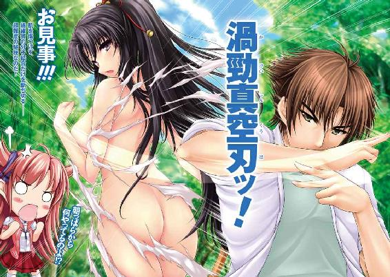
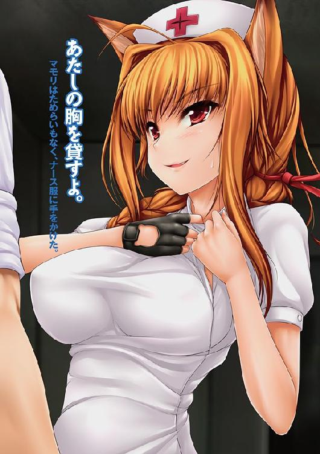
ふるこんたくと！
２ だから、ふたりにプロポーズ
あすか正太
角川スニーカー文庫
本作品の全部または一部を無断で複製、転載、配信、送信したり、ホームページ上に転載することを禁止します。また、本作品の内容を無断で改変、改ざん等を行うことも禁止します。
本作品購入時にご承諾いただいた規約により、有償・無償にかかわらず本作品を第三者に譲渡することはできません。
本作品を示すサムネイルなどのイメージ画像は、再ダウンロード時に予告なく変更される場合があります。
本作品は縦書きでレイアウトされています。
また、ご覧になるリーディングシステムにより、表示の差が認められることがあります。
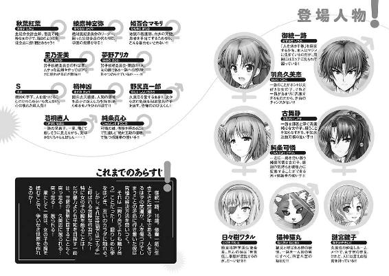
口絵・本文イラスト／uni8
序
ちかちか、と街灯が瞬いては消える。
「今夜も冷えるね......」
硬いアスファルトに、純白の看護衣に身を包んだ少女の足音が響く。
マモリ──、姫百合マモリ。
見た目は初々しい、若芽のような看護師である。
「するわ......、悪党の匂いが......」
マモリは目を細め、鋭いまなざしを寂れた街路へ向けた。
ここは、流民街。
歴史的な経緯によって、日本や英国など、複数の国家主権が入り乱れる地域、鳴神島。
その鳴神島の中でも、流民街は特別な区域であった。
数十度に及ぶ領有権の変更によって流民街はいったい誰のものかという法的支配権が分からない場所となり、個々の警察権力の手が及びにくい街となった。犯罪者が群れを成してたむろするようになり、島一番のスラムと化した場所。
深夜ともなれば、ここは暗黒に満ちた世界となる。
今夜も街の片隅で、逃げ場を失った者たちが、暴力をほしいままにする奴らに狩られようとしていた......。
「た、助けて！」
絹を裂くような悲鳴がマモリの耳に聞こえてきた。
すぐに目を向ける。乙女であった。
幼い顔だちに、チョコチップをまぶしたようなソバカスの見える少女だった。
恐怖に青ざめた顔をして追っ手から逃げている。
彼女は助けを求めるように、マモリの背後に隠れた。
「げははははは！ 待ちやがれ!!」
少女を追って現れたのは、男たちだった。
十数名はいるだろうか。
粗野、乱暴、下品の三拍子を人のカタチにしたような荒くれ者たちである。石器時代から時間を間違えて生まれてきたとでもいうべきか。
男たちは、マモリの姿を見とがめて、立ち止まった。
彼女の細い腰、白くスラリとした足、太もも、豊かな胸もとを凝視して......。
大いに笑った。
「げははははははははは！ こんな夜中に看護師の格好なんて、コスプレかよ！」
「てめえ、ヘンタイだろ」
「ヘンタイだぜ、ヘンタイ！」
「そう見える？」
くすっ。マモリも笑った。
「さぁ、その女を渡しな」
びくっ、と背中で少女が震えるのを、マモリは感じた。
（怖いのね、引き渡されると思ってるんだ）
許せない。
無法者たちに対する怒りが、マモリの中で沸き立った。
ニヤニヤと品のない笑みを浮かべながら、男たちは近づいてくる。
「姉ちゃんだって、こんな夜中に、こんな場所にいることが悪いって思うだろ。なぁ」
「おとなしく渡したほうが、アンタのためだと思うぜぇ」
「アニキ、これはこれでいいんじゃないか？」
と、そばに控えていた子分が、ぺろりと舌なめずりをした。
獲物のウサギを追いかけてたら、さらに新しいウサギを見つけたような、獲物が倍に増えたような、そんな喜悦を見せたのだ。
「ひひ、１人より２人か。それもいいな、お前、頭イイな」
「うへ、それほどでも」
「............アンタたち、頭が怪我してるね」
静かに、マモリがつぶやいた。
声には軽蔑が、瞳には怒りが宿っている。
マモリの反抗的な態度が、男たちは気に入らなかった。
「てめえ！ 俺たちが怖くないのか！」
ハッ、とマモリは笑った。
「そんだけの人数で、たった１人の女の子を追いかけ回してるアンタらの、いったい何が怖いのさ」
「なんだとッ！」
怒鳴り、男はマモリに襲いかかった。
だが、動きはマモリのほうが数段も速かった。
一瞬で相手のふところに飛び込んだマモリは、男の腕をつかみ。
「アンタ、治療が必要だわ」
男の身体に触れた。
その途端、ボキッと骨が断裂する音が、男の身体から響いた。
「ぎゃああああああああああああああああああああああああああああああああああ！」
情けないぐらいの絶叫が、闇夜に響き渡る。
「思ったより重傷ね」
ボキボキ！ ボキボキボキ！
マモリが数手、触れただけで、男の骨は粉々に粉砕された。
「これは入院するしかないね」
男は彼女の診断を聞いていなかった。
口からブクブクと泡を吹き、気絶していたからだ。
戦慄の声があがった。
「て、てめえ！ 何者だぁ!?」
「通りすがりの看護師だよ」
つぶやき、マモリは男たちに迫る。
「てめえ！」
別の男が殴りかかった。マモリはすっと体を引く。
しなやかな足だけを伸ばして、男を引っかけてはコロリと転倒させた。
虚しく空を切った男の手が、マモリのナースキャップを引っかけた。
はらり、と彼女の髪が露わになる。
「な......!?」
男たちは、驚きに声を失った。
マモリの髪からは、人間とは思えぬものが生えていたからだ。
獣の耳である。
マモリの髪からは、猫のような耳が左右に１つずつ、ぴょこんと飛び出していた。
「......じゅ、獣人族!?」
猿とは別の動物から進化した人類。それを総称して獣人族という。
人族（正しくは猿人族というべきだが）に比べて、圧倒的に数は少ないものの、この世界には犬や猫から進化した人間が存在していた。
さしずめマモリは猫人族と言うべきだろう。
「や、やべえぞ！ コイツは......!!」
男の１人が、恐怖に震え上がった。
「こいつ、ネコミミマモリだ！」
「ネコミミマモリ!!!!!!!!!!!!」
同時多発的に、男たちは戦慄した。
恐怖に、ただ恐怖に。
男たちの顔色が、紙のように白くなる............。
「夜な夜な街を徘徊して、暴れ回る地獄の看護師......ッ！」
「刃向かう相手を、次々に病院送りにする......！」
「あたしは看護師、怪我人を病院に送るのは当然のことでしょ」
さらりと、マモリは言った。
「お前が怪我させてるんじゃないか！」
「患者の〝診断〟をしてるのよ」
コツ、コツと、マモリの靴がアスファルトを叩く。
男たちの耳には、死の接近を予告する音にしか聞こえない。
「ひいいいいいいいいいいい！」
恐慌に陥った者が、金切り声をあげて、逃走した。
それはまるで巨大なダムがアリの一穴から決壊するかのようだった。
弱いから徒党を組んでいるだけだったのだろう。１人が逃げ出した途端、自分がしんがりになってはなるものかと、誰も彼もが仲間を蹴落とすようにして壊走を始めたのだ。
「た、助けてくれぇ！」
「マモリに〝看護〟される!!」
「ヤツに〝看護〟されたら、殺される!!」
「病院はそっちじゃないよ」
瞬間移動もかくやの跳躍で、マモリは彼らの頭上を飛び越えた。
「なッ......!?」
人族をはるかに超越する身体能力に、男たちは驚愕した。
これが、獣人族というものなのか。
（逃げることも出来ないのか............！）
男たちは圧倒され、打ちのめされ、がくりと膝をつくしかなかった。
ミジメなぐらいの声をあげて、命乞いを始め出す。
「み、見逃してくれ！」
「無理ね」
「お願いだ！ 助けてくれぇ！」
「もちろんよ、人を助けるのが看護師の仕事なんだから」
にっこりと、マモリは笑い。
天使のように、無垢な微笑みを顔いっぱいに広げて。
「アンタの人生を助けてあげる」
ボキボキボキボキボキボキボキボキボキボキボキボキボキボキボキボキボキ......ッ！
うぎゃあああああああああああああああああああああああああああああああ......ッ！
骨が砕け散る音と男の悲鳴が、スラムの街にこだました。
バタリと倒れた悪党を、マモリはポイっと放り捨て。
「入院して、生き方を考え直すといいわ」
次の悪党へ向かう。
「頼む！ 許してくれ！」
「それは出来ないわ。患者は病院に送るのが、看護師の仕事だから」
絶叫。そして絶息。そして次の男へ。
「オ、オレは怪我なんてしてない！」
「怪我をしてるか、してないか、判断するのはアンタじゃないの」
マモリは次々に男たちを〝診断〟していく。
残るは、１人となった。
最後の男は、すでに腰を抜かしていた。
かろうじて動く両手を使って、後ろへ後ろへと逃れていく。
それも、壁に追い詰められて終わる。
「ひ、ひいい」
からっからに乾いた声で、男は絶叫した。
「ぼ、暴力反対！」
そうね、とマモリはうなずいた。
「あたし、この世で一番、暴力がキライなの」
「ぎゃあああああああああああああああああああああああああああああ！」
男たちの悲鳴が、夜の闇に響き渡って、響き渡って、響き渡った..................。
──ややあって。
「マモリお姉さま！」
わらわらと、後輩の看護生徒たちが現れた。
マモリの〝巡回看護〟が見つけた〝患者〟を手当てし、病院に搬送するための部隊である。
死屍累々の光景を見て、ナイチンゲールの卵たちは自分たちの使命に燃え立った。
「運んで！」
「救急患者が先よ！」
「なんということでしょう！ 匠の技で、患者の両腕があり得ない方向に!!」
１人だけ、変な子がいた。
「この人、トリアージ黒かも!?」
別の看護生徒が青ざめた。
死亡、もしくは救命不可能なもの、という判断である。
「そんな......！」
彼女たちの間で絶望の声があがった。
さすがは看護師。
若き雛鳥とはいえ、命を救うことを、人生の仕事と決めた乙女たちである。
どんなにどうしようもない生命でも、『死なせるわけにはいかない』という気持ちがあった。
「とりあえず、この場は生きてることにしなさい!!」
誰かが言った。
「赤よ！ 赤タグを付けとこ！」
生命に関わる状態で、一刻も早い処置が必要で救命の可能性があるものという判断である。
「そうよ。息をしていなくて、脳波が止まっているだけ！」
「マモリお姉さまの連続無殺人記録をストップさせるわけにはいきません！」
「殺人じゃないです。業務上過失致死です！」
「マモリお姉さまったら、まったく今夜はハッスルしすぎですわ～～～!!」
１人だけ、特に変な子がいた。
ともあれ、ナイチンゲールの卵たちはせっせと男たちを手当てし、仕事を進めていく。
──そのいっぽうで。
ふう、とマモリは一息をついていた。
「今日もいい看護をしたわ」
充実感で満たされた声で、んーっ、と伸びをする。
くるりと振り向く。と、マモリが助けた少女が待っていた。
「ありがとうございます。本当に、本当にありがとうございますっ」
「よしてよ、看護師が看護師としての仕事をしただけなんだから」
「いえ、マモリさんがいなかったら、あたし、あたし......」
「今のうちに家に帰りな。こんだけサイレンが鳴っていれば、安全だろうしさ」
「はいっ」
少女は、深々と頭を下げて、その場を後にした。
それでもまだ感謝したりないと思っているのか、振り返っては頭を下げ、振り返っては頭を下げて、名残惜しそうに去っていく。
（お礼なんて、ホントにいらないのに）
人を守れたこと、そのことが、マモリの胸を静かな充実感で満たしていた。
コツリ、と硬質のヒールがアスファルトを叩く音がした。
「相変わらずね、マモリ」
独特の制服を着た女性が、マモリの前に現れた。
髪の毛はショートボブ。清楚なたたずまいのする女性である。
「こっそり見ていたの？ 相変わらずイイ趣味してるね、神宮弥」
「ええ、あなたの腕を信頼しているから」
綾鷹神宮弥、極東鳴神学園の３大警察権力の一つ、絶対風紀委員会の長である。
「あなたに頼みたいことがあって」
神宮弥は、ポケットから１枚の写真を出した。
「この男を捕まえて欲しいの。点穴術の使い手よ」
「点穴術だって!?」
途端、マモリの表情が怒気をはらんだ。
しかし、すぐに冷静さを取り戻すと、首を横に振り。
「......アタシはただの看護師よ。怪我人以外には興味はないの」
「そう言うと思っていたわ」
神宮弥は、唇に笑みを浮かべて。
「御統一路、心の怪我人よ」
一 服で心を隠さないで
御統活人流【みするぎかつじんりゅう】
「人を活かす武術！」を志す、一路が立ち上げた流派。
そもそもは『点穴』と呼ばれる「ツボ押し」の技術を使った武道『海虚心流』を学んでいた彼が、ある時、女の子のおっぱいを揉んでしまったことで、ある発想を抱いてしまったのがきっかけであった。
「殴り合うより、触り合ったほうが平和的なのではないか？」
完全なセクハラである。
だが、一路は修行で鍛えた、類まれなる「ツボ押し」の技術を持っていた。
彼に触れられると、老若男女、１人の例外もなく「気持ちよく」なってしまうのだ。
しかも困ったことに、一路と出会う子は、純粋な女の子たちばかり。
色恋も知らず、それぞれの夢にまっすぐに生きてきた彼女たちは、そこが怒るべきところだとは考えず、彼への愛情に目覚めてしまったりする。
そのへんが非常に問題なのだ。
──時は前日に戻る。
朝の森は、静謐で満ちていた。
澄んだ空気の中、草葉におりた朝露が、陽光を浴びてキラキラと輝いている。
森の中にある、少し開けた場所に、少年と少女が立っていた。
拳法のかまえを取り、２人は相対している。
少年の名は、御統一路。
少女の名は、古舞静。
年の頃合いは同じであるが、師弟の２人である。
息を整え終わったのは、静が先であった。
「やああああっ！」
裂帛の気合いと共に、静が飛び出した。
ダン、と地面を蹴って、一路との距離を一気に詰める。
「ぬ！」
すると一路はバックステップを踏み、同じだけ遠ざかる。
逃げたわけではない。
「渦勁真空刃ッ！」
叫び、すばやく両腕をクロスさせるように左右に薙ぎはらった。
バッ！ 静の服が弾け飛んだ。
春はあけぼの。満開に満ちた桜が風にあおられて、桃色の花びらを空に散らすように、乙女の身を守っていた衣服は、一路の放った波動によって、粉々に千切れ飛んだのだ。
衣服が！ 衣服だけが!!
初雪のように汚れなき肌が、一路の前で露わとなる。
メロンを切ってのせたような胸が、さらけだされた。
まあるく綺麗なカタチをしていて、ぷるぷると張っている。
Ｅカップは軽く凌駕するであろう大きさなのに、重力に逆らって凜と上向く姿は、美しさを超えて誇らしくもある。
ふくよかな胸、弓のような腰、むっちりとした太もも、そのあわいに見える下草さえも、朝日のもとにさらされてしまった静。
「........................！」
彼女は、言葉を発することも忘れ、立ち尽くした。
師匠と信じた一路。彼が放った技。
その技が己の裸体をさらけだすものだったと知り、身体が震え、こみ上げてくる感情に全身を抑えることが出来ず。
「お見事です!!」
感動を露わにした。
「うむ」
一路もまた、会心の笑みを見せた。
女の子を丸裸にした男が見せる笑顔とはとても思えないほどの、実にさわやかな笑顔であった。
「人肌を傷つけず、繊維質の分子結合だけをほどく波動を放つ。その加減が難しかった」
「さすがは師匠です！」
静は、憧れに満ちたまなざしを一路へと向けた。
古舞静。かつて一路に刃を向けた少女である。
生まれてから今まで、剣術の路をひた走ってきた、ある意味、世間知らずの少女であった。
彼女にとって、一路はこれまで出会ったことのない発想の持ち主だった。
〝殴り合うより、触り合おう！〟
衝撃的な思想だった。
〝武術の力は、人を傷つけるより、仲良くするために使うものだ〟
彼の言うとおりだ、と彼女は思った。
一路の言葉は、純粋すぎる静の心を矢のように打ち抜いた。
──そんなわけで、静は一路に弟子入りをし、今ここで、生まれたままの姿を大地にさらすはめになったわけである。
（裸にされることもまた、活人流がその神髄へと至るための一歩！）
そう考えてしまう静であれば、恥ずかしさを超えて、喜びに震えだすことも、ごくごく自然な反応と理解することも出来なくもなかった。
──つまり、まあ、変な子なのだが。
純粋すぎる少女ということで理解していただきたい。
「失敗するかもしれない技を、よく受けてくれたな」
「師匠の目指す拳は、人を傷つけぬ拳」
「そうだ。武道の技を使って、闘いを避ける。それが活人流の目指す〝路〟」
「はいっ！ 静はどこまでも付いていきます！」
付いていく気らしかった。
「人は誰しも裸にされれば、闘う気力を失うもの。渦勁真空刃──これを使えば、無用な闘いをまた減らせる」
冗談でも何でもなく、本気１００パーセントの表情で、一路はつぶやいた。
同意の上とはいえ、女の子を１人ハダカにしておきながら、彼の中には自分がエッチなことをしているという自覚がまったくない。
真の二次元好きが、三次元の異性にはまったく心ひかれないのと似たような理屈で、真の武術バカである一路にとっては〝武の神髄を究めることで、争いを治める〟という活人流の前進だけが関心事であった。服の生地が飛び散ったあとで、グラマラスな女の子の裸体が露わになろうと、そんなのは食玩のお菓子ほどの価値も持たなかったのだ。
いいのか、悪いのか。
そんな時である。
（ぬっ!?）
一路は背後に、すさまじい量の殺気を感じ取った。
とてつもない怒り。常人のものとは思えぬ感情のほとばしりをビリビリと肌で感じ取った。
（今こそ、編み出したばかりの必殺技を使う時！）
一路は構えを取った。
「渦勁真空刃ッ！」
バッ。
背後にいた少女の服が舞い散る。
ひらひらと舞い散る鳴神学園の制服。そのあわいに、見覚えのある少女の顔が見えた。
「く......、久美恋どの？」
一路は目を丸くした。
羽鳥久美恋。一路の幼なじみにして、この島における一路の身元引受人である。
一路は当惑した。
（どうして、久美恋どのは、今この場所で、すさまじい怒りを噴出させていたのだ!?）
殺気を感じたから、技を放ったのである。
一路は、両手で大事な場所を隠す久美恋のもとへ、何の遠慮もなく駆けつけた。
「久美恋どの、大丈夫か？」
「一路くんこそ、何をしてたのよ!?」
いきなり全裸にされるとは想像もしてない（出来るはずもない）久美恋は、ぺたんと座りこんでは、声を荒げた。
「何を、とは？」
問われるほどの大ごとをしている自覚のない一路は、目を点にするばかりだ。
「静さんに何をしていたの、って聞いてるの！」
「見ての通りだ。静どのをハダカにしていただけだ」
だけ、らしい。
「それが朝っぱらからすることっ!?」
久美恋はますます沸騰した。
「うわっ、どうしたのだ、久美恋どの。その闘気のほとばしりは普通ではないぞ」
「普通じゃないのは、どっちなのよ!?」
ハッ、と一路はひらめいた。周囲に素速く目をやる。
「もしや近くに敵がいるのか？ 女の敵が!!」
「女の敵......。一路くん、いいこと言うわね」
久美恋の唇が不気味に歪んだ。
「やはり、いるのか。さっそく退治をせねば！」
「そう思う？」
「むろんだ。当然のことだ」
「じゃあ、目をつむって、歯を食いしばってね」
「へ？」
きょとん、と首を傾げた一路の喉から、断末魔の絶叫が響きわたるのは、すぐあとのことだった......。

「人目を忍んで！ 森の中で！ あんなことしてるなんて！ もうもうもうもう、信じられない信じられない信じられない～～～～～っ！」
「久美恋どの、食事中に興奮すると、胃の消化に悪いぞ」
「諸悪の根源に言われたくないっ！」
食堂いっぱいに、久美恋の嘆きが響きわたった。
ここは一路たちが生活する、学生寮。その食堂である。
寮とはいっても、廃業した木造旅館を再利用しているだけの代物なので、人気はなく、多くは空き部屋。テーブルを囲むのは、久美恋に静、鍵子、可憐に猫丸ぐらいであった。
そして、見るも哀れな姿の一路が。
音速を超えると言われる天下一品の神脚から繰り出されるキックのラッシュを、何発も何十発も何百発も喰らい、蹴り飛ばされ、カカト落としを受け、首狩りを喰らい、最後には踏みつけられ、よくもまあ、それでも生きていられるものですね的な状態だったのである。
みんながテーブルで食事をしている中、一路は板張りの床に正座させられ、もちろん朝ご飯はお預けである。
「朝の件は誤解だっ!!」
「何が誤解なのよっ!?」
思い出し、久美恋は顔を真っ赤にさせた。
「あれは闘いを避けるための技であって」
「憎しみを生むだけの技ですっ！」
きっぱりと久美恋は言い切った。
「............そういうものなのか？」
マジメな顔をして、一路は訊ね返した。
「女の子の裸は、男の子が見ちゃいけないものなのっ！」
「なんと！ 初めて知った!!」
ががーん、と雷でも落とされたような顔をして、一路は驚いた。
「馬鹿すぎる!!」
とほほ......。久美恋は頭が痛くなった。
世間知らずもここまで極まると、怒りを通り越して、ため息が出てしまうのだ。
「もー、可憐も、なんか言ってよぉ」
久美恋は、隣の可憐に話を振った。
純条可憐。その名に相応しく、純情可憐な乙女である。
由緒ただしき名家の生まれで、それはもう大切に大切に育てられてきた箱入り娘のお嬢様だった。しかし、ひょんなきっかけで一路に命を助けられてしまったことから、彼こそが運命の相手と思い込んでしまい、押しかけるように鳴神学園にやってきたのである。
（可憐は一路くんのことが好きなんだから、静さんと一路くんがエッチなことをしているなんて、きっと面白くないはず）
だから、自分の味方になってもらえるはず、と久美恋は思ったのだ。
ところが、可憐はむしろニコニコとした微笑を浮かべて。
「可憐は、そんな一路さまも素敵に思いますわ」
「ど、どのへんが!?」
久美恋は衝撃を受けたように、よろめいた。
一路を好きなことにかけては、誰にも負けないと思う久美恋である。
エッチな一路を許せないと思う気持ちもある反面、そんな一路でもいいと言ってしまえる可憐を見てると、自分の愛情が負けているようにも思え、いや、でも、やっぱり朝からアレはないだろうと、混乱した気持ちに襲われてしまうのだ。
「胸を揉んで仲直りの次は、服を吹き飛ばして世界平和とは。わたくしごとき凡百には思いつきもしない想像力。さすがですわ............」
皮肉でも冗談でもなく、可憐は心の底から一路に感動していた。
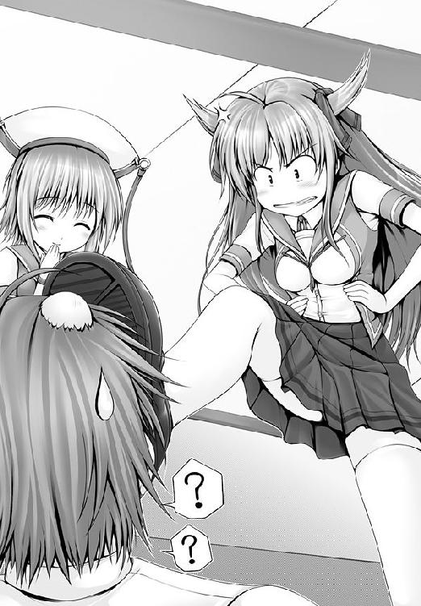
「想像を絶するという意味では同意するけれど............」
「大望を成す者は大それたことをするものです。その行動を、小さな常識に押し込めるものではありません」
「大望を成す前に、犯罪者になりそうな気がするんだけれど............」
本気で心配な久美恋である。
「それもそうですわね」
その点については可憐も同意した。
「でしょ？」
「世間が天才を理解するには、時間がかかるものですから」
「世間のほうが間違っているって言いたいの!?」
「困ったものですわ」
はぁ......、と可憐はため息をついた。
（可憐って......、一路くんのこと、天才だと思ってるんだ......）
そんなことを久美恋は思い、ちらりと静のほうを見る。
（静さんは静さんで、一路くんのことを、神さまのように尊敬しているし......）
愛情に純粋でいられるという意味では、久美恋は２人がうらやましくもあった。
（いっそ、自分もそんなふうに勘違いできたら......）
いやいやいやいや！ いやいやいやいや！
（それ、考え方が間違っているから！ 根本的に！ 根源的に！）
ぶるぶると久美恋は首を振って。
（わたしまで、この３人に流されたら大変なことになっちゃう！）
一路の活人拳、可憐の感謝拳、静の抜刀術。
一騎当千の腕を持つ３人が徒党を組んで、学園中の女の子の服を脱がしまくるようなことをしでかし始めたら......。
（この島は大変なことになる!!）
久美恋は冷や汗をたらたらと、たらたらと流した。
（わたしがみんなの目を覚まさないと......、みんな監獄送りだわ............）
好きな人のことだけでなく、恋敵の人生の心配までしてしまう女の子。
それが羽鳥久美恋という少女だった。
──と、そんな久美恋の胸中はさておいて、可憐が。
「一路さま。わたくしも一路さまと修行をいたしたいですわ」
「どんな？」
久美恋が聞いた。
「ご安心下さい。可憐は、野外で服を吹き飛ばし合うような荒ごとはいたしません」
「そうなの？ それならホントに安心なんだけど」
久美恋はホッとなる。
「服は吹き飛ばすのではなく、脱がしてもらうもの」
「え......」
久美恋はイヤな予感がした。
「夜な夜な、２人きりで、愛の修行をするのですわ」
きゃっ、と可憐は真っ赤になる頰を両手で押さえた。
「絶っ対に、禁止ですっ!!」
「これは犯罪ではありませんわ。むしろ賞賛されるべき愛の営み」
「わたしたち、まだ高校生でしょ～～～～～～～～～～～～～～～～～～っ！」
はぁ............。
自由人ばかりに囲まれ、ため息ばかりが増える久美恋なのであった。
じりじりと太陽が熱い。
沖縄本島から、さほど離れていない場所にある鳴神島は、５月にはもう夏の世界となる。
「む～～」
一路は逆さまになっていた。
逆立ちではない。
大樹の枝に足を引っかけて、コウモリのように頭を下にしてぶらさがっていた。
考え事をするときは、いつも逆さまになるのである。
真夏の空の下、体中の血やら汗やらが頭に集まって、見た目にもしんどそうなのだが......。
「浮かない顔をしているな」
足音もなく、葛桐が現れた。
スーツ姿にネクタイをキッチリと締め、見た目はいかにも真面目なサラリーマンに見えるが............。
「葛桐さんっ!?」
驚いて、一路は木から落ちてしまった。
強く、頭を打ち、うめく。
「痛つつつつ......」
「ハハッ、気の練りが足りないな」
「は、はい......」
一路と葛桐は師匠を同じくする兄弟弟子であった。
兄弟子である葛桐の前で見せてしまった醜態に、一路は目を合わせるのも恥ずかしくなってしまい、しゅんと肩を落としてしまった。
「どうして、こんなところに」
「アニキが弟の様子を見に来てはいけないか？」
と、葛桐は飲みかけのペットボトルを一路に渡した。
スポーツ飲料である。買ってさほど時間が経ってないのか、冷えていた。
ごくりと飲むと、熱くなっていた一路の身体に、涼気がしみ通っていく。
生き返るようだった。
「行き詰まったか？」
一路は、自分が思っていたほど活人流が周囲の理解を得られていない現実を、葛桐に話した。
「......ま、そうだろうな」
「葛桐さんは分かっていたのですか!?」
「いや、分からないほうが、おかしいだろ」
こんなことで驚かれても困る。葛桐は一路を見やった。
「活人流が理解されないことが、オレは不思議で仕方ありません」
大真面目な顔をして、一路が言う。
ぶっ、と葛桐は吹きだしてしまった。
（コイツ、ホントの本当に、何も分かってないのか!?）
「どうしたんですか？ 葛桐さん」
「い、いや、なんでもない。......続けろ」
けほけほと咳をするフリをして、笑ったことを誤魔化し、葛桐は一路に話の続きをうながした。
「久美恋どのが、いつもイライラしているのです」
一路は、朝の出来事を話した。
「はぁん、それはストレスだな」
「ストレス、ですか？」
「心の疲れだ。心が疲れると体調も悪くなるものだ。それで彼女はイライラしているんじゃないか？」
心が疲れた上に、身体まで疲れるなんて、ふんだりけったりのような感じもするが、それ自体は、悪いことではなかった。
身体が悪くなることで、心の不調にも気づくコトが出来るからだ。
喉や鼻が痛くなることで『風邪の引きかけ』に気付けるようなものである。
ましてや心は『見えない』ぶんだけ、身体を悪くすることで脳に『休め』というサインを送る必要があった。
生き物として備えている、当然の防衛本能なのだ。
「心が疲れると身体も悪くなる......、なるほど！ そうか!!」
ぱんっ、と一路は手を打った。
「何をひらめいた？」
「逆もまた真。心が悪くなれば身体も悪くなるというなら、身体をよくすれば心もよくなるということですよね」
「まあ、そうだな」
これもまた、あながち噓ではない。
お風呂に入って血行をよくすると、悩みが晴れたりすることは、よくあることだ。
心と身体は深いところでつながっている。
「つまり点穴です!!」
一路の言う点穴とは、乳揉みのことだ。
全身に血液を送り出す心臓、そこに一番近い場所をマッサージする。
すなわち乳房を触ったり揉んだりする行為である。
「......おい」
葛桐は半眼になった。
「やはり点穴か、点穴は万能だな」
「......おい、一路」
葛桐の声は、一路に届いていない。
点穴が解決になると分かった途端、一路の目はキラキラと輝きだし、水を得た魚のように生き生きとしはじめたのだ。
「そういえば、静も可憐どのも点穴したあとは人が変わったようになりました。久美恋どのも点穴のすばらしさを知れば、イライラも取れて、元気になるに違いありません」
「......お前、もしかして久美恋どのの胸にも点穴をするつもりか？」
「もちろんです!!」
さわやかに。
実にさわやかに、一路は言ってのけたのだった。
「................................................」
葛桐は沈黙した。
「ん、どうしたんですか、葛桐さん？」
「......お前はなんでも点穴なのだな」
半ば呆れたように、つぶやく。
「はい。点穴こそ、究極の武術であり医術。それを証明するいい機会ですっ！」
「......ま、いいか」
「どうしたんですか？ 葛桐さん。何か言いたそうな顔をしてますけど」
「いや、いい。なんでもない。うまくいくといいな」
「はいっ」
葛桐に言葉を貰ったことで、一路はさらに笑顔になり、元気よく走り出していった。
１人残った葛桐は、ぽりぽりと頭を搔き。
「............ま、痛い目を見ないと、分からんものだしな」
かなり無責任な教育方針の、葛桐だった。
対して、ここは久美恋の部屋である。
「はぁ............」
久美恋は深い、魂が抜けてしまうぐらい深いため息をついていた。
ベッドの上で、猫丸とじゃれていた鍵子がつぶやく。
「久美恋も、胸を触らせてあげればいいのよ」
「なんでそうなるのっ!?」
顔を真っ赤にして、久美恋は抵抗した。
「だって～、一路クンのことが好きなら、いずれはしちゃうことでしょ？」
「途中の段階をはしょりすぎでしょっ！」
「途中？」
「こ、告白とか......」
恥ずかしいのか、うつむき、声をすぼめながら、久美恋がつぶやく。
「この前、ずっと一緒に暮らしたいって言ってくれたじゃない。一路くん」
「ごはんが食べたいって言ってるだけでしょ！ あれは!!」
先日、一路が告白をした一件である。
久美恋の炊いたごはんに魅了された一路は、愛の告白かと勘違いするようなことを言ったのだ。
「彼氏彼女の関係になれば、エッチぐらいアリでしょ？」
「え、えっち!?」
あけすけな鍵子の言葉に、久美恋はドキマギした。
「一石二鳥じゃないの」
「で、でもぉ......」
久美恋は顔を真っ赤にさせた。
恥ずかしいのか、人差し指の先と先を合わせてゴニョゴニョとさせる。
「い、一路くんが、わ、わたしのこと、好きかどうか、分かんないし......」
「何を受け身でいるの！」
鍵子は叱った。
「久美恋の気合いで、愛にするのよ！」
「あ、愛？」
「キモチは分かるわ。一路クンのことがホントに大好きだから、思い出を丁寧に作っていきたいのよね」
「う、うん............」
ぽっぽと顔を火照らせる久美恋である。
「だったら、なおさら可憐や静に取られちゃダメよ」
鍵子は続けて。
「だ、だけどぉ」
「なによ、何が不満なの？」
「一路くんったら、むちゃくちゃなんだもん」
「ここは自分を信じる時よ、久美恋っ」
がしっ。鍵子は久美恋の肩をつかんだ。
「じ、自分っ？」
「一路クンを好きになった直感を信じるのよ」
「そうだぜ、あいつは悪い奴じゃねえ」
猫丸もうなずいて。
「ただ、とんでもない馬鹿なだけだ」
「な、何のフォローにもなっていない気が......」
励まされているのか、なんなのか、久美恋は分からなくなった。
「デートよ！ 久美恋っ、デートに誘いなさい！」
「で、でぇと!?」
ぼしゅっ、と久美恋は顔から蒸気が噴き出しそうになった。
「なに？ あなた、デートにも誘えないの？」
呆れたような目をしてみせる、鍵子。
「さ、誘えるよぉ」
弱々しく、久美恋がうなずいた。
「ホントに言えるのぉ？」
見透かすような目をして、鍵子が追撃した。
「い、言えるわよぉ」
「ちゃんとデートしてって言うのよ。お買い物に付き合ってとか、回りくどい言い方じゃなくて」
「え、ええっ!?」
久美恋は焦る。
じと......っと、鍵子は疑うような目をして。
「久美恋の想いって、そんなものだったんだぁ」
「えっ」
「いざって時に覚悟も決められないなんて、好きのレベルもたかが知れてるわね」
「そ、そんなことないもんっ！」
久美恋の心に、ぼぼっと火が付いた。
「無理だぁ」
「言えるもん！ それぐらい言えるもんっ！」
「ホントかなぁ？」
「もうっ、見ててよ！」
言って、久美恋は立ち上がった。
めらめらと闘志を燃やし、拳をぎゅっと握りしめる。
「行ってくるわ！」
まるで最終決戦に挑む勇者のような覚悟を全身から発しながら、久美恋はのっしのっしと部屋を出て行くのであった......。
「い、いや......、ケンカの果たし状を渡しに行くんじゃないんだから......」
鍵子の声は、久美恋に届かなかった。
ドキドキドキドキ............。
緊張と恥じらいが、心臓を強くノックする。
（言えるもん。わたしだって、それぐらい......!!）
久美恋は、一路の部屋の前に立っていた。
ノックをしようと手を伸ばし、触れるか触れないかのところで、ためらう。
ドキドキドキドキドキドキドキドキドキドキドキドキ............。
それだけのことで、久美恋の心臓は爆発しそうになる。
（緊張するよぉ～！）
やっぱり自分からデートに誘うのは恥ずかしい!!
耐えきれず、久美恋はくるりと背を向けた。
「久美恋どの」
一路の姿が。
「ひゃっ」
「ど、どうしてここにっ!?」
久美恋の顔面がみるみると、朱色に染まった。
「どうしても何も、ここはオレの部屋なのだが......」
「そ、そうだよね、そうだよね。あはははははははははははははは」
「久美恋どの、オレに話でもあるのか？」
「ないっ！ 全然ないっ！ ないないないないないない！」
ハッ、と久美恋は我に返った。
（全力で否定してどうするのよ!!）
久美恋は困った。本気で困り果てた。
（デートしてって言うだけなのに............！）
体中の血液が頭の中に集まったようになって、何も考えられなくなる。
真っ白になる。
ドキドキして、ドキドキして、心が破けちゃいそうになる。
「さ、さよならっ！」
緊張に耐えきれず、久美恋は背を向けた。
ぎゅっ、と彼女の手を一路が握った。
「えっ」
「久美恋どの、身体の具合でもおかしいのか？」
彼女の赤面を、一路は発熱だと解釈したらしい。
久美恋の額に手を当てて、熱の具合を判断した。
「ひゃっ、ひゃっ」
一路に触れられて、久美恋はますます真っ赤になった。
「すごい熱だ。鍵子どのを呼んでこよう」
「呼ばないでっ」
今度は久美恋が一路の手をつかんだ。気づいたら、つかんでしまっていた。
（も、もう引き返せないよ！）
久美恋はありったけの勇気を振り絞った。
「い、一路くんっ！」
不自然に視線を泳がせて、うつむき。
「あ、あのね......、あのね！」
顔を上げる。
「わたしとデートして欲しいの！」
ぷしゅー。
湯気が噴き出た。
（言ってしまった......！）
久美恋は、一路の答えを待った。
１秒が１時間にも思えるほどの緊張が過ぎていく。
きょとんと一路は首を傾げて。
「デートって何だ？」
（それ以前の問題だった!!）
へなへな、と久美恋は床に崩れ落ちた。
「うわ！ 久美恋どの！ 久美恋どの、大丈夫か！」
デートの誘いをしにいったはずが、気絶した。
久美恋を部屋に戻して、鍵子と猫丸は一路の部屋にやってきた。
じとっ......と疑うような目つきで、鍵子は一路に近づき。
「......一路クン、いったい久美恋に何したの？」
ふるふる、と一路は両手と首を振った。
「な、何もしておらん。デートの約束をしただけだ」
「デートの約束をしただけで？ 気絶？」
信じられない鍵子である。
目を点にして、肩をすくめるばかりだ。
「そんだけ純情だったってことじゃないのか、久美恋ちゃんが」
猫丸はそんなことをつぶやいて、ヒゲを揺らした。
「想像以上の純情さね......」と、鍵子。
真実は、純情というよりも失望だったわけだが。
「ま、デートの約束はしたみたいだし、オッケーなんじゃないか？」
「うむ。日曜日は任せておけ」と、一路。
（嫌な予感がする......）
あまりに一路が自信満々な態度を取るものだから、かえって鍵子は不安になってしまった。
「......一路クン。念のために聞くけど、デートで何するつもりなの？」
鍵子が聞く。と、自信満々に一路は胸を張り。
「それはもちろん、点穴だ！」
あちゃー、と鍵子は両手で顔を覆った。
しかし一路は、瞳をキラキラと輝かせるばかりで。
「葛桐さんが教えてくれたのだ。イライラには点穴がよく効くと」
「......あ、あのさ、一路クン。世界にはいろんなモラルがあるから絶対だとは言わないけど、いちおー文明国では、人前で女の子をハダカにするのはよくないことになってるのよ」
「なんと！」
一路は驚いた。
そんなことで一路が驚いたことに鍵子は驚いた（が、半分ぐらいは予想していた）。
「ならば仕方あるまい。指圧の効きは悪くなるが服の上から......」
「人前で、女の子の胸を触るのも犯罪なの」
はっはっは。一路はさわやかに笑い。
「鍵子どの。胸を触るのが犯罪だなんて、そんな馬鹿な話があるわけが」
「あるのよ」
「なんと～～～～～～～～～～～～～～～～～～～～～～～～～～～！」
天地がひっくり返りそうな驚愕を、一路は見せて。
「お、おそるべし、文明国............！」
一路は戦慄し、鍵子もまたそんな一路に戦慄した。
「そうね......。アタシはアタシで、一路クンの底抜けっぷりに恐ろしさを感じてるところよ......」
「......まいったな。点穴できないのであれば、どうやって久美恋どのの機嫌をとればいいのか......」
真剣に一路は悩み始めた。腕を組み、うんうんと唸り始めた。
「ホントのホントに本気だったのね......」
やれやれ。
念のため、聞いておいてよかったと思う鍵子であった。
「おい、一路」
と、猫丸がトコトコと一路に近づいていく。
「点穴をする、いい場所があるぞ」
「まことか」
「ホテルだ」
「ええっ!?」
鍵子が異議を唱えるような声をあげた。
と、猫丸は鍵子にひそひそと耳打ちする。
「ここは考えようだぜ、鍵っち」
「考えよう？」
「一路の点穴バカっぷりを直すには、ホントのエッチしかない」
ホントのエッチとは、保健体育の時間に習うようなエッチのことである。
「で、でも、それはちょっと......」
「一路だって、ホントのエッチを知ってしまえば、女の子の胸をつつくのなんて、レベルの低い、子供の遊びだって分かると思うんだ」
「それはそうかもしれないけれど......」
「ていうか、このままじゃ一路はホントに犯罪者になっちまうぜ」
「確かに」
そこにはうんうんと深く同意する鍵子である。
「久美恋ちゃんも久美恋ちゃんで、色恋にかけては古風というか、女のほうから言い出してはいけない、みたいに考えてるところがあるからな。一路から迫るカタチにしないと、いつまでも進まない気もするんだよな」
「そうそう、そうなのよ～。あの子ったら、けっこうウブだから」
話はまとまった。
くるり、と猫丸は一路に向き直って。
「分かったな、一路。男なら久美恋ちゃんをホテルに誘え！」
「うむ、わかった」
「あやしいな、ホントに分かってるのかぁ？」
軽すぎる一路の答えに、猫丸は目を半眼にする。
「こういうのは切り出し方が大事なんだ。ナンパの一つもしたことがないお前が、久美恋ちゃんをうまいことホテルに誘うにはだなあ......」
「心配無用だ、猫丸」
約束は日曜日。時間は12時。場所は近くの駅のバスロータリーで待ち合わせ。
「オレも男だ。決める時はバシっと決める」
日曜日。12時。待ち合わせのバスロータリーの前。
一足早く来ていた久美恋。それから遅れて一路が現れる。
彼女の姿を見つけ、一路は笑顔になり、駆けつけて、開口一番、こう言った。
「久美恋どの、ホテルに行こう！」
バシッ......！
一路の頰に、久美恋のビンタが決まった。
ひりひりと痛む頰をさすりながら、一路はきょとんと首を傾げ。
「ん？ 言い方を間違えたか？」
「根本的に間違っていますっ!!」
ざわざわ。ざわざわ。
一路の発言か、久美恋の平手打ちか、駅前に集っていた人々が次々と好奇のまなざしを２人へと向けた。
「ねえ、聞いた？」「ホテルだって」「こんな昼間から......」
カ～～～～～～ッ。みるみる久美恋の頰は真っ赤になっていった。
「もう～っ！ 行くわよっ！」
久美恋は一路の手首をつかんで、つかつかと引きずった。
そのまま人目につかない場所まで移動する。
小さな公園だった。砂場があり、ブランコがあり、シーソーがあり、ちょっとオシャレなベンチが設置されている。
子供たちは遊具で遊び、母親たちは井戸端会議に花を咲かせている。よくある休日の光景だった。
年頃の少年と少女が連れ立って訪れることもまた、よくある光景と言えた。
まぁ......、普通のカップルなら、よかったのだけれど。
ぷんぷん、と久美恋はおかんむりだ。
ぺこり、と一路は謝って。
「すまない」
「遅いわよっ」
「あれは、久美恋どのが喜ぶと思って」
「一路くんは、わたしのこと、あんなこと言われて喜ぶ女の子だと思ってたの!?」
がーん、である。
久美恋は金づちで頭を打たれたように、ショックを受けた。
だが、すぐに、はぁ......、とため息をつき。
「もー、どうせ猫丸くんあたりにそそのかされたんでしょ？」
「なぜ分かった？ すごいな」
「分かるわよ」
一路くんのことだもん......。それは心の中だけでつぶやき、久美恋は彼にツンと背を向けた。
うつむいた視線に、おめかしをした服や気取ったハイヒールが映る。
（張り切っちゃって。わたし、バカみたい）
めいっぱい可愛く決めた格好から、１人だけウキウキしていた自分を見透かされるのも恥ずかしくて、久美恋は一路のもとから離れようとして......。
ゴキッ、と足をくじいた。
「痛っ」
「大丈夫か、久美恋どの」
一路は久美恋を支えに入ると、そのまま彼女をベンチに座らせる。
ハイヒールを脱がして、怪我の具合を見る。
「慣れぬ靴を履くからだ」
「悪かったわね」
ぶすっ、と久美恋は頰を膨らませた。
「新しい靴をおろしたときは、あまり早足で動かぬほうがいい」
「気づいてたの？」
「久美恋どのに似合っているな、と思ったが、慣れてはいないとも思った」
「なんで、黙っていたのよ」
「女の身体は凝視するものではないと言われていたので黙っていた」
「褒めるのはいいのよ」
「そうなのか、勉強になる」
一路は、久美恋の足の具合を確かめると、ツボを押した。
治療の点穴をしたのだ。
「っ............！」
痛いのは最初だけだった。
触れられた場所から、温かい波動のようなものが伝わってくる。
（これが......点穴？）
久美恋はドキドキとした。
（緊張のドキドキとは、少し、違う）
（とても、優しいドキドキ）
足を触られているだけなのに、彼に、すごく大切にされているように思えるのだ。
愛情みたいなものが、足に触れた彼の指先ごしに伝わる。
（一路くんの手のひらって、とっても温かい............）
足を触られているだけなのに、抱きしめられているようなカンジすらしてくる。
点穴の技術が優れているだけでは、こんな感じ方は出来ない、と久美恋は思った。
痛みを取ろうと、真剣になっている一路の気持ちがあるからだ。
（そう、一路くんはいつも真剣......）
誰よりも久美恋は、一路のマジメさ、まっすぐさを知っていた。
ただ、そのまっすぐさがヘンタイ一直線なだけだった。
「触りあいっこで仲良くなろう」だなんて、１００人の女の子がいたら、98人は受け入れられない発想だし、自分もその１人だと思っていたが、いざ、自分が点穴を受けてみると、純粋な一路の態度に、心が動きそうになった。
（静さんや可憐さんも......、こうやって一路くんを理解していったのかな）
２人に出来たことなら、自分にも出来るはず。
（いや、違う）
ふるふる、と久美恋は首を小さく振った。
（対抗意識じゃないわ）
（ただ、一路くんに、素直になりたい、だけ）
とくん、と心臓が鳴った。
背中を押されている気がした。自分の気持ちに。
「あ、あのね......、一路くん」
不思議なぐらい、落ち着いていた。
言える。
今なら、言える。
そう思い、久美恋は口を開いていた。
「えっとね、わたしね、一路くんのこと............」
「見つけたわ！ ここで会ったが百年目!!」
突然、聞き覚えのある声が轟いた。
「お前は......！」
つられて一路は驚いたが、すぐに我に返り。
「んと、お前、誰だっけ？」
「夢野アリカよっ!! 男子根絶委員会、桃組筆頭の!!」
「あー。思い出した。変人集団の」
「アナタに変人呼ばわりされたくないわ!!」
男子根絶委員会とは、その名の通り、この鳴神学園から実力行使で男子を追放してしまおうと活動中の武闘派集団である。
当然のことながら、メンバーは全員が女子であり、当然のことながら、女の子の胸を触って世界平和などとホザく一路を敵視しており、当然のことながら、衝突もした。
「く～、アナタの顔を思い出すだけで、悔しさが蘇る!!」
以前の闘いは、一路が勝利していた。
「ぬ？ おぬし、点穴を受けに来たのか？」
「誰がっ！」
アリカは腕をブンブンと回して、怒りを露わにした。
「点穴を受けに来たわけでないのなら、何の用だ？」
「アナタの前に現れる子は、全員、胸を揉まれに来るってワケ!?」
「大歓迎だが」
「大迷惑なのよっ！」
「ちょっと、アリカさん！」
久美恋が２人の間に割って入った。
「アリカさんが怒る気持ちはもっともだけど、たった１人で一路くんに立ち向かうなんて無理よ」
たしかに、今回のアリカは部下を引き連れていなかった。
アリカは武術を嗜んでいるわけではない。
対して、一路は武術の達人だ。久美恋はそのことを心配した。
「優しいのね、久美恋」
アリカは優しい笑みを彼女に向けると、視線を一路に移し。
ニヤリと、不敵に笑った。
「大丈夫よ、最後に勝つのは私だから」
嫌な予感がし、一路が身構えるのと、アリカが懐から丸い物体を取り出すのは同時だった。
アリカは物体を、床に叩きつけた。
「くっ！」
瞬間、まばゆい光が一路たちの目を襲った。
「目くらましか」
視力が回復した頃、薄く開けた目で、周りを見渡す。
「久美恋どの！」
彼女とアリカの姿がなかった。
いや、いた。
久美恋の手をひいて、公園の外へ走り去っていたのだ。
「待て！」
一路は追う。
すると、アリカはくるりとふりむいて、そばにいた警官に一言。
「あの人、痴漢なんです」
「なにっ！」
近くの交番からも、警官が飛び出してくる。
屈強な警官たちは一路に迫った。
「キサマが痴漢か！」
間違ってはいなかった。
「誤解だ！ オレはただの点穴術師」
「テンケツ？ 何をするつもりだったんだ」
「彼女の胸を揉もうと」
「逮捕する!!」
「なんと！」
一路が警官たちと一悶着している間に、アリカと久美恋の姿は視界の彼方に消えていこうとしていた。
「やむをえん！ 渦勁真空刃!!」
一路は警官を吹き飛ばした。
彼らの、服を。
「こ、こら！ キサマぁーっ!!」
警官たちは激怒する。そりゃ激怒もするだろう。
かたや一路は、よし、と拳を握りしめて。
「御統活人流！ 不闘の誓いは守った！」
警官たちは裸にされた怒りやら恥ずかしさやらの上に、笑顔の一路に混乱するしかなかった。
「どうしてそこで胸を張る!?」
「急用につき、ご免！」
警官たちの怒りを無視し、一路は走り出した。
どこまでも人の話を聞かない男だった。
細い腕をしているわりに、アリカの久美恋をひっぱる力はなかなかのものだった。
通りを越えたところにある、大きな公園にアリカは久美恋を連れて行った。
さっきまでの小さな公園が、いかにも子供の遊び場だとすると、こちらの大きな公園は遊具などはなく、池を周回するように緑と歩道を巡らせただけの、大人の憩いの場である。
アリカはボート乗り場へと歩を進め、桟橋へと向かった。
「わたしを誘拐して、一路くんに何をするつもりですか！」
「何もしないわよ」
「えっ」
あっさりとしたアリカの答えに、久美恋はきょとんとなった。
そんな久美恋の愛らしい顔を見て、にんまりとアリカは微笑み。
「私が何かしたいのは、久美恋、あなただもの」
「ええ～っ!!」
あられもない久美恋の声が、湖にこだました。
アリカはボートに乗って、久美恋とイチャコラしようと考えていたのだ。
「男子根絶委員会は男が嫌いなの」
男が嫌いということは、つまり女の子が好きということだった。
性的な意味で。
「久美恋どの！」
一路の声だった。
だが、アリカがボートを出すほうが早かった。
勝利の高笑いが響く。
「あははは、遅かったようね！」
「龍踏術！」
一路は大きくジャンプすると、水面を蹴り、アリカのボートに乗り込んだ。
「水の上を、走った!?」
アリカはびっくりする。
一路は久美恋を抱きしめると、またジャンプして、岸辺へと戻っていった。
「待ちなさい！ 一路!!」
「オレもアリカ殿に用があった」
一路は、水の上を再び走って、ボートの上に戻って来たのだ。
ハッ、とアリカは気付いた。
「ぎゃ！ なんであんたなんかと２人きりに!?」
「心の疲れは身体の疲れ。イライラは血の巡りを悪くして、血の巡りが悪いとさらにイライラする。そんな時は点穴が効く。点穴しかない。さあ、点穴だ」
「どんな三段論法よ!?」
怒り、アリカは自分の置かれている立場に気づいた。
ここはボート......。
逃げられない!!
「渦勁真空刃！」
シュバッ！
一瞬にして、アリカの服が弾け飛んだ。
練り込んだ気によって放たれる波動は、繊維質の分子結合だけをほどいてしまう、神業であった。
汚れを知らぬアリカは、傷一つ刻まれることなく、みずみずしく育った乙女の素肌を青空の下にさらすことになった。
一路は感動した。
「決まった......！」
アリカの裸を直視できたことにではない。
自分が編み出した技の鮮やかな切れ味に、職人的な感動を覚えていたのだ。
ぞぞ～～っ。
そのヘンタイぶりに、アリカは戦慄した。
女の子を裸にして興奮されてもヘンタイだが、女の子の裸を目の前にしておきながら、ぜんぜん違うことに興奮するのも立派なヘンタイである。
まあ、どっちにしたところで、あげる叫びは一つだが。
「助けてぇ～～～～～！」
「だから、オレが助けると言っているではないか」
「人を裸にしておいてっ!?」
アリカにしてみれば、宇宙人と会話してるようなものだ。
目の前の男が、一路が、何を言ってるのか、さっぱり分からない。
「怒りっぽいのは身体に毒だぞ」
「誰が怒らせてると思ってるのよっ！」
「百聞は一見に如かず、一度味わえば、点穴の真価も分かろうというもの」
「分かるか～っ!!」
「ストレスにこそ、ツボが効くのだ」
一路はノリノリだった。
「こら！ 一路くん～っ！」
対岸で久美恋が叫ぶ。
対岸にいるので、手出しが出来ない。
一路は点穴で頭がいっぱいなのか、久美恋の声が聞こえている様子もなかった。
「ううううう～っ」
久美恋は地団駄を踏んだ。
で、ボート上の一路とアリカである。
「........................」
一路は、アリカの胸に見惚れていた。
すぐにも襲われるのではないかと思っていたアリカは、一路の態度に逆にびっくりしていた。
「............ど、どうしたの？」
「実に美しい！」
「へっ？」
「着衣していた時から、もしやと注目をしていたが」
「ちゅ、注目!?」
「おぬしは実に美しい胸のカタチをしているに違いないと」
ただでさえ赤くなっているアリカの顔に、さらなる赤味が注入された。
「な！ ななな！ なに想像しているのよ、ヘ、ヘンタイっ!!」
「ヘンタイではない。活人だ。人を活かす拳だ」
「ひっ、人を裸にしておいて、活かす、ですって!?」
もう、彼の考えていることが、１ミクロン単位も理解できない。
服を着ていれば、まだしも、理性的な反論のできたアリカだが、裸にされたり、褒められたり、一路のすることすることが支離滅裂すぎて、彼女は頭を抱えるしかなかった。
いや、両手は頭ではなく、大事なところを抱えていたわけだが。
「むう、そこを隠されては」
「見せるわけないでしょう！」
「せっかくの美しさが損なわれてしまう」
「えっ」
アリカは女の子だった。
美しさが損なわれる、という言葉に反応して、腕の力を緩めてしまったのだ。
すっ、と一路が動いた。
アリカの手を握り、彼女の手を乳房から離していった。
（なに、この温もりは）
一路の手のひらの温かさに、アリカはどきどきした。
「やはり美しい。実に見事な曲線をしている」
「え、ええっ!?」
褒められて、さらにどきりと、心臓が跳ねた。
「ううむ。見れば見るほど繊細な曲線をしている。うかつに触れたら壊れてしまいそうなほどに......」
助かった、とアリカは思った。
「じゃ、じゃあ、点穴はしないの？」
「それとこれとは話が別」
一路とは、実に勝手なヤツだった。
「ちょ、ちょっと！」
当たり前のことだが、アリカは抵抗した。
「だいたい私は敵なのよ！ 敵を助けようなんて、アタマ、おかしくない？」
「オレはおぬしを敵だとは思っていない」
「私が元気になったって、アナタが迷惑するだけよ!!」
「何度でも点穴で応えるまでだ」
「それはカンベンして～～～～～～～～～～～～～～～！」
アリカに隙が生まれた。
生まれながらの拳法家である一路は、その隙を見逃さなかった。
そっと彼女のふくらみに手をやる。
彼の指が、アリカの２つのまぁるい柔肉にめりこんでいった。
弾けんばかりの弾力と、しっかりとした重さ。
両手いっぱいに、焼きたてのホットケーキに触れたような、温かでフワフワとした感触が広がっていった。
「......んっ」
温かさを感じていたのは、アリカも同じだった。
幼き頃から点穴......すなわち手の強さと繊細さを両立させる修行を怠らなかった一路の手のひらは、とても柔らかく、それでいて体内温度と同じ37～38度を維持していた。
自分の胸がまるで吸い付くように彼の手に収まっていく感覚に、アリカはびっくりした。
「やん......」
それはアリカの無意識下にある生存本能が、一路に一点の邪心もないことを感じ取り、まるで母のような温かさと包容力を持った彼に素直に反応しただけのことである。が、思春期のアリカが、自分の身体がエッチな反応を見せたのではないかと錯覚してしまったのだ。
かあああああああああああああああああああああああああああっ。
顔が火を噴いたようになる。
恥ずかしい。恥ずかしい。恥ずかしい。恥ずかしい。恥ずかしい。
頭の中が真っ赤になって、真っ白になって、意識が飛んでしまいそうになった。
「痛くはないか？」
「だ、大丈夫............って、そうじゃなくて!!」
つい、普通に答えてしまって、アリカはますます狼狽した。
あわあわ、おろおろ。
動揺を一路に悟られたくなくて、なんでもいいから早口でまくしたててしまう。
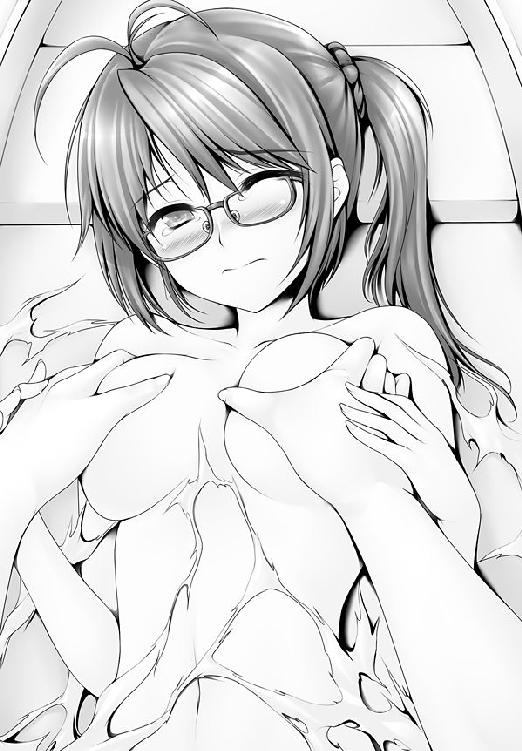
「ボ、ボートの中だからいいけど、ひ、人に見られたらどうするのよ」
「うわべだけを飾ってどうする」
「え、え、えええええええええええええええええええええええええええええ」
予想の遥か斜め上、成層圏を超えた大気圏外までにも突き抜ける一路の返答に、アリカは何と反論してよいのか分からなくなった。
「え、えっとお......」
アリカは一路のしてくれていることが厚意か悪意か、分からなくなる。
十分に混乱している証拠であった。
「おぉ、ずいぶんと血色がよくなっているぞ」
「ち、違う！」
「点穴は美容にもいいのだぞ」
「えっ......、い、いいわよっ、そんなもの！」
一瞬だけ垣間見えた、アリカの表情の変化を、一路は見逃さなかった。
（オンナというものは、美を気にするようだな）
（ならば点穴だ！）
きらり、と一路の瞳が輝いた。
（このオレのもてる点穴奥義のすべてを駆使して、アリカどのの美しさに協力しよう!!）
女の子のバストをもみもみと、揉みしだくこと。
彼にとって、それはどこまでも『正義』だった。
「な、な、なんでそんなに熱く燃えているのよ!?」
「アリカどの、おぬしの美を高めるためなら、オレはなんでもする」
「け、結構ですっ！」
「そう、血行だ」
「ああ～ん、誤変換～っ！」
一路の押しは強い。指圧も強いし、態度も強い。
「このツボが効くなら、こっちのツボも効くのではないか？」
「ひゃんっ」
大きく盛り上がった柔肉が、彼女の頭が動くたびにふるふると揺れた。
まあるく綺麗な形をして、ぷるぷると張っていた。
「は......、はあっ......」
ぐにぐにと柔らかなボールをもみほぐすように優しい動きをすると、アリカの口から甘ったるい声がもれた。
膨らみは自在に形を変えながら、一路の愛撫に反応し、山頂につぼみをつけていた花が力強く起き上がっていく。
一路のなすがまま、転がされるように翻弄されるアリカであった。
「あうっ、あっ、あああああ～～～～～～～～～っ」
──んでもって。
一路の言うところの『血行を良くする治療』が終わり、ボートは桟橋に戻ってきた。
「お、おお！ 覚えてらっしゃい!!」
一路から借りた上着で、肌を隠して。
隠せない顔は、真っ赤にして。
アリカは猛然と走り去っていった。
走りながら、叫ぶ。
「なに赤くなってるの!? あんなヤツに、あんなヤツに！」
思い出すほどに顔を火照らせていく。
たまらなくて、両頰を押さえる。
両手がじゅわっと焼けるように熱くなる。
この火照りは......、この火照りは......。
怒りとは、違う感情のものだ。
「あんなヤツに！ あんなヤツ！ 絶対に許さないんだからぁ～～～っ!!」
どう許さないつもりなのか。
（あんなにキレイだって言われたのは......、初めて............）
アリカは走った。ひたすらに駆け抜けていった。
一路は一路で満足感でいっぱいであった。
久美恋が出迎える。
「見てたわよ......」
「ん？」
久美恋が怒っていることに、一路は気づいた。
「なぜ、そのような顔をする？」
「自覚がないの!?」
「自覚？」
一路はきょとんとした。
「アリカさんに何をしたの!?」
「点穴だ」
「胸を張られても困るんですけど！」
「アリカどのが元気になってよかった」
「それだけかしら？」
ジロっと、久美恋は目を細めた。
「む、何を疑っている」
「褒めてたじゃない、彼女のことを」
「褒めた？」
「ほ、ほら......、きれいだとか、美しいとか」
「あ、乳のことか」
「人がせっかく遠回しに言ってるのに!!」
恥ずかしさに、久美恋はポッと頰を火照らせた。
「うむ、実に見事な乳であった」
「........................！」
ぴくぴくと、久美恋のこめかみに血管が浮かび上がる。
一路は、彼女がなぜ怒るのか、不思議でならなかった。
「どうして、そのような顔をする？」
「だからホントに自覚がナイワケッ!?」
「自覚？」
きょとんと、一路は首を傾げた。
「アリカさんに何をしたのよ」
「だから健康のための点穴を」
久美恋の目が、すっと細くなった。
「それだけかしら」
「疑っているのか？」
「褒めてたじゃない、彼女のコト」
「女の子を褒めるのはいいと、久美恋どのが言ったからだ」
「言ったわ、言ったわよ」
めらめらと、めらめらと。
色のない炎が立ち上っていく。
久美恋から。久美恋の全身から。
それは闘気と呼ばれる代物だった。
「優しい一路くんに、ご褒美をあげたいの」
一路は天にも舞い上がるような心地に襲われた。
実際、天に舞い上がっていた。
音速を超える久美恋の蹴りが、みぞおちにえぐりこまれ、一路はお空の高く高くにすっとんでしまったからだ。
人は、空を飛べた。
二 オレは責任を取る男
絶対風紀委員会【ぜったいふうきいいんかい】
生徒会が事実上の政府として存在する極東鳴神学園において、生徒会直属の機関である風紀委員会は、事実上、最大の警察権力として君臨している。
だが、彼らが執行する正義の前には、数々の困難が待ち構えていた。
まず１つは、同業者の存在である。
この学園には自主的に運営される民間警察組織みたいな団体が存在していた。
たとえば懲罰執行隊という連中がいる。彼らは『目には目を、罪には罰を』をモットーとして、犯罪者に対して、犯した罪と同等の罰を与える。人を骨折させた者は、その者の骨を折り、泥棒をした者は同等のものを買い戻すまでは強制労働刑に処する。一見、筋が通っているようにみえるが、殺人犯は速攻で死刑とまでくると、やっぱりやりすぎなのである。
次に、御統一路のような、問題児の存在。
そして、委員会の最大の敵は、生徒会長・日々樹ワタルである。
『面白ければ、それでいい』
その一言で、無責任な団体が毎日のように公認され、それらの部活動が引き起こすトラブルに風紀委員会の少女たちは頭を悩ますのであった。
いくら、女の子しかいない寮とはいえ、部屋の鍵を閉めないのは不用心だと思った。
「アリカお姉さま......、お部屋の鍵が......」
と、後輩の彼女はただならぬ様子に気づいた。
アリカが変なのだ。
そもそも５メートルも離れていない距離で呼びかけているのに、何の反応もないという時点で何かおかしい。
真っ赤な真っ赤な顔をして、腕組みをして、部屋の中を歩き回ったり。
「ああん、もう、なに、本気にしてるのよ！」
ジタバタと地団駄を踏んだり。
かと思えば、鏡に向かって話しかけたり。
ベッドに倒れ込むや、枕に顔を埋めて、足をばたばたとさせたり。
「違うっ!!」
いきなりそんなことを言い出して、ぶるんぶるん、と首を横に振るのだ。
なんだこれは。
見てはいけないものを見てしまった気がして、後輩の彼女は足音を立てぬよう、そろそろと後退を始めた。
（お姉さまの様子がおかしい......）
廊下に出たところで。
「どしたの？」
同級生と目が合った。
「ううん、なんでもない、なんでもないっ！」
両手をばたばたと振って、彼女はアリカの名誉を守ろうとした。
（あんな姿、お姉さまだって人に見られたくないに違いない）
ここは男子根絶委員会、女子寮。
汚れを知らぬ乙女の道を邁進する彼女にとって、筆頭の１人であるアリカが男への恋に目覚めようとしているなどとは、夢にも思わぬことなのであった。
かたや──、
島のまた別の片隅でも、怒りの野望に身を焦がす者がいた。
「御統一路......！ 御統一路め......！ 久美恋さんを......!!」
少年の声が、暗黒の部屋にこもる。
昼だというのに、彼のいる場所──教室は閉め切られていた。
窓には、彼が自分で持ち込んだ暗幕をかけ、まるで夜のようである。
ぽう、とランプに火を点す。
彼の素顔が露わになる。
野尻真一郎。優しい面立ちをした少年である。
彼は古びた書を手に、床に魔法円を描いていた。
筆の先を滴り落ちるインクのようなものは赤黒く見える。それは血なのだろうか。それは分からないが、不可思議な紋様の魔法円を描き終えると、彼はフルマラソンを走り終えたような疲労を見せながら、そばにあった椅子にへたりこんだ。
放心したように天井をあおぎ、机に置いておいたペットボトルを口にやる。
ごくごくと飲み干し、唇を拭き、ズレたメガネを上げた。
「見よう見まねでやってみた黒魔術だけれど......。この書に書いてあることが正しければ、これでランプの魔神が呼び出せるはず」
そうなのである。
彼、野尻真一郎は、覚えたての黒魔術を実践投入しようなどと、大それたことを考えていたのである。
「この前は催眠術で失敗したけれど......、黒魔術なら......、黒魔術なら............！」
野尻は再び書を手に取ると、呪文のページを開いた。
空いているほうの手をかざし、読み上げる。
「黄昏よりも昏きもの、血の流れより紅きもの......、あ、これは別の呪文だった」
やばいやばい。
野尻はページをめくりなおし、改めて呪文を唱え直した。
するとだ。
床に描いた赤い魔法円が、青白く輝き始めた。
キラキラと、キラキラと、燐光のような光の欠片を舞い上げながら、人型のシルエットが輝きの中から現れたのだ。
「お呼びでございましょうか、ご主人さま」
分かりやすすぎるぐらいにアラビアンな格好をした、魔神であった。
どれぐらい分かりやすいランプの魔神かというと、詳細なビジュアルを記述してしまうと、とあるアメリカの映画会社から、著作権侵害だと怒られてしまうぐらいに............。
とはいえ、なんで黒魔術でアラビアンな魔神が呼び出せるのかは大いに謎である。
が、それほど魔術に造詣の深くない野尻は、素直に感動していた。
「キミは魔神か？ 僕の言うことには何でも従うのか？」
「はい」
「この書によると、願い事は３つに限定されるとあるが」
「それは後世の者たちが、物語を面白くするために付け加えたことでございます。私は血の契約より、この地にあることを許された魔神。私のランプにあなたの血がそそがれているかぎり、私の忠誠は永遠」
「そうか、おお、そうか。では、さっそく命令を」
「言われずとも分かっております」
にこっ、とランプの魔神は微笑んだ。
「御統一路なる者を倒し、羽鳥久美恋を手に入れること」
「なんで分かった!?」
すっ、と魔神は野尻の前に膝を突き。
「私はあなたの血より生まれた魔神。ご主人さまのいわば分身のような存在。ご主人さまの想い、ご主人さまの願い、ご主人さまの心、すべて我がことのように理解しております」
「おお！ さすがは僕の魔神だ」
「すべてはご主人さまのおおせのままに」
魔神は仰々しくポーズをつけると、人差し指を自分の唇にやり。
「あと、くれぐれもナイショなんですけど、私の首飾りには触らないで下さいね」
「どうして？」
「ここが私の弱点なんです。ご主人さまだけに教える秘密です」
「そこだけが弱点なんだな」
「あとは無敵でございます」
うはははははははははははははははは、と野尻は勝利の高笑いをあげた。
「これで、僕は一路より強くなった！」
修行で汗を流したあとの風呂は、格別だ。
「くはぁああああ」
熱めの湯にゆったりと浸かると、気持ちよさが体のすみずみに染みわたる。一路ならずとも、つい声が出てしまうものだ。
一路は浴槽の端に頭を乗せると目を閉じ、全身の力を抜いた。
「ふぅ」
時折、天井から水滴が落ちて音をたてる。
浴室はもわもわと湯気に包まれる。
静寂。ただただ静寂。
鉛のような疲れが、熱い湯にゆっくりと溶け出していくようだった。
「温泉というのは、実にいいものだな」
一路たちのいる寮は、鍵子の叔父が店じまいをした旅館を借り受けたものだ。築数十年の古びた建物ゆえに入寮希望者はほとんどいないのが現状だったが、風呂だけは元旅館だけあって、実に広く、豪邸のようなたたずまいがあった。
コンコン、とノックの音がした。
「一路さま」
声がして、扉が開かれる。
立ちこめる湯気でシルエットしか見えないが、可憐だと分かった。
上から下まで、一糸まとわぬ姿をしていた。
「お背中をお流ししますわ」
「どうしたのだ？ こんなときに」
「用事がなければ、一路さまに逢いに来てはなりませんか？」
そんなことはない、と一路は答えた。
「たしかに、この浴室は１人で入るにはもったいないな」
「そうですわっ」
いそいそと可憐は近づいた。
（うふふ）
可憐は夫婦っぽいことがしたかったのだ。
（いくら鈍感な一路さまでも、親密さを増せば......）
可憐が湯船に近づく。
近づくほどに湯気が薄くなって、彼女の裸体がはっきりとしてくる。
可憐の素肌が一路の目にもはっきりと露わになる、直前だった。
ガラッ！
ノックもなく、扉が乱暴に開かれた。
「何をしてるんですかっ！」
久美恋だった。
「久美恋さん、お風呂に入るときは服を脱いで」
「脱いでたまりますか！」
「お、久美恋どのも入るか？」
「入るわけないでしょ～～～～～～～～～！」
そして、湯船は赤く染まるのだった。
「どうして久美恋さんは、わたくしと一路さまの仲を裂こうとするのでしょう？」
「へ？」
だしぬけの可憐の言葉に、猫丸は面くらった。
ここは可憐の部屋。
相談したいことがあると彼女に言われ、猫丸はやってきていたのだ。
「いつもいつもいいところになると、久美恋さんが出てきて、わたくしと一路さまの邪魔をするのです。本当になぜなのでしょう？」
「そりゃ、まあ、なあ............」
はっきりズバリと口にすることはためらわれ、猫丸は視線をそらした。
「久美恋さんは一路さまのことが嫌いなのでしょうか？」
「はぁ!?」
猫丸はすっとんきょうな声をあげた。
「............い、いま、なんつった？ 可憐ちゃん」
「久美恋さんは一路さまのことが嫌いなのでしょうか、と」
「そんなわけないだろう」
「そうでしょうか。嫌いではないとしたら、どうしてあのように暴力的なことを一路さまに出来てしまわれるのですか？」
「好きだから、じゃないか？」
「好き？ だから？？？」
きょとん、と可憐は目を点にした。
「好きなのに、蹴るんですか？」
猫丸の言うことがまったく理解できない、とでも言いたげに可憐は猫丸に尋ねた。
「可憐ちゃんだって、一路と闘ったじゃないか」
「武道の勝負と、怒りの発露を一緒にしないでくださいまし」
「久美恋ちゃんのは怒り......とはちょっと違う気がするんだよなあ」
「怒ってはいないのですか？」
「いや、怒ってはいるけど」
「久美恋さんは一路さまのことがお嫌いなのですね」
「いや、そうじゃなくてだな」
待てよ、と猫丸は思った。
（もしかして、可憐ちゃんの頭の中では......）
好き→抱きつく
嫌い→蹴る
（こんな単純な恋愛観しかないのか......!?）
箱入り娘のお嬢様として大切に大切に育てられてきた可憐には、好きだからスネるとか、好きだからツンツンするといった心の二次方程式は存在しないのだ。
猫丸は啞然となった。
「な、なんてお子ちゃまなんだ......」
「はい？」可憐は首を傾げた。
「あ、いや、なんでもない......。まあ、可憐ちゃんの言うことももっともだよな。他人の恋路を邪魔するのはよくない」
「困りましたわ............、久美恋さんを怒らせるつもりはないのに」
可憐はかわいらしい頰に手をあて、ため息をつく。
「いいんじゃねえか？ 恋なんてそういうもんだろ」
「仲良くやりたいのです」
「久美恋ちゃんはライバルじゃないか」
いいえ、と可憐は首を横に振った。
「わたくしは久美恋さんのことを、敵とは思っておりません。そのようなさもしい考えは〝感謝〟の心とはもっとも縁の遠いもの」
可憐は、感謝の気持ちを戦闘力に変換する流派、天々感謝拳の使い手だった。
「けど、可憐ちゃんは一路のこと、好きなんだろ？」
「愛とは果実のようなもの。もぎ取るのではなく、熟れて落ちてくるのをじっと待つだけ。わたくしは誠心を尽くすことで、一路さまに振り向いていただけるのを待つのみですわ」
「えらいっ！ さすがは可憐ちゃんだ!!」
「いいえ。そのように考えられるようになったのも、一路さまとの出会いがあればこそ」
「ほう」
「周りの者から神の子だと囃したてられ、そうなのだと勘違いをしていたわたくしを、一路さまが活人拳で目覚めさせてくれたのです」
「ただの乳揉みだったような......」
「いいえ、あれで、わたくしは一介の女であることに気づかされました」
「............そういう考え方もあるのか」
猫丸は、まるで空の彼方を見るような、遠い目をする。
「えっ、何かおっしゃいましたか？」
「いやいや、なんでもないなんでもない。他でもない可憐ちゃんに頼み事があったんだよ」
「わたくしに？ なんでしょう？」
「一路のことは、やっぱり可憐ちゃんに頼むのが一番と思ってな」
「わたくしに、ですか？」
にぱっ、と可憐は笑みを浮かべた。
人に期待されると、とてもうれしい可憐である。
「一路のことを一番想っているのは、可憐ちゃんだとオレっちは思ってるからな」
「なんでも頼んでください!!」
キラキラと瞳を輝かせて、可憐はうなずいた。
（そうこなくっちゃ）
猫丸は本題に移った。
「今の一路に足りねえのは、気の力だ」
「一路さまほどの方でも、気の力が足りないのでしょうか？」
「子供だからな」
「コドモ？」
「次のレベルに行くには、女の協力が必要なんだ」
「女の？」
「陰陽の交わりって、分かるか？」
「どういう意味なのですか？」
人の話は真摯に聞くもの。そう教えられてきた可憐は、ちょこんと正座の姿勢をとった。
ごにょごにょ、と猫丸は説明した。
「まあっ」
可憐は顔を真っ赤にした。
「い、一路さまと、わたくしが、え、えっちですか!?」
口にして、その言葉の恥ずかしさに、可憐はさらに顔を紅にした。
「驚くことはないだろ。可憐ちゃんだって、父ちゃんと母ちゃんがすることしたから、生まれたんだろ？」
「そ、それはそうですが......」
「普段から、ぺろーんと胸を見せているじゃないか」
「あれは修行です。えっちではありませんっ！」
「何が違うんだ............？」
猫の妖怪のくせに、一路たちよりよっぽど常人の感性を持つ猫丸は、理解に苦しむ。
「清らかな心と、そうでない心の違いです」
「突くという意味では、えっちこそ真の点穴術と言えなくもないな」
「つ、突く......!?」
乙女である。
猫丸の言葉に、具体的な行為を想像してしまった可憐は顔から火を噴きそうになってしまった。
「な、ななななな、何を言うんですか、猫丸さんっ!!」
「あ、いや、いじめるつもりはないんだ。イヤならやめるし」
「いえ、続けて下さいっ！」
どきどき。どきどき。可憐は頑張って息を整えた。
「一路さまのためになることを言いにきたのですよね、猫丸さんは」
「さすが、オレっちの見込んだ女だ」
「ですが、それほどにえっちなことは、さすがのわたくしでも......」
そんなことを言いながら、顔をぽっぽと火照らせるばかりだ。
「陰陽の気が合わさって魂になる。それが生命になる。その理屈は分かるだろ」
「はい、この世界には、科学とは違う理がたくさんあることを、可憐は理解しております」
「子供が出来るくらいなんだから、気ぐらい高まるさ」
「た、たしかに......」
「可憐ちゃんは若いからな。まだ早いといえば早いんだよな」
「は、はう......、その通りです......」
「だから無理にとは言わねえ。一路を成長させるのはオレっちの責任だ。他の娘をあたってみる」
「お待ち下さい！」
猫丸を引き留め、可憐は大きくうなずいた。
「わたくし、年はまだ満ちておりませんが、その役割、他の方には譲れませんわ!!」
「おお！」
「それで一路さまと結ばれるならば」
純条可憐。その名の通り、一途すぎる少女だった。
......当然のことながら。
猫丸の話は、噓であった。
「男と女で気を流しあうのが修行になる、ってところまではホントなんだがな......」
エッチが必要というのは、極端な噓だった。
（でも、ま、一路をマトモなヤツにするには、これぐらいでちょうどいいんだ）
猫丸には、猫丸なりの考えがあった。
（このままじゃ一路はどんどん変なヤツになっちまう）
（女の子の裸を見て、修行だ、とか言い出すのは、人間としておかしい）
そう、猫丸は思っていた。
（一路を一人前にするのが、オレっちの使命だからな）
それで出した名案が〝えっち〟である。
「することしちまって、オトナになれば、さすがの一路も朴念仁じゃいられなくなるだろ！」
むちゃくちゃな理屈であった。
修行を終え、一風呂を浴びたのなら、することは１つしかない。
「また修行だ！」
一路は、Ｔシャツ姿で寮の外に飛び出すと、空がよく見える場所で逆立ちを開始していた。
むろん、ただの逆立ちではない。
右手だけ。しかも人差し指だけの逆立ちだった。
「むむむ......」
回転をイメージして、全身に気を巡らせる。
その力を指先に集める。練るのは反発の気だ。
鋭く細く、人差し指の一点に集める。そうすることで自分と大地を、磁石のＮ極とＳ極のように反発させ、一種の空中浮遊のような状態を作り出すのだ。
先日、アリカから久美恋を助けるために池の上を走れたのも、この力があってこその技だった。
「一路さまっ」
可憐が現れた。
「どうした？ 何か話か？」
彼の声を聞いた途端、可憐の胸はどくんと高鳴った。
自分は今から、恥ずかしいことを言おうとしているのだ。
（一路さまのために！ 一路さまのために！）
ぎゅっと、胸元を握りしめて、呪文のようにつぶやく。
「い、一路さまっ」
「なんだ？」
「ど、どどど、動揺してはなりませんわ！」
言ってる可憐が、一番動揺していた。
「可憐どの、なにゆえそこまでに緊張しているのだ？」
「い、いっいっいっ、一路さまは何をしておられたのですか？」
「うむ、練気の修行を行っていたのだ。可憐どのこそ、何用だ？」
「き、気を高める修行のお手伝いがしたくて......」
声が完全に裏返っている。
それほどに、可憐はドキマギとしていたのだった。
「い、一路さまっ！」
可憐は、勇気を振り絞った。
「ら、ららら、らぶほてるという場所に行きませんか？」
「らぶほてる？」
一瞬だけ、一路は首を傾げ。
「ああ、猫丸が言っていた修行場のことか」
「修行場？」
自分が聞いていた話とは違うので、可憐はきょとんと首を傾げた。
「修行場ではありませんわ。らぶほてるというのは恋人たちが愛を確かめ合うための......」
ところで、一路は逆立ちを続けていた。
（むむ？）
逆立ちをしていた一路の視界からは、無警戒な可憐のスカートの中が見えていた。
生足というやつである。
が、彼は御統一路である。可憐の生足を見て鼻の下をのばしていたわけではない。
先ほどのお風呂ではハダカすら見てしまったのだ。
何度も目にした、可憐の素足であった。
なのに、なぜか。
足下からスネ、キュッとしまった膝から、太もものふくらみへ。
見たことのある素足が、スカートの中にあるというシチュエーションで見えただけで、なぜだか胸がドキドキとドキドキとしてしまったのだ。
そんな発見に、一路は驚いていた。
（次第に影で見えなくなるという構図のせいか？）
闘いにおいて、状況が心に及ぼす影響が強いこと。
そして心が武術に及ぼす影響が大きいことを一路は知っていた。
（これも、そうなのだろうか？）
裸のときに見た太ももよりも、スカートのあわいに消えていく太ももが気になる。
うまく言葉にすることが出来ないが、気になるのだ。
「............聞いていますか？ 一路さま」
「う、うむ。らぶほてるであろ。猫丸が勧めてくれた時から、一度行ってみたいと思っていた。うむ、向かおう」
「本当ですか！」
一路は逆立ちをやめ、すっくと立ち上がった。
（場所を変えれば、感じ方も変わる......、らぶほてるで何かつかめるかもしれぬな）
（これは、いい修行になるに違いない）
頭の中には修行の２文字しかない男であった。
いっぽう、久美恋は静とお出かけをしていた。
訪れたのは、見晴らしのいい、岬の先端である。
目の前には薄い青色の海が広がっている。南国の海だ。
「はぁ......」
久美恋はため息をついた。
「どうしたのですか、久美恋どの」
「えっと、ね......」
久美恋はもやもやした思いを静に吐き出した。
一路がどんどん変な方向に行っていること。
可憐もどんどん変な方向に進んでいること。
可憐は純粋な子。なのに、一路と出会ってしまったせいで、どんどんおかしな子になってしまっていること。
「とにかく一路くんが全部悪いと思うんだけど、静さんはどう思う？」
「お２人とも、仲良く、一路どのに揉まれるといいと私は思います」
「なんでそういう答えになるのっ!?」
「久美恋どのは、一路どのを好いておられるのではないですか？」
「そ、それは......」
久美恋はしどろもどろになった。
ごにょごにょと言葉を濁し、もにょもにょと人差し指をこね合わせた。
「久美恋どのは、一路どのがお嫌いなのですか？」
静も女である。
久美恋と可憐の間に流れる微妙な緊張に気づいていた。
静は久美恋とも可憐とも、うまくやりたいと思っている。
だから、両者の不穏をなんとかしようと思っていた。
すると、久美恋は両手を胸の前で合わせて。
「順番が大事なの！」
「ふむ」
恋というものは難しいな、と静は思った。
「やめさせないと、そのうち逮捕されちゃうよ」
「普通を押しつけて、普通の人間にすることこそ愚というものです。大望を成す者に対して、細かな間違いを責めて、一路どのを我々の小さな常識で縛るべきではありません」
「普通でいいと思うんだけれど......」
「何をおっしゃるのですか、久美恋どのともあろう方が！」
静は真剣な顔をして、久美恋に詰め寄った。
「そんな買いかぶり方はやめてっ」
「いいえ。一路どのは久美恋どのに一目を置かれています。それはすなわち、一路どのが久美恋どのに期待しているということ」
「き、期待ぃ............？」
想像がつかず、久美恋は首を傾げた。
静はちらりと、久美恋の顔から下に視線を落として。
「それはやはり、その胸を差し出すことでは？」
「ゴメンこうむりますっっっっっ!!」
顔を真っ赤にして、久美恋はぶるんぶるんと首を振った。
めっ、と人を叱るような顔を静はして。
「食わず嫌いはよくないと、ご両親に教えられませんでしたか？」
「違う違うっ！ その理屈、絶対に違うっ！」
「殴り合いより触り合い。素晴らしい考えではありませんか！」
「触り合いより話し合いですっ！」
「久美恋どのは口よりも足が先に出ているように思うのですが......」
「ううっ......、それはそーなんだけれど......」
「言葉だけでは分かり合えないこともありますよね」
「そうなのよ。一路くんってば、いくら言っても止まんないんだもん」
「そこで、触り合いですっ！」
キラキラと瞳を輝かせて、静は力説した。
「静さんはそれでいいのぉ？」
「それで、とは？」
静は首をかしげた。
「一路くんが他の子の身体を触って、平気なの？」
「むしろ、私は一路どのがどんな人間になるのか見てみたいのです。あまりの激しさに振り落とされるかもしれませんが、それも本望」
「そ、そうなんだ............」
相談する相手を間違えた、と久美恋は思った。
と、いきなり空が暗くなった。
雨でも降るのか。
２人は空を見上げた。
違った。
「あなたが久美恋さんですか？」
「でかっ！」久美恋も静もびっくりした。
野尻と魔神であった。
いっぽう、一路と可憐はラブホテルに来ていた。
（来てしまいました......）
可憐は、ドキドキしてドキドキして、内心の動揺を抑えるので精一杯である。
一路は一路で、はじめての場所に興味津々だった。
部屋の中にあるものは、派手めな色合いであること以外には、寝室にあるものと大きな違いはないのだが、不思議とワクワクしてきていた。
「なんだか分からないが、盛り上がってきたぞ」
「そうですわ。心と心が重なることが大事なのです」
２人はベッドの上に腰を落ち着けた。
可憐は部屋の照明を暗くする。
「一路さま......」
可憐は身にまとっていた服を脱ぎ捨てた。
恥ずかしいのか、両手で乳房は隠している。
「気を高めるのに、必要な儀式を......」
薄い照明を浴びて、白い肌が輝き出す。
一路の前に、彼女の美しいくびれが浮かび上がった。
一路は、さらにドキッとした。
（いつもとは何かが違う気がする！）
可憐は、そっと両手を乳房から外した。
ＯＫというサインである。
一路は彼女の胸に手を伸ばした。
手のひらに可憐の可愛らしいバストの感触が伝わってきた。
密やかな乳房であった。
手のひらを埋め尽くすことが出来ないほどの小さなバストである。
信じられないぐらい、柔らかい。
一路が手を動かすと、その動きに合わせて淡いふくらみが縦横無尽に歪んだ。強く握りしめると破裂してしまうのではないかというような柔軟性だ。
（こんなに柔らかいとは思わなかった......）
一路は驚いていた。
（同じものを触っているはずなのに）
（以前は明るい場所で触った）
彼女の奥義、シャイニング感謝との初対戦の時である。
（目に見えるものに意識を奪われて、乳房の柔らかさを感じ取りきれなかったということか？）
視覚、触覚、嗅覚、味覚、聴覚──合わせて五感。
五感が受け取った感覚は、脳で処理される。
（視界が悪くなっているぶんだけ、手のひらの感触が増大するのか？）
手触りだけで可憐を感じとれることに、一路は興奮していた。
（これは修行になる......！）
そんな男だった。
いっぽう、可憐のときめきは頂点に達しようとしていた。
（一路さまと、睦み合っている............）
可憐は胸のうちで、猫丸との会話を思い出していた。
『一路を男にしてやってくれ！』
猫丸に言われた言葉である。
夜、あのあとのことであった──。
『キスだな。まずはキスだ』
『きす？』
『口づけだよ、接吻』
『まあっ、まあまあまあまあ。そんな大それたこと、してしまってよいのでしょうか』
頰を両手に当てて、可憐は真っ赤になった。
『夫婦になるんだろ？』
『そ、そうですが......』
『一緒にお風呂に入るのに、ちょっと過激なことを付け足しただけだよ』
『そ、そんな風には考えられませんっ！』
『頼む。一路を男にしてやってくれ！』
猫丸は土下座した。
猫だから、単に座っただけと言えなくもないのだが、可憐に対して頭を下げた。
『そんな猫丸さん。お顔をお上げになって下さいまし』
『いや、可憐ちゃんに恥ずかしい思いをさせるんだ。これぐらいしないと気がすまねえ』
『いいえっ、恥ずかしくなんてありませんっ。口づけぐらい平気ですっ』
そう言いながらも、顔は真っ赤である。
『一路さまを男にするためなら、わたくし、なんだって出来ますわ！』
──その時の決意を、可憐は胸に呼び起こしていた。
（い、一路さまと口づけを......！）
考えただけでドキドキした。
心臓が喉から飛び出そうになる。
胸を触られることのほうが大胆な気もするのだが、それはされる側とする側の違いである。求められる側と求める側の違いである。
可憐は乙女である。
キスをするのが嫌なわけではない。
一路のためなら命すら捧げてもいいと思っている可憐だ。
（はしたない娘には思われたくない......）
乙女のたしなみとして、それは切実な思いであった。
けれど、可憐は勇気を振り絞った。
（一路さまを信じよう）
唇越しに想いは伝わるはずだ。
「一路さま............」
可憐は唇を差し出した。
（む............）
どきっ、と一路はなった。
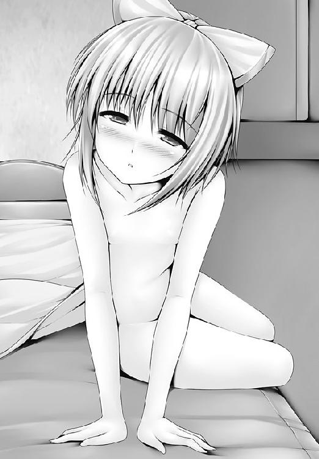
一路は、キスを知らない。
けれど、可憐がそっと唇を差し出す姿に、一路は甘酸っぱいときめきを覚えた。
口づけの持つ愛の意味を知らなくても、人間のもっている本能のようなものが一路の心臓を強く叩いていたのだ。
（なんだ、この気持ちは......？）
これまで感じたことのない感覚に、一路は驚いていた。
一路は目を輝かせた。
（これはいい修行になる！）
あくまで修行のことしか、頭にない一路であった。
が、心を読むことの出来ない可憐には、一路の目の輝きしか分からない。
（わたくしの気持ちが一路さまに伝わってる......。いい雰囲気ですわ）
そんな感じで、幸せな気持ちに包まれていた。
何も知らないということは、幸せなことである。
可憐は目を閉じた。
「わたくしの大切なものを、一路さまに差し上げたいのです......」
「............」
唇と唇を合わせること。
可憐がそれを求めていることぐらいは、鈍感な一路でも分かった。
一路も、目を閉じる。
（光に頼らず、他の五感を働かせて、正確に唇を合わせる......）
無視界戦闘の修行みたいな意味で。
お互いの思惑のすれ違いはともかく、唇と唇が触れあいそうになった、その時だ。
「一路！ 大変だ!!」
猫丸が飛び込んできた。
時間は30分ほど遡る。
「久美恋さんっ」
そう言って魔神の肩から降りた少年に、久美恋は見覚えがあった。
「野尻くん!?」
「嬉しいです。僕のことを覚えていてくれて」
「う、後ろにいる人は？」
久美恋は野尻の背後に立つ魔神を指さした。
「ああ、これは黒魔術です」
「黒魔術っっっっ!?」
「何を驚いているのですか、久美恋さん」
「驚くでしょ。だって、魔術でしょ、魔術！」
「催眠術に毛が生えたようなものですよ」
「ぜんぜん違うよぉ～～っ」
久美恋はきっぱり否定した。
「催眠術がマスターできるんだから、黒魔術をマスターできても当然ですよね」
「違う！ それは絶対に違うって！ ていうか、なんで黒魔術なんてマスターできるのよ。本は？ 師匠は!?」
「それぐらい僕は努力家なんですよ」
「努力とか、そういう問題で出来る次元を超えてるって!!」
久美恋の追及を、野尻は笑顔で受け流して
「つもる話は２人っきりの場所でしましょう」
そう言って、野尻は魔神に目配せを送った。
ぬうっと、魔神が手を伸ばし、久美恋の両腕をつかむ。
「離してっ」
魔神から逃れようと、久美恋は足技を使おうとした。
するとだ。
魔神の腕が突如として４つに増えたのだ。
久美恋は両手両足をつかまれて、身動きが出来なくなった。
「ひ、卑怯よ！」
「魔神、乱暴はするなよ」と、野尻。
「分かっております。ご主人さま」
「久美恋どのを返せっ！」
静が飛び込んだ。
左腰に差している日本刀の鍔元に手をかけ、抜く。
「ぬんっ！」
魔神がはじき返した。
静は大地に叩きつけられた。
「くっ......！」
傲然と、野尻は言いはなった。
「うわはははは！ 今度ばかりは一路たりとてかなうまい！」
「そんなことはない！」
静は立ち上がった。
「ならば伝えるがいい。僕は強くなったと」
「待て！」
「飛べ！ 魔神！」
「分かりました、ご主人さま」
「待てっ!!」
静は叫んだ。
届かない。どんなに叫んでも、届かない。
「おい、いま、空に久美恋ちゃんが！」
後ろから聞こえてきたのは、猫丸の声だった。
結果から言えば、猫丸がイタズラ半分で可憐をそそのかしていたせいで、久美恋の危機を一路に伝えることが出来たのだから、何が幸いするか分からない。
「久美恋どのが!?」
一路は、立ち上がった。
「可憐どの。申し訳ないが、先に行く」
猫丸すら置いて、一路は部屋の外に飛び出していく。
すぐに猫丸が後を追った。
ふたりは外へ出る。共に並んで走る。
猫丸はにやにやとした顔で。
「おまえ、何してたんだよ、可憐ちゃんと」
一路は可憐とキスをしそうになったことを教えた。
すると、猫丸はイタズラっぽい笑みを浮かべて。
「してたら、大変なことになってたな」
「大変なこと？」
「女の子とキスしたら、結婚しなくちゃいけないんだぞ」
「まことか!?」
──と、２人が走る前方にである。
アリカがいた。
「えっ、なんでここに!?」
突然の遭遇に、アリカは慌てふためいた。
（私ったら、武器も何も用意していない!!）
アリカは我が身の不覚を悔いた。
その間にも、一路は猛然と迫ってきていた。
（また脱がされちゃう!!）
アリカは身をすくめた。
だ、が。
さらりと、一路は素通りをした。
アリカの存在など気づいてもいないかのように、彼女の隣をあっさりと通り抜けていった。
言葉の１つもなかった。
「えっ......？ 触らないの？」
アリカはそんな言葉をつぶやき、次の瞬間、ハッとなった。
「べ、別にそういう意味じゃないんだからっ！」
かーっ、と顔が真っ赤になる。
両手で頰を押さえるが、そんなことぐらいでは紅潮は止まらなかった。
「な、何を考えてるのよ。私ったら、私ったら！」
久美恋と野尻を抱いた魔神は、空を飛び続けていた。
眼下に広がる学園都市の街並みと、エメラルド色の海。
飛行機やヘリとは違い、ダイレクトに大気を感じながらの眺めは、絶景の一言だった。
「どうですか、久美恋さん。遊覧飛行は」
「無理矢理じゃなければ気持ちよかったんだけれど......」
「悪気はないんです」
さらりと野尻は言った。
「どこが!?」
野尻は久美恋の手をぎゅっと握りしめて。
「２人きりになれる場所が欲しかったんです。僕の思いを知って欲しかったんです」
「えっ......」
「僕はずっと久美恋さんのことを見ていました」
熱いまなざしを浮かべると、野尻は自分が見てきた久美恋のエピソードを語り始めた。
公園で迷子になった子供を放っておけず、日が暮れるまで親を捜してあげていたこと。
他のクラスメイトが当番をさぼっても、ふてくされることなく、１人で教室の掃除をしたこと。
定番かもしれないが、捨て猫を拾い、新しい飼い主が見つかるまで世話を続けたこと。
「どうして、そんなことまで......」
ほとんどストーカーだった。
「僕は、優しい久美恋さんをますます好きになってしまったんです」
「野尻くん............」
「一生幸せにします！」
久美恋は胸を打たれ、じーん、と感動し............
......たりはしなかった。
下着姿にひんむかれていたからである。
魔神に。
「言ってることと、やってることが違う～～っ！」
久美恋は目を丸くするやら、悲鳴をあげるやらだ。
「おおっ」
野尻も驚いた。
「なんで驚くのよ!?」
「い、いえ、これは実に嬉しい......、いや、違うっ！」
ぶるんぶるんと野尻は首を振り。
「こら！ やめろ！ 魔神っ！」
「ご主人さま、これは異な事を。私めはご主人さまの願いを叶えているだけの」
「ばっ、馬鹿なことを言うなよ!! 僕がなんで久美恋さんの下着姿を......」
見たくないと言えば、噓だった。
「ち、違う！ やめろ！ 魔神！」
と、魔神の腕につかみかかろうとした時だ。
腰にひっかけていたランプが、つるりと外れて、空に放り出されてしまったのだ。
「あ............」
野尻はすぐに手を伸ばした。
しかし、届かなかった。
ランプが破壊されれば、魔神をコントロールできなくなる。
「僕のランプがああああああぁぁぁぁぁぁぁ」
ランプは、どんどんとどんどんと小さくなり。
ぱりーん、と地上で割れる音が聞こえた。
魔神は高度を落とし、着地した。
そこは公園だった。
「あぁ......」
野尻は、魔神から飛び降り、ランプのもとへ向かう。
ランプは無残にも、粉々にくだけていた。
手のひらを返すように、魔神はつぶやいた。
「さようなら、ご主人さま」
「こら、魔神。久美恋さんを離せっ」
野尻は魔神につかみかかった。
べしっ。
魔神は虫を追い払うように、野尻を張り倒した。
「うあっ」
「子供は家に帰る時間ですよ、元ご主人さま」
「久美恋さんに何をする！」
「子供が知ることはありません」
ふふふ、と魔神は肩越しに意味深な笑みを浮かべた。
山脈のように高い魔神の背中に阻まれて、何をしているかは見えない。
「きゃっ、下着だけはやめて！」
魔神は久美恋にエッチなことをしているようだった。
「すみません、私は元ご主人さまの血で生まれた魔神なので」
「ああっ、僕が久美恋さんを好きになってしまったばかりに！」
「反省しなくていいから、何とかして～～～～～～！」
「どうにもなりません～～～～～～～！」
野尻は謝るしかなかった。
今さら謝られても、どうにもならないのだが。
「久美恋どの！」
轟いたのは、一路の声であった。
一路と猫丸は、空を飛ぶ魔神の姿を見て追いかけてきたのだった。
「なんと！」
目にした光景に一路は驚いた。
野尻と正反対から駆けてきた一路は、魔神と正面から向かい合うカタチになった。
だから見たのだ。
魔神の腕の中で、すっぽんぽんになっていた久美恋の姿を。
「見ちゃダメっ!!」
「ぬ！」
反射的に、一路は目を閉じた。
ゴスッ......！
重い音がして、魔神の拳が一路の頰にめり込み、彼を吹っ飛ばした。
壁に激突し、ズルズルと一路は崩れ落ちた。
「ごめんなさい！ 大丈夫!?」
「む......、だ、大丈夫だ。問題ない」
額からは血がだらだらと流れてはいたが。
「ちっとも大丈夫じゃないよ！」
「大丈夫だ」
もう一度言って、一路は立ち上がる。
「瞑目するのだから、額が流血してようと問題ない」
言葉の通り、目は閉じたままだった。
「ムチャ言わないで！ 目を開いて！」
「久美恋どのは見られたくないのであろう？」
「そうだけど......、そんなこと言ってる場合じゃないでしょ！ バカっ！」
「ならば、見るわけにはいかぬ」
「意地なんて張らないで！」
「意地ではない」
静かに、一路は言い切った。
「大切なもののために命を張るのが、男というものだ」
「............！」
ごくり、と野尻は息を呑んだ。
（なんて覚悟だ......！）
（僕なんて、久美恋さんがピンチになっても、頭を抱えているだけで......）
一路は、魔神の懐に飛び込んだ。
魔神は２本の腕で久美恋を抱きかかえながら、残る２本の腕で一路に襲いかかる。
一打一打が突風のような風を巻き起こした。
（ものすごい拳圧だ！）
「ムチャしないで！ こいつ、人間じゃないのよ!?」
「この程度のムチャ、普段のムチャに比べればモノの数ではない」
バックステップを踏んで、一路は魔神の気を読もうとした。
（勝負に勝つことだけが、久美恋どのを守ることではない）
魔神の猛打が、一路のみぞおちに命中した。
ゴムマリのようにふっとんで、一路は壁に激突した。
「一路くん！」
まいった、と一路は思った。
（久美恋どのの素肌を見るわけにはいかない！）
目を閉じたまま、一路は立ち上がる。
そんな光景を、野尻は目の当たりにしていた。
（魔神には弱点がある）
野尻は、そのことを一路に教えるべきか、躊躇した。
（一路が魔神を倒す → 久美恋さんは一路に感謝する → ２人はラブラブ）
（それはイヤだ──っ!!）
だが、魔神の腕の中で苦しんでいる久美恋を見た。
（僕に出来ること......！）
ぎゅっと拳を握りしめ、野尻は叫んだ。
「一路さん！ ヤツの弱点は首飾りです!!」
「分かった！」
一路は、地面を蹴り、魔神のふところに飛び込んだ。
「馬鹿にしているのですか？」
魔神の拳が飛んだ。
「クッ......！」
空中で身をひねらせ、一路は魔神の猛拳をギリギリでかわした。
かわせたが、拳風にあおられる。
（これは......!?）
不意に一路は、ラブホテルでの暗闇を思い出した。
可憐とのやりとりを思い出した。
（気の流れだけじゃない......、肌、耳、鼻、すべてを使って、相手を感じとるのだ！）
一路は、深く息を吸い込んだ。
「心眼！」
意識を静かにし、五感を鋭くさせる。
久美恋の気配を感じる。
魔神の動きが分かる。
彼の首で揺れる首飾りの、微細な震動すらも感じ取れる。
「崩壊点！」
一路の指先が、首飾りの宝石を貫いた。
硬度10の宝石が砕け散る。
するとだ。魔神はまたたくまに砂となって崩れ落ち始めた。
しょせん、野尻の血で出来た魔神だった。
「うがあああああああああ！」
砂粒になっていく魔神の身体。
その手から、久美恋が落ちた。
「きゃあっ！」
一路は助けに飛び込んだ。
久美恋は一糸まとわぬ姿のままだ。
一路は目を閉じている。
「......っ！」
目を閉じたまま、気配だけで久美恋をキャッチし、抱きしめて、身をひねり、自分の身体をクッションにして地面に滑り込んだ。
ちゅっ。
そんな音がした。
とても柔らかい感触を、一路は唇に感じた。
目を開けると、息がかかるぐらいの距離で久美恋が目の前にいて......。
顔を真っ赤にさせていて......。
大きな瞳には一路を映していて......、まっすぐに一路の顔を見つめていて......、秋の紅葉のように頰を火照らせていたのだ............。
「い、いま、何を............」
ごくりと息をのんで、一路が訊ねた。
「！」
途端、久美恋の顔がぱあっと火を噴いたようになったのだ。
恥ずかしさを隠すように、唇を押さえる。
「な、ななっ!?」
一路も気づいてしまった。
「く、口づけをして............しまったのか？」
湯気が出そうなぐらい、久美恋の顔が赤くなる。
こくん、と頷いた。
「........................まことか！」
一路は狼狽した。
目を閉じ、腕を組み、しばらくと思案して。
「責任を取らねばなるまい」
「せきにん？」
目を点にして、久美恋は首を傾げた。
一路は両手で、久美恋の手を包み込むようにすると、一言。
「結婚しよう！」
「....................................は？」
一瞬、久美恋は何を言われたのか、分からなかった。
「口づけをした以上、男としての責任を取らねばならない」
「う、噓でしょ？」
「本気だ」
「ふえええええっ!?」
久美恋は焦った。
嬉しくないわけではないが、とにかく焦った。
「ちょ、ちょっとちょっと待ってよ、一路くん！ 急すぎ！ 急すぎるよぉ」
「そんなことはあるまい」
押しに強い一路に、久美恋はドキマギするばかりだ。
だが、久美恋とて、伊達に一路に振り回されているわけではない。
一路のプロポーズを、真に受けるわけにはいかなかった。
「結婚、って何のことだか分かっているの？」
「夫婦になることであろう？」
「ちゃんと分かってるんだ!?」
久美恋は失礼な驚き方をし、さらにドキドキした。
（キスで、結婚なんて......、極端すぎるけど......、けど............！）
（何にでも極端に走るところが、一路くんらしい......かも）
そんな風に、考えてしまう久美恋である。
（でも、高校生で結婚の約束なんて早すぎる！ 早すぎるよ！）
ぶるぶる、と首を振るものの、久美恋は胸の高鳴りを抑えることは出来なかった。
どんなに隠そうとしても、幸せが顔中にこぼれてしまう。
断るという選択肢は、ないも同然だった。
（ど、どどど、どうしよう............！）
ふと、聞いた。
「............か、活人拳は？」
「続ける」
「えっ..................」
途端、久美恋は固まった。
と、彼女の隣を、猫丸が通り抜けて聞いた。
「久美恋ちゃんに対しては男の責任を取るが、女体探究は続けるということか？」
「うむ、そういうことだ」
「そんなのはダメ～～～～～～っ！」
「のわっ！ どうしたのだ、久美恋どの。いきなり怒り出して。さっきまではよさげな雰囲気だったではないか」
「さっきまではさっきまでのことです！」
久美恋は怒った。怒るしかなかった。
しかし、一路は食い下がった。
「責任を取らせてくれ！」
「いやです！」
「そう言わず、結婚しよう！」
「絶対の絶対の絶対に、いや～～～～～～～～～～～～～～～～っ！」
そんな喜劇も、視点を変えれば悲劇になる。
「そ、そんな......」
おろおろと、可憐はよろめいた。
一路のあとを追いかけてきた可憐だった。
可憐は可憐で、久美恋のことが心配でならなかった。
それが、こんな結末になろうとは。
「久美恋さんが無事なのはよかったですけれど......、よかったですけれど............」
可憐は呆然と立ち尽くすしかなかった。
顔はもう、灰のように真っ白に燃え尽きて、掛ける言葉もないほどである。
（オレっちが余計なコトを言ったせいかな......？）
猫丸は、ちくっと罪の意識を覚えた。
「に、しても」
ちらりと、一路に目を向ける。逃げる久美恋を追いかけまわす一路を。
「なんで、こうなるかな」
はぁ、とヒゲをゆらす猫丸だった。
かたや──。
島のまた別の片隅でも、野望に身を焦がす者がいた。
少年の声が、暗黒の部屋にこもる。
昼だというのに、彼のいる場所──教室は閉め切られていた。
窓には、彼が自分で持ち込んだ暗幕をかけ、まるで夜のようである。
ぽう、とランプに火を点すと、彼の素顔が露わになる。
野尻真一郎。手にしているのは、また別の魔術書だった。
「魔神がダメなら、次は邪神を呼び出してやる!!」
性懲りもなく、あやしげなオカルトに手を出す彼だった............。
いっぽう。
そんな騒ぎとはまったく無縁の場所があった──。
「退屈だ！」
そう言って、鳴神学園生徒会長、日々樹ワタルは高級椅子から立ち上がり、もう一度。
「退屈だ！ 死にたい!!」
「死んでどうするんですかっ!!」
叫んだのは鳴神学園生徒会、会計主幹の秋葉紅葉である。
野心満々な会長とは正反対に、繊細な印象を与える少女である。
吊り目にタレ目。長髪にショート。強気に弱気。
鏡に映したように対照的な２人である。
会長は、ぎゅっと握りしめた両手をワナワナと震わせて。
「面白いことがない！ 面白いことがないと元気がなくなって死んでしまうのだ!! 私は!!!」
「元気いっぱいじゃないですか............」
ため息をつく秋葉。すると会長はぽつりと。
「月でも落ちてくればいいのに」
「人類が滅んじゃいますよ!!」
「そうか、やはりそうか。ならば、おまえで私は我慢しよう」
「へ？」
と、首を傾げる秋葉のもとへ会長は近づいた。背中まで伸びた長い髪の一端をつかむと、秋葉の首筋にあてた。
「こちょこちょこちょ」
「ひゃん。や、やめてくださぁいっ」
くすぐったさに、秋葉は身をよじらせる。
「やめない。やめたら、私は退屈で死んでしまう」
「そ、そんなぁ～～～～」
言うがまま、されるがままの秋葉であった。
「会長」
短く、一言。
絶対風紀委員会委員長、綾鷹神宮弥が現れた。
規律が凜々しさの服を着ているような美人である。
夏の沖縄で、シャツの一番上のボタンまでキッチリとはめている。これはなかなか珍しい。
「おう、いいところに来た。神宮弥、おまえも仲間に入るか？」
「入りません」
「つれないな。まあいい。事件か？ 事件だろう？ 事件と言え」
「ただの日次報告です」
「なんだ、地球が無駄に一回転しただけか」
「それが私の仕事ですから」
「つまらん」
会長は肩をすくめると、神宮弥に背をむけた。
と、何かを思い出したのか、くるりと振り向き。
「そういえばおまえ、姫百合マモリをスカウトしたそうではないか」
「耳聡いですね」
一騒動の予感に、会長はにまにまと笑みを浮かべ。
「何を企んでいる？ あれほどの手合いをスカウトしておいて、何も企んではいないでは済まないだろう」
「御統一路を逮捕します」
「ほう」
会長の目が輝いた。
「で、一路を逮捕して、どうするつもりなのだ？」
「もちろん、監獄にブチ込みますわ」
造作もないことだと言わんばかりに、委員長は言いはなった。
三 あなたは心が病気です
獣人族【じゅうじんぞく】
この世界では、猿から進化した人族（正しくは猿人族）の他に、犬や猫から進化した人類が存在する。それらを総称して獣人一〇八族と呼ぶ。いくつかの獣人族はすでに絶滅している。
呼称としては、猿から進化した人類以外は、犬族、猫族、虎族、熊族というべきものであるが、数で言うと人族が圧倒的に多いため、それ以外の人類をまとめて獣人族と呼ぶようになっている。
しかし、個々の種族の能力は多種多様であり、人族を遥かに超えた身体能力を持つ種族は多い。
本編において記述があるように、この世界では魔法や仙術は、それを使うための身体器官を必要としているため、魔法を使える種族を魔族と呼んだり、仙術を使える種族を仙族と呼んだりもする。
生物学的には混血は可能。
男子根絶委員会、女子寮。
──の一角にある、とある施設をアリカは訪れていた。
『超科学・星乃研究所』
看板を見るたびに、思う。
（超って１文字がつくだけで、一気にいかがわしい感じになるのはなぜかしら......）
アリカは、建物の中に入る。
途端に、電気街のジャンク屋のような空間が目の前に広がった。
使える電力は、コンピュータなどに全部つぎ込んでいるのか、余計な照明は一つもない。薄暗い空間に光るＬＥＤや液晶の光を頼りに、アリカは奥の部屋に向かった。
（いちおう、ここ、乙女の園なはずなんだけれど......）
乙女の中の乙女を目指す少女たち──男子根絶委員会。
なのに、この女らしさから懸け離れた感じはなんなのだろうか。
ドアも開けっ放しである。
「歪美、いる？」
部屋の中には、白衣を着た少女がいた。
星乃歪美。科学者である。
歪美はパソコンを前にして、難しそうな数式と格闘していた。
声だけでアリカだと気づいたのだろう。歪美は背中を向けたまま告げた。
「約束のものなら出来ているわ」
アリカは机の上を見た。
拳銃が置かれている。アリカは手に取った。
「これが、実弾を使わない銃......、これで、あの男を......」
「テーザー銃っていうのよ」
失神レベルの電気ショックを与えることで、相手の身動きを封じるという武器だ。
「ここから電気が出るのね............」
「パワーレベルをあげれば、ちゃんと人も殺せるわ」
「噓でしょっ!?」
「フルパワーで撃てば、ゾウも殺せるわよ」
「そこまでの機能は求めていないから!!」
「あら？ そうなの？」
さも意外そうに、歪美は笑った。
「生みの母としては、フルパワーモードの使用を所望するんだけれど」
「もー、私たちは暴力団じゃないの！」
「純粋でいようとするなら、闘争は不可欠よ」
くるりと椅子を回転させ、歪美はフフッと笑んだ。
口調は冗談めいているが、目の奥の輝きが、なにかしら深い意味を込めているようにも見える。
「はいはい」
それなりに長い付き合いなのだろう、アリカは歪美の言葉を受け流した。
「歪美は、いま何の研究をしているの？」
「この星から、男だけを絶滅させるクスリの開発中」
「うええっ!?」
アリカは仰天した。
「そ、そんなもの、コンピュータで出来ちゃうの!?」
「シミュレーションはね。性決定遺伝子をトリガーにして発動する致死ウィルスを作ればいいだけだから、理論的には完成してるんだけれど」
「もう完成してるんだっ!?」
「でも、男を滅ぼすと、女の子も絶滅しちゃうのよね、困ったわ......」
はぁ、と歪美はため息をついて。
「遺伝子的に男は女の変異種だから、女性から男を作り出せば子供を作ることは可能だし、そこまでは出来るんだけれど、その子は果たして女の子と言えるのかしら......。ねえ、アリカはどう思う？」
「どう思うと言われても............」
あはは、と愛想笑いを浮かべながら、アリカは思うのだった。
私の周囲には、どうして変な人しかいないんだろう、と。
かたや、ここは滝壺である。
一路たちの学生寮の裏手。人目に付かぬ場所であることから、もっぱら活人流の修行場として活用されている場所である。
滝の上で、静が岩を動かそうとしていた。
自分の身体よりも大きい、巨岩である。
「本当に落としてもいいのですか？ 可憐どの」
「かまいません」
滝壺の底では、可憐が水に打たれていた。
すでに封印のリストバンドは外されている。
ゆっくりと両手を合わせ、感謝の気持ちを高めていく。
「右手を開いて母心......、両手を開いて掌......」
誰よりも先に想い浮かべたのは、一路のことだった。
（一路さまに出会えたことで、わたくしは愛を知った............）
初めての出会いから、拳を交えた時のこと、そして現在までを思い返す。
（力に酔い、神に等しい存在などと驕り高ぶっていたわたくしを、ただの人間に戻してくれた）
身にまとっていた虚飾をすべてはぎ取られ、生まれたままの姿にされたことで、可憐は、自分も１人の人間に過ぎないことを知った。
（わたくしは、感謝の力で核爆発にも等しい力をふるうことができるだけの、ただの人間）
そんな謙虚な気持ちになることが出来たのも、一路のおかげだと可憐は思っていた。
（一路さまは、想像を超えたお方）
一路は、文字通り身体を張って、可憐を説得した。
活人拳などと言い張り、うら若き可憐を裸にして、淡い乳房を縦横無尽に揉みしだいたあげくに、可憐と仲直りを図ろうとした。
むちゃくちゃである。
だが、可憐は一路の行為をこんな風に受け止めていた。
（これまで、そんな風に全力で、わたくしに接してくれた人はいなかった！）
純条家という高名な家柄に生まれ、箱入り娘として育てられた可憐は良くも悪くも常識というものがなかった。
それゆえに可憐は、野外で裸にされたあげくに胸を揉んできた一路の行為を『自分に対する愛情』だと解釈してしまったのだ。
素直ほど、恐ろしいものはない............。
さておき、一路のことを想い浮かべている可憐の胸は幸せでいっぱいになっていた。
そこへ、さらに幸せを追加していく。
鳴神島で知り合った友達、猫丸、鍵子、静、そして久美恋。
（久美恋さん............）
ふと、先日の出来事が脳裏をよぎった。
胸の奥が、ちくりと痛んだ。
「岩、落としました！」
静の声が聞こえた。
ハッ、と可憐は我に返った。
「シャイニング感謝あああああああ！」
次の瞬間、岩は木っ端微塵に吹き飛んだ。
「充実していますわ」
あいかわらずの破壊力に、可憐は満足を覚えた。
「大丈夫ですか、可憐どの」
岩を蹴るようにして、静が降りてきた。
「ええ、きわめて」
「頰から血が出ていますよ」
「え？」
可憐は頰に手を当てた。
赤い。たしかに出血をしていた。そのことに可憐は驚いた。
（あの程度の巨岩を破壊しきれないなんて......）
そんなこと、生まれて初めてだった。
修行を終え、寮に戻っても、可憐は動揺を止めることが出来ずにいた。
（あの程度の巨岩を破壊しきれないなんて......）
可憐にとって、感謝とは破壊であった。
一般人の感覚からは、わずかにズレていたが、生まれた瞬間から両手を合わせ、感謝の力であらゆるモノを粉砕してきた可憐にしてみれば、昨日まで乗れていた自転車にいきなり乗れなくなったような、そんな心許ない気持ちにさせられる出来事だった。
もう一度、状況を思い出してみる。
（久美恋さんのことを思い浮かべた瞬間に、心がちくっと......）
そんな時だ。
携帯電話が鳴った。
「はい、可憐です」
電話の向こうから聞こえた声に、可憐は驚愕した。
「お姉さまっ!?」
すると、電話の向こうから、こんな問いが飛んできた。
『夫を連れて来れないのはなぜだ？』
可憐は、反射的に電話を切ってしまった。
「はわわわわわ！」
電話を切ったことに、しまった、と思った。
（お姉さまに、怒られてしまいます!!）
謝ったほうがいいのは分かっている。
けれど、電話をしたらしたで、余計に怒られてしまいそうな予感がして、可憐は携帯電話の発信ボタンを押すことが出来なかった。
（一路さまに、まだ結婚のお許しをいただいていないことが知られてしまったら......）
（お姉さまに、お仕置きされてしまいます！）
可憐は、冷や汗がだらだらと流れるのを止めることが出来なかった。
（いえ、わたくしだけで済めばまだしも......、一路さままで......）
（ど、どどどどど、どうしましょう！）
可憐にとって、姉とは尊敬と畏怖の入り交じった存在だった。
可憐は焦った。
超、焦った。
（今からでも遅くありませんわ。一路さまと夫婦になることができれば......！）
ふとした思いつきに、可憐は一瞬の光明を見いだした。
（でも......）
目を閉じた可憐のまぶたに、久美恋の姿が浮かんだ。
（..............................）
もやもやとした思いが、可憐のなかで渦巻いた。
（一路さまにご相談しよう）
（一路さまなら、きっと味方になってくれるはずですわ）
一路のことを心から信頼している可憐は、一路に相談すれば、きっといいアイデアを出してもらえるに違いないと思った。
「一路さま」
昼下がりの、滝壺の前である。
一路と猫丸が修行をしているところに、可憐が姿を見せていた。
「どうしたのだ？ 可憐どの」
「大切なお話がありまして......」
もじもじと可憐は恥じらいを見せた。
「あの、あのですね、一路さま。可憐はお願いがあるのです」
と、そこへ。
「見つけた」
一路たちにしてみれば見慣れぬ少女が現れた。
「......看護師？」
純白のナース服に身を包んだ少女、姫百合マモリである。
「アンタが一路かい？」
「誰だ、おぬしは」
「ただの看護師さ」
「そうは思えぬな」
一路はマモリから、ただならぬ気配を感じていた。それは殺気に近いものだ。
「アンタ、点穴使いっていうじゃないか」
「そうだ」
「ロクなヤツじゃなさそうだね」
「なんだと？」
マモリは一路が点穴術師というだけで、敵意を抱いた。
あははは、と猫丸が複雑な表情をした。
「どんな情報が飛び交っているのやら......」
「どうせアンタも、点穴の名を借りて、馬鹿なことをしてるだけなんだろ」
「図星だ」
猫丸はうなずき、一路は否定した。
「誤解があるようだな」
「誤解？ 理解だろ」と、マモリ。
「活人拳は気持ちがいいものだ！」
一路は言い切った。
「ふざけるな」
（まあ、そう思うよな）と、猫丸。
「失礼な人ですね」
可憐が前に出た。
「わたくしは純条可憐、あなたも名を名乗りなさいっ」
「姫百合マモリ。そこの男と勝負がしたくてね」
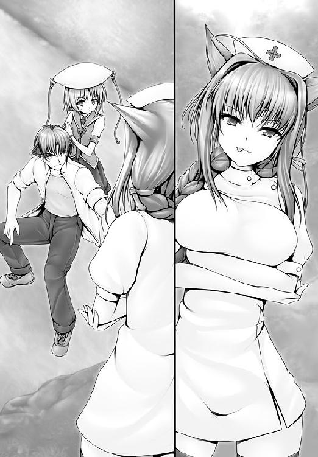
「勝負とあらば、応じよう」
一路は可憐の前に出た。
「潔いのね。もっと汚いヤツかと思っていた」
つぶやき、マモリは拳を繰り出してきた。
「看護拳！」
彼女の手から、包帯のようなものが飛び出し。
壁に命中、爆発した。
「爆発ぅ!?」
猫丸は驚いた。
「なにを驚いているんだい？」
「いま、包帯が当たったら爆発したぞ！」
「気のせいだよ、包帯が爆発するわけないだろ」
「確かに爆発したよな？ 一路」
猫丸は一路に同意を求めた。
「いや、あれは気のカタチが包帯のように見えただけだ」
「よく分かったね」
「なんと面妖な拳だ」
「アンタに言われたくないね！」
ハッと笑って、マモリは地面を蹴った。
「看護拳ッ！」
拳を振るうごとに、包帯のような気の塊が飛んで、飛んで、飛んだ。
それは爆弾と同じだった。
「近づかなければ自慢の点穴術を使えないだろ！」
「くっ」
一路はマモリの剛拳に驚嘆していた。
直撃を防ぎながら、反撃の機会をうかがう。
だが、互いの必殺技の射程距離の違いは決定的ともいえる差であった。
「その程度かい、点穴術ってヤツは！」
（あの攻撃さえ塞げば、一路さまは相手のふところに飛び込めるはず！）
と、可憐は思った。
「遠距離攻撃ならわたくしが！」
可憐は一路を守ろうと、かばうように前方に走り出た。
「アンタは関係ないでしょ！」
「夫婦といえば一心同体です！」
可憐は両手を合わせた。
「右手を開いて母心、両手を開いて掌......！」
胸のうちに喜びを湧き上がらせる。
息が出来ることにすら感謝できるようになった時、感謝の気持ちが破壊力に変換される。
一路のこと。
みんなのこと。
久美恋のこと。
（えっ......）
久美恋のことを胸によぎらせた途端、もやっとした思いが、可憐の中に沸き上がった。
けれど、叫んだ。
「シャイニング感謝ッ！」
発動しなかった。
「えっ......!?」
可憐は我が目を疑った。
「どうして......？」
「なに？ こけおどし？」
マモリは可憐めがけて看護拳を放った。
「危ないッ！」
一路は可憐をかばいに入った。
看護拳の直撃を受ける。一路は可憐を腕に抱いたまま、バタリと崩れ落ちた。
「がァッ......！」
「決まったね」
マモリはゆっくりと２人に近づいていった。
一路は完全に意識を失っている。可憐も立ち上がれずにいた。
「彼女のほうは無事みたいね」
と、マモリは一路を担ぎ上げた。
「行かせません。一路さまを......連れていかないで......！」
「悪いね。怪我人を連れて行くのは、看護師の仕事だから」
そう言って、マモリは一路を連れ去った。
「一路さま......！」
立ち上がろうとして、可憐は力を失った。
可憐の胸に後悔の思いがわき起こった。
感謝拳を放てなかったことだけではない。
（一路さまを守れなかった......！）
後悔の気持ちだけが、可憐の胸のうちに、深く降り積もっていった。
「ッ！」
がばっ、と毛布を撥ね飛ばすようにして、一路は目覚めた。
気絶したという記憶がない。
どうして自分が眠っていたのかも分からず、一路は顔をきょとんとさせた。
「起きたかい？」
すぐそばに、マモリがいた。
「ここは......」
自分が使っていたベッドこそ清潔だが、窓は小さく、４面ある壁の１つには、鉄格子がはめられている。
これは、まるで......。
「監獄病棟だよ」
と、現れたのは院長だった。
恰幅のよい、ふくよかな女性だ。
「あんたかい、マモリに〝看護〟されたのは」
「看護？」
一路は首を傾げて。
「格闘の間違いだろう」
「看護だよ」
院長はマモリを評して。
「この子は治療が苦手でねえ、患者には暴力しか振るえないのさ」
「どんな看護師だ!?」
思わず、一路は驚きの声をあげた。
らしくない行動に、一路自身、びっくりする。
冷や汗が背中を流れ落ちる。身体の奥底で本能が告げていた。
この女はヤバイ......、と。
だが、そのいっぽうで、マモリはというと実にニコニコとした笑みを浮かべて。
「アンタさ、馬鹿さえ治せば、いいヤツだよ」
「失敬だな」
「まあまあ、怒らない怒らない」
マモリは両手をひらひらとさせる。
「あたしさ、アンタのこと、気にいったんだよね」
「は？」
またまた一路は首を傾げた。
初めて出会った時から、彼女のやることなすことが理解できなかったからだ。
一路の心は狭くはない。むしろ常人よりも広い。
無駄に広い。
活人拳などという代物を思いつくだけあって、他人の極論にも理解を示すことが出来る。
にも拘わらず、マモリの言うことなすことには、ノリを合わせていくことが出来ない。
調子が狂わされてしまうのだ。
うまく言葉に出来ないのは、背中のムズ痒さを理屈で説明できないのと似ていた。
相性が悪いとしか言いようのない相手が、人には存在するのだ。
「アンタ、自分の身を挺して、女の子、守ろうとしたよね？ なんでさ」
「女を守るのは当然のことだろう」
またノリが合わない。
何を当たり前なことを聞いてくるのかと理解できず、一路はいぶかしげな目つきで答えた。
「意外......」
マモリは驚いた顔をした。
「アンタみたいな人、女の子を喰い物にするだけだと思ってた」
本当に、マモリは一路を見直していたのだ。
「ホントはもっとボコボコにするつもりだったけれど、アンタ、悪い奴じゃないと思ったから、病院送りで片付けてあげたんだよ。感謝して」
「誰が感謝するか！」
一路は包帯でぐるぐる巻きにされた両腕を振り上げようとして......。
しっかりと手錠がかけられていることに気づいた。
「な、なんだこれは!?」
「セクハラ防止用の手錠......なんてね。両手を自由にしたら、脱走しそうだから」
「おぬしはオレを目の敵にしてるのか!?」
「あなたに用があるのは、私よ」
理知的な声がして、新たな女性が部屋に入ってきた。
一路には見覚えのない女性である。
絶対風紀委員会最高委員長、綾鷹神宮弥であった。
「あなたを逮捕しに来たのよ。マモリ、ありがとう」
すると、マモリは手をひらひらと振り。
「一路は悪い奴じゃなさそうだよ」
「患者に優しすぎるのが、あなたの弱点ね」
そう言って、神宮弥は一路に視線を向けた。
「あなたみたいな流派を放置するわけにはいかないわ」
「誤解だ、活人拳は人を活かす拳。暴力ではない」
「そのセクハラは立派な暴力です！」
「その心配は無用だ」
一路は、きっぱりと言い切り。
「オレは、触ってもいい子とそうでない子が分かる」
「どうやって？」
「目を見れば分かるのだ」
「どういう意味？」
冷静な声で、神宮弥は聞いた。
一路は自信満々に答えた。
「相手の目を見れば、触ってもよさげな子かどうか分かるのだ」
「完全に犯罪者の論法ね」
と、神宮弥が呆れかえった、その時だ。
ポケットの携帯が鳴った。
緊急連絡らしい。
電話で報告を受け取った途端、神宮弥の顔色は急変した。
「なんですって!?」
神宮弥は急用が出来たと言って、病室を出て行った。
マモリは実にしみじみとした目をして言った。
「よかったね、一路」
「何がだ」
「神宮弥ってば容赦がないからさ。あの電話がなかったら、アンタを極悪人用の独房に叩き込んでるところだったよ」
「......まるで自分には容赦があるような物言いだな」
「あはは、あたしが悪かったって言ってるじゃないか」
どんどん、とマモリは遠慮なく一路の背中を叩いた。
痛みに、一路はうめいた。
「き、傷に響く！」
「アンタとは気が合いそうだね」
「それは大いなる勘違いだ！」
一路はうめいた。
（この者とは呼吸が合わない！）
これまでさんざん他人を振り回してきた一路にしてみれば、未知との遭遇としか言いようのないマモリという存在に、ことごとく調子が狂わされていた。
「............おぬしは生きる道を間違えているのではないか？」
「アンタに言われたかないよ！」
どんどん。マモリは一路の背中を叩いた。
「い、痛たたたたたたたたたたた」
「......なぜ、おぬしは看護師を目指したのだ？」
マモリは一瞬だけ表情を暗くした。しかし、すぐに笑顔になり。
「子供の頃、村が焼かれてね............」
なにを思い出したのか、マモリは窓の外を見つめた。
「そのとき、看護師さんに命を助けてもらったんだ。それで、あたしも看護師になろうと思ったんだよ......。ふふ、ありがちな話でしょ」
「いや、充分な動機だ。理解できる」
「アンタは......どうして変態流を？」
「変態流ではない！ 活人流だ!!」
「あはは、そうかい」
マモリは清々しいまでにケラケラと笑い。
「点穴をバカにして、悪かったね」
「む」
「あたしの村を滅ぼしたのが、点穴術の使い手だったのさ」
「なに？」
最後の言葉が、一路は気になった。
その時だ。
突如として、建物中に、けたたましいまでのサイレンが鳴り響いた。
〝警報！ 警報！ たった今、脱獄者が発生！ 脱獄者が発生しました！〟
〝脱獄したのは、１６４４号と特Ａ号・禍神凶〟
「禍神!?」
その名を聞いた途端、マモリの表情は驚くまでに変わった。
「行ってくる」
マモリは歩き出し、立ち止まり、くるりと振り向いた。
「禍神凶、あたしの村を滅ぼした女さ」
それだけを言って、マモリは出て行った。
鳴神島には３つの監獄が存在していた。
『煉獄』『地獄』『極楽』
風紀委員会が所有する３つの刑務所である。
その一つ、地下要塞・煉獄塔。
──脱獄事件の発生から、１時間ほど前のことである。
その最下層にある監房に、ある囚人が放り込まれていた。
囚人番号１６４４。
少女である。
刑務所の中でも人殺しを止めなかったことから、煉獄塔の中でも最も極悪人が放り込まれる最下層監房に入れられることになったのだ。
だが、１６４４は嬉しそうだ。
その監房には、ある女が待っていたからだ。
監房の中は真っ暗で、静かだ。
１人の女があぐらをかいて座る以外は、みな、壁際で眠っていたからだ。
その１人の女を見て、１６４４は瞳を輝かせた。
「禍神さん！」
あぐらをかいていた女は、静かに微笑む。
「34人殺し......、たった、それだけ？」
「バカにしないでよ。ほんとはもっと殺したかったけど、止められたんだ」
「それで、おとなしくしたの？ お前は」
「他の監獄に移送されたら、禍神さんに壊してもらえなくなっちゃうからね」
１６４４、いやＳは笑う。
「ねえ、もっとすごいツボを打ってくれるんでしょ？ あたしの身体がぐちゃぐちゃになるツボを」
「３年......、ああ、時間だけはたっぷりあったからね」
と、壁際に視線をやる。
Ｓがはじめ、囚人たちが寝転がっているだけかと思っていたもの。
それらは、すべて死体だった。
「コイツらは禍神さんが？」
「おまえも貧弱なら、コイツらみたいになるよ」
「いいね」
ぺろりとＳは舌を出した。
「あたし、めちゃくちゃにするのも、めちゃくちゃにされるのも好きなんだ」
「いいだろう」
禍神は中指と人差し指をそろえ、拳法の構えを取った。
それは点穴の構えだった。
「黒点術──蜘葛籠！」
それは点穴術の中でも禁忌とされた術法の名であった。
「ぎゃああああああああああああああああああああああああああああああ！」
牢獄の中に、Ｓの絶叫が響き渡った。
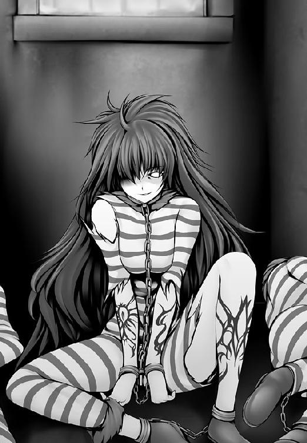
──それから、ややあって。
寂れた通りを、久美恋、可憐、静の３人は走っていた。
「師匠は、煉獄塔のどこかです」
と、静は言った。
「煉獄塔？ 風紀委員会の持っている刑務所のこと？」久美恋が聞く。
「姫百合マモリが所属している病院がそこなんです」
「刑務所に、病院？」久美恋は首を傾げる。
「犯罪者を半殺しにして病院に叩き込む看護師がいるのです」
「な、なにそれ............」
久美恋は啞然となる。
「師匠はきっとそこにいます！」
静が力説した、その時だ。
「おーい！ オレっちも連れていけよ」
３人の後を追って、猫丸が駆けてきた。
「一路を捜すなら、オレっちの鼻が役に立つぜ！」
──と、そんな３人と１匹の姿を遠目に眺めている少女の姿があった。
「あの娘ね、禍神さんが捜しているのは」
笑みを浮かべ、ベルトに挟んだ写真を手に取り、照合する。
ぺろりと舌を出して、Ｓは写真を捨てた。
次の瞬間、跳んでいた。
１００メートル以上の距離を一気に詰める。
Ｓは久美恋のすぐ背後に迫った。
「いちおう聞くけど、ハトリクミコ？」
あまりにも近距離からの声に、久美恋は戦慄した。
（いつの間に!?）
多少なりとも武術のたしなみがある久美恋にとって、気配すら感じさせずに間近に踏み込まれたことは、不覚にも近いショックがあった。
だが、それも一瞬だった。
振り向いた瞬間、久美恋は目がクラっとなり、倒れ込んだからだ。
「久美恋さん!?」「貴様、何をした！」
可憐と静が、突然の乱入者へ怒りの目を向けた。
だが、Ｓの抜く手を見せぬ拳のほうが早かった。
ダ！ ダン！
みぞおちを打たれ、可憐と静は崩れ落ちてしまった。
「殺すのはカンタンだけど、生かすのって難しいんだよなぁ」
「き、貴様。何が目的だ......！」
苦しみにもだえながら、静が聞いた。
「さあ？ 禍神さんに聞いてよ。まぁ、クミコって娘を連れてこいとだけ言われてるから、あんたたちは殺しても怒られないと思うけど、ま、殺すのは後でも出来るからね」
「てめえっ！」
猫丸が叫んだ。
「お、猫が喋った」
「猫じゃねえ！ ３人は連れていかせねえぞ！」
と、Ｓに飛びかかろうとする。
そんな猫丸を、静が制した。
「猫丸どのは師匠のところへ！」
「お前たちを放っていけるかよ！」
「まずは師匠を救出するのが先です！」
反論を許さぬ語気の強さで、静は言い放った。
ハッ、と猫丸は冷静になった。
（確かに......、オレっちじゃヤツには勝てねえ！）
悔しさに、猫丸は歯がみをした。
猫又でも男である。３人を見捨てるなんてことは死んでもしたくなかった。
（殺す気はないっていうヤツのボスの言葉を信じるしかねえ！）
そして、今は一路と合流することが、３人を救う最善手であった。
「すまねえ！」
猫丸は術を使った。
どろん、と煙が巻き立った。
「逃げる気!?」
Ｓが口から毒針を吐いた。煙の中へ。針が何かに突き刺さる音がした。
うっすらと煙が晴れていく。
猫丸の姿はない。
毒針はアスファルトに突き立っていた。
逃げられたのだ。
くすっ、とＳは笑った。
「ま、いいか。頼まれたのはこっちだし」
そう言って、Ｓは久美恋たちに猟奇的な目を向けた。
（一路に......！ 一路のところに！）
猫丸は走った。
Ｓに追いつかれぬため、一路を捜すため、全力の全力で走っていた。
前方不注意になっていた。
ドンッ、と人とぶつかった。
全力すぎて、急に止まれなかったのである。
「気をつけろい！」
焦っていたこともある。逆ギレ気味に猫丸は怒鳴った。
「す、すみません......って、キミは久美恋さんのところにいる猫くん!?」
「猫じゃねえよ！ 猫又だよ！」
「ご、ごめんなさいっ」
悪くもないのに謝る少年こそ、誰あろう。
野尻真一郎であった。
「面倒くさいヤツに逢っちまったな......」自分のことは棚にあげて猫丸は言い、「今はお前の相手なんてしてらんねぇんだ。久美恋ちゃんが誘拐されちまってるとこだからな」
「誘拐!?」
野尻がたずねた時には、もう、猫丸は遥か彼方に走り去っていた。
とんでもない情報を聞いてしまった、と野尻は思っていた。
「久美恋さんが誘拐されたなんて............」
わなわな、と身体が震えだす。それは悪に対する怒りの感情だった。
「邪神召喚を急がないと......！」
誘拐以上に不届きなことをつぶやいて、野尻も走り出した。
昼だというのに、牢獄は暗い。
監獄に忍びこむことに成功した猫丸は、なんとか一路が閉じ込められている病室にたどり着いていた。
「一路、おい、一路っ」
「猫丸か!?」
こんなところで再会できるとは考えていなかったのだろう、一路はびっくりして目を見開いた。
「猫丸、どうしてここに」
「説明してる時間はねえよ。久美恋ちゃんたちがマガミってヤツに誘拐されちまったんだ」
「なんだと!?」
一路はベッドから飛び起きようとして、鎖に食い止められた。
左右の手錠には、鋼鉄の鎖がつながれていたのである。
「くっ......」
「両手を塞がれているのか？」
「不覚だった」
一路は両手に特殊な手袋をはめられていて、点穴を打てない状態にあった。
「指先さえ自由になれば、崩壊点を打てるのだが......」
崩壊点とは、構造物の結合をほどくポイントのことである。
点穴使いは崩壊点を突くことで、硬度10のダイアモンドすらも粉々に破壊することが出来た。ましてや鉄格子など、たかだか鋼鉄である。
指先さえ使えれば、脱獄など造作もないことだけに、一路はもどかしさに震えた。
「この鉄格子、オレっちが突破できれば、手袋ぐらいなんとかなるんだが」
猫丸は鉄格子に頭を突っ込もうとするものの、隙間があまりにもせまく、いかんともしがたい。
カラカラカラ、と物音がした。
廊下の暗がりから、何かが転がってくる音を聞いて、猫丸は確かめに行った。
「おい、鍵だぞ、これ！」
「なに？」
「一路、近づけるところまで手を近づけてくれねえか？」
「うむ」
一路は身体を起こすと、渾身の力を込めて腕を引っ張り、鍵穴を猫丸に近づけた。
「チャンスは一度だけ......、失敗は許されねえ......！」
猫丸は上下の歯で鍵を挟みながら、唇で発射角度を微細に調整する。
一撃で鍵を穴に突っ込まないといけない。
「燃えるじゃねえか」
覚悟を決めて、猫丸は鍵を放った。
かちっ、と鍵穴にはまる。
「よし！」
あとは一路が鍵のはまった手錠を壁に押し当てて、解錠の位置まで回転させるだけでよかった。
手錠が外れた。
「助かったぞ、猫丸」
「あとはなんとかなるだろ、一路」
「うむ」
両手が自由になった一路は、ベッドから立ち上がると、鉄格子の前に立った。
すぅ、と息を吸い込み、たっぷりと気を体の中心に練りこむ。
充分に練りこんだ気を、人差し指と中指に送り込む。
「覇ッ！」
一路は鉄格子の崩壊点を点いた。
鋼鉄が、一瞬で粉々になる。
一路は自由の身となった。
「いくぞ、一路」
「うむ！」
............と。
そんな２人を、物陰から見守る視線があった。
「がんばってね」
聞こえないぐらいの小さな声で、彼女は微笑んだ。
（詮索されたくないのよね）
闇の中にたたずんでいた鍵子は、すっくと立ち上がり、一路たちとはまた別の方向へ走り出していった。
見るも無惨に、衛兵たちが息絶えている。
煉獄塔の門である。
立っているのは、禍神凶ただ１人であった。
ううう、あああ、と衛兵たちの断末魔のうめきが聞こえてくる。
正視に堪えぬような有様だった。
絶命させるだけなら、もっと穏便な手段もあったであろうに。
倒された者たちの骨はあり得ない方向に曲がり、破られた身体からは内臓が飛び散り、一面を血の海とさせていた。
「腕ならしにもならない」
ため息をついて、禍神は血を払う。
門に向かって歩きだそうと、踵を返した時。
「行かせないよ」
前方に、１人の少女が現れた。
巨大な門を１人で守るかのように、仁王立ちになっている。
姫百合マモリだった。
「......誰だ？」
禍神は尋ねた。
「紅迅村って名前は覚えてるかい？」
マモリが問う。禍神は、つまらないものを見るように眉を顰めると。
「知らないが、それがどうした？」
「アンタは知らなくても、こっちが知ってるからいいよ」
静かにつぶやいて、マモリは歩き出した。
（あたしの村を滅ぼした............！ それを知らないだと......！）
一瞬で心は、激しい怒りに包まれていた。
燃え上がっている。
爆発しそうだ。
握りしめた拳がぶるぶると震え出しているのが、自分でも分かった。
「どいてくれないかな。前を塞がれるのは嫌いなんだ」
と、禍神も歩き出す。
「アンタを外に出すわけにはいかないよ」
「同じことは二度言わないよ」
「あたしもよ！」
１人は怒りで、１人は嘲りで。
２人が同時に笑った。
それが闘いの合図となった。２人は同時に地面を蹴り、互いの拳を繰り出した。
（射程距離なら、あたしのほうが上！）
マモリは看護拳を放った。
気の塊が刃物のカタチとなって、禍神を強襲する。
ドン、ドン、ドン、ドン！
刃物は次々と禍神に突き刺さり、爆発した。
たちまち爆煙の雲が生じて、禍神の身体を呑み込んでいく。
（決まった......！）
勝利の確信に、マモリは唇をきゅっと結んだ。
「なんだい、これ」
とは、禍神の声だった。
爆煙の雲から飛び出すと、一気にマモリの喉もとに迫った。
「無傷だって!?」
「傷？ あんな子供だましで？」
禍神が手のひらを開いた。
点穴術師にとって、手のひらを開くことは必ずしも和解を意味しない。
「ずいぶんと馬鹿にしてくれたもんだね」
つぶやき、禍神は開いた手のひらをマモリにぶつけた。
凄まじい気の波動が、マモリの身体に流れ込んだ。
「きゃあっ!!」
マモリは吹き飛び、壁に当たって、崩れ落ちる。
ごふっ、と血の塊を吐き出した。
すぐに立ち上がろうとして、力を失う。
「よく生きてるね」
禍神は笑った。
「これが......、点穴の力？」
実力の差にマモリは愕然となった。
うなだれた頭から、ナースキャップが落ちる。
あらわになった獣耳を見て、禍神はひゅうと口笛を吹いた。
「獣人族か、道理で頑丈なはずだ。掌底に耐えたなんて、褒めてあげるよ」
「くっ......！」
負けられない。負けるわけにはいかない。
糸の切れた人形のようにヘナヘナになった身体にムチを入れるように、マモリは歯を食いしばった。立ち上がる。
（禍神、アンタだけは......、絶対に止める!!）
ドスッ......！
禍神の点穴がマモリのみぞおちを突いた。
「前を塞ぐなって、言ったよね」
「............っ！」
ばたりとマモリは倒れた。
呼吸を制御する横隔膜を点穴でおかしくされたらしい。
マモリは息が出来なくなり、激しく苦しんだ。
呼吸をせずに生きていられる人間など、いない。
「でも、苦しいのはイヤだよね。一思いに楽にしてあげるよ......」
そう言って、トドメをさそうと振り上げた腕を──。
一路がつかんだ！
「貴様っ......、いつの間に！」
禍神が振り向きざまににらみつける。
ゴスッ......！ と、一路の張り手が禍神の頰に決まった。
禍神はふらふらとよろめき、体勢を一路に向けた。
その間に一路はマモリの身体に点穴をほどこす。
「ぷはっ、はっ、はあっ」
再び呼吸が出来るようになり、マモリは九死に一生を得た。
「ふうん、点穴術ね」
愉快げに禍神の唇が歪んだ。
「そういうおぬしも点穴使いか」
「キミの先輩にあたるかな」
一路をからかうように、禍神は微笑んだ。
「おぬし、何のために人を殺める？」一路は聞いた。
「道を塞がれたから、どいてもらっただけだよ」
禍神は一路に叩かれた頰に手を当てて。
「前を塞がれるのって、とても気分が悪いんだ」
「それだけの理由で......？」
怒りに、一路は震えた。
だが、禍神はそれ以上に不愉快そうに顔を歪めた。
「同じことを二度言うのは嫌いなんだ」
「聞こえている」
「じゃあ、どきなよ」
「おぬしを行かせるわけにはいかん」
「馬鹿だね」
禍神はとびかかった。
一路が応じた。
互いの掌底が激突した。
パァンッ！ と空気が弾ける音がして、吹き飛んだ。
「くッ......！」
弾き飛ばされたのは、一路のほうだった。
門の外は、１本の長い吊り橋がかけられている他は、脱獄を阻止するための深い壕が存在するだけだ。
一路は空中でトンボを切って、橋の上に着地、禍神に攻めかかった。
バン！ バン！ バン！
互いの拳が交錯するたびに、気がぶつかりあって、激しい音を立てる。
（なんと、強く、重い拳だ）
腕と腕が触れあうたびに、びりびりとした痺れを、一路は感じた。
それは、気の練りこみで一路が負けているという証拠だった。
（気の流れが尋常ではない......！）
禍神の邪悪さを見ていなければ、その実力に驚嘆しているところだった。
（信じられない拳力......、一撃一撃に破壊力がある）
（だが、負けるわけにはいかない!!）
一路は右に左にすばやく動き、回転運動で禍神の拳を逸らしながら、必殺の掌底を彼女に叩き込む隙をうかがった。
その消極的な闘い方に、禍神は失望の色を浮かべた。
「がっかりしたよ、この程度の拳力しかないなんて」
（力では負けても！）
一路は構えをほどいた。
「勝利を諦めたの？」
禍神が攻めかかった。
次の瞬間、だ。
一路は、禍神の懐に飛び込んでいた。
「なッ!?」
正確には違った。
構えに隙を作り、わざと禍神に踏み込ませることで──禍神の速度を逆に利用して、実力以上の速さで一路は敵の眼前に迫ったのだ。
「ヤアアアッ！」
渾身の拳を叩き込む。
（決まった......！）
はずだった。
禍神はダメージを受けるどころか、顔色一つ変えることはなかった。
（掌底は決まり、渾身の気力を叩き込んだ......なのに！）
驚く一路を禍神は軽蔑するような目つきで見やって。
「キミは点穴の神髄を知らないんだね」
「なんだと？」
一路の反論に、禍神は答えなかった。
答える必要もない、と思ったのだ。
どんっ、と禍神は一路の胸に掌底を叩きつけていた。
禍神の手のひらから一路の胸に、猛烈な波動が襲いかかる。
身体がバラバラになりそうな感覚に、一路は踏ん張るので精一杯になった。
「くああああああッ！」
こらえきれず、一路は吹き飛んだ。
身体は宙に舞い、深い壕の底へ落ちていく。
ざぱあああん、と派手な水しぶきが上がった。
「相手にならないよ」
禍神はくるりと背中を向けて、歩き出した。
答えなど見る必要もないとばかりに。
ハッと目覚めた瞬間、
一路はマモリに介抱されていた。
「大丈夫かい!?」
どれだけ心配したのか、マモリは一路が意識を取り戻したのを確認するや、魂が抜けるほどに安堵の顔を見せた。
見ると、マモリは身体中が濡れている。
（壕に落ちたオレを助けてくれたのか............）
一路はマモリに感謝をした。
「おぬしこそ、身体は平気なのか？」
「これぐらい......。殺された村のみんなの痛みに比べれば............！」
マモリとて、あの禍神の点穴を受けたのだ。痛くないわけがない。
（禍神への怒りは、痛みを超えるほどに深いのか）
一路は、マモリの答えをそう解釈した。
「禍神は、何を企んでいる？」
「知らないよ、あんなヤツの考えることなんて」
憎々しげに、マモリは震えると。
「ただ、アイツは人体の秘密を究めようとしていた。自分の研究の実験台として、罪もない人たちを次々に殺していった。だから、今度もきっとそうなんだよ」
（研究......、点穴の研究で、人殺しだと？）
ぶわっ、と一路の心に怒りの炎が噴き上がった。
すっくと一路は立ち上がった。
「一路、そんな身体でどこに行く気だい？」
「久美恋どのを助けに行く」
うっそうと茂る、森の中である。
禍神は久美恋との対面を果たしていた。
「キミが、生き残りか」
自分を誘拐した相手が、女性であることに久美恋は驚いた。
「不思議？ これでも大人なつもりなんだけれど」
「わたしに用があるなら、２人を自由にして」
久美恋は、可憐と静の解放を要求した。
「ボクに命令する気かい？」
禍神は久美恋をにらみつけた。
ぞくっ、と久美恋は恐怖を覚えた。
人を殺めることに何のためらいも覚えない、そんな瞳を禍神はしていたからだ。
けれど、久美恋はぎゅっと拳を握りしめて、沸き上がる恐怖を抑えた。
ふん、と禍神は笑った。
「いいだろう。解放は出来ないけれど、Ｓには２人を殺させないよ」
「ぶーっ、久美恋を連れてきたら、あとは自由にしていいって言ったのにぃ」
Ｓは子供みたいに頰を膨らませて、不満をもらした。
「海の秘法が手に入ったら、いくらでも人が殺せるようになるよ」
「わだつみのひほう？」
「知らないのかい、キミは」
ふうん、と禍神は鼻をならすと、久美恋のあごをしゃくり、その瞳をのぞきこむようにした。
「知っててトボけてる......んなら、たいしたタマだね」
「わたしは何も知りませんっ」
キッ、と久美恋は禍神をにらみつけた。
やれやれ、と禍神は肩をすくめて。
「ここはね、昔に祭事が行われた場所なんだ」
見てごらん、と禍神は近くにそびえたっていた巨石を指さした。
「岩に紋様が刻まれているのが分かるかい？」
久美恋は目をこらした。
巨石は半分以上が蔦や苔で覆われているせいで、はっきりとは分からないが、たしかに塗料のようなものが見てとれた。
「これは......」
「海の一族は龍の末裔だと言われている。その血を呑み、肉を喰らった者は、不老不死に匹敵する生命力を得たそうだ」
「それが、わたしと何の関係が............」
何も知らない久美恋は当惑するばかりである。
「ボクもそれが知りたいんだ」
そう言って、禍神は久美恋の手首をつかんだ。
「放して！」
久美恋はあらがった。
しかし、禍神は有無をいわせず、久美恋の手を巨石の紋様に押しつけた。
直後だ。
ゴゴゴ、ゴゴゴゴゴ、ゴゴゴゴゴゴゴゴゴゴゴゴゴゴゴゴゴゴゴゴゴゴゴゴゴ......ッ！
大地を揺るがす地鳴りがした。
ついで地震が起こった。
地面がせり上がり、山肌が崩れだした。
「な、なにが......」
「見えた」
禍神の視線の先を、久美恋は見た。
それは露出した巨大な石垣であり、城塞であった。
何十年、何百年もの間、地中に埋もれていたものが、太陽の下に露わとなったのだ。
「こ、これは......」
「古代遺跡、海の一族が住んでいた城だよ」
静かに、禍神はつぶやいた。
あぜんとしながら、久美恋はたずねた。
「こんなものを復活させて、あなた、何が目的なの？」
「ボクのことより、キミは自分の素性をちゃんと知ったほうがいいよ」
久美恋、可憐、静は監房に閉じ込められた。
「ごめんなさい、わたしのせいで......」
久美恋は肩を落とした。
「いいえ、久美恋どのが謝られることではありません。悪いのは禍神凶」
憎々しげに、静は言った。
「どうすればいいのかしら」
久美恋の問いに、静は首を横に振った。
「残念ながら、あの者の実力は私の及ぶところではありません」
そんな中で、可憐は沈黙していた。
「............」
手のひらの、携帯電話を握りしめる。
「お２人をお助けする方法がありますわ」
「えっ」
「禍神より強い者を、わたくしは知っております」
そういって可憐は携帯の着信履歴を呼び出した。
電話をする。
「もしもし、真心お姉さま......」
可憐はみんなを助けるために、真心に電話をしたのだ。
いっぽう、ここは生徒会長室である。
生徒会長が、禍神脱獄事件の報告を受けていた。
「すべて、私の責任です」
神妙な面持ちで、神宮弥は謝った。
生徒会長は、神宮弥が提出した禍神凶のレポートを見た。
「それほどのＧＱの持ち主ではなかったはずだが」
ＧＱとは天才指数──すなわち本人の持っている能力や特質がどれだけ一般人から懸け離れているかを数値的に表した、その人の非凡さを示すパラメータである。
「......ん？」
会長は、禍神が黒点術の使い手であるところに注目した。
「よもや......、禍神は、点穴術で己の能力を上昇させているのではないか？」
「おそらくは」
神宮弥も同じような結論に達していたのだろう、こくりとうなずいた。
「ど、どどどど、どうしましょう！」
世界が終わるような悲鳴をあげたのは、会計主幹の秋葉紅葉である。
「何を動揺している？」
「会長こそ、何を動揺していないんですか!?」
「平静のように見えるか？」
「見えます！ 動じていなすぎです!!」
「そうか？ これでもワクワクしてるつもりなのだが」
「ワクワクしてどうするんですか!? ワクワクして!?」
「メソメソするよりマシであろう」
「会長は今回の事態にどう対応されるつもりなんですか!?」
「決まっている」
キラリ、と会長の瞳が輝いた。
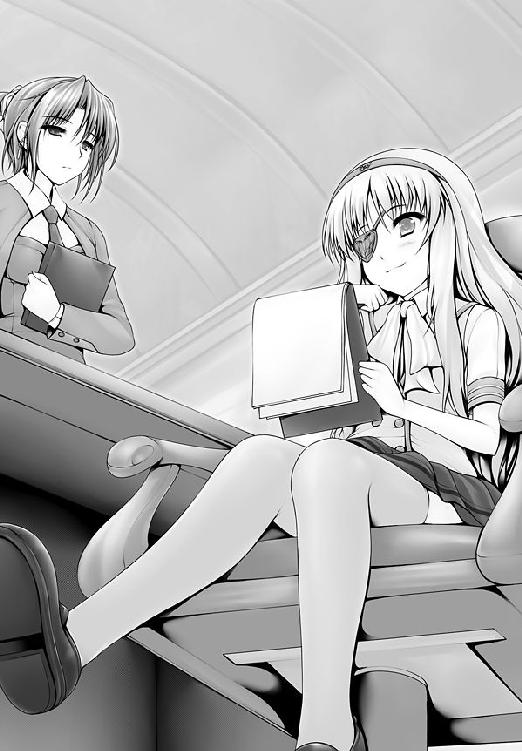
「何もしない」
「ええええええええええええええええええええええええ！」
紅葉は慌てた。小さな頭を抱えて動揺した。
「脱獄ですよ、脱獄！」
「そうだ。それがどうした？」
「それがどうしたって、大変なことじゃないですか！」
「じゃあ、放置する」
「会長が事態を放置してどうするんですか！」
「見守る」
「同じことですよ！」
「こういう時こそ、輝く者が出てくる。そいつの力を私は見てみたい」
「会長ぉ～っ！」
と、そこへ。港の守備隊から、部隊壊滅の報告が入った。
「どういうことだ？」
会長は敵の正体を聞いて、目の色を変えた。
「感謝拳の使い手だと？」
「た、た、大変な事態ですよ～～～～～～～～～～～～～～～！」
紅葉は震えあがった。
「大ごとになってきたな」
「連動作戦でしょうか!?」
「ふむ、だとしたらピンチだな」
「そうです！ 会長！ やっと危機感を持って下さいましたか！」
「俄然、面白くなってきた」
「わたしは全っ然面白くないです～～～～～！」
一路とマモリは城塞の前までたどり着いていた。
「来るぞ！」
門が開き、わらわらと兵士たちが現れた。
「......人間じゃ、ない？」
一路は目を疑った。
それは土人形とも言うべき兵士たち。
ゴーレムであった。
彼らは数百、いや数千の数を成して２人に襲いかかった。
その様はまるで津波のようであった。
「人形ならば容赦は無用、行くぞ」
「うんっ」
ダン、と大地を蹴って、マモリは空を舞った。
「看護拳！」
気の塊が、メスのカタチになって、ゴーレムに襲いかかった。
メスが命中するたびに、次々と兵士たちは爆砕していく。
土くれが舞い散り、海が割れるように軍勢の中央に道が生まれた。
「今だ、一路っ！」
マモリが開けた道を、一路は突き進んだ。
彼が走る先には、ひときわ巨大な土人形──隊長格のゴーレムがいる。
体格にして、一路の３倍はあった。
だが、一路にはややともひるむところがなかった。
（相手が物質であれば、急所は必ず存在する）
その点を、一路は指先で突いた。
「崩壊点！」
一路が突いた場所から、亀裂が蜘蛛の巣のように広がり、ゴーレムは砂のように崩れ去った。
「よしっ！」
マモリが喝采をあげた。
「うむ、城内に突入するぞ！」
だが、マモリの笑顔はすぐに消えた。
再び開いた門から、先ほどに倍する量のゴーレム兵たちが現れたからだ。
「なにこれ!?」
「突破するしかあるまい」
「うんっ」
マモリは再び看護拳を放った。
だが、倒せたのは最初の数十体のみで、後から後から湧いてくる兵士たちに圧倒されてしまう。
「倒しても倒しても出てくるよ。もう、きりがない！」
「崩壊点！」
一路もまた、抗しきれない。
土人形の山に、一路とマモリの２人は呑み込まれていった......。
その時だ。
ぴかっ、と。
空の一点から、凄まじい輝きを放つ光の束が放たれた。
それは剣のように突き立って、ゴーレム兵をたちまちのうちに薙ぎ払った。
「うわはははははははははははは！」
空から声がした。聞き覚えのある声だった。
「野尻真一郎！ 邪神を従えて、さっそうと登場！」
彼はバケモノの肩に乗っていた。
ランプの魔神に代わるモノを召喚したのだ。
巨大な、40メートルはあろうかという生き物であった。
６枚の翼を持ち、大きく背中が折れ曲がった、人とも獣ともつかぬ異形である。
野尻は有頂天の顔をして。
「ハッハッハッハッ、諸君。僕が助けに来たよ！」
バケモノは大きく翼を広げて、着地をする。
「......なんだい、このバケモノは？」
指をさして、マモリが聞く。
「邪神を召喚したのさ」
「じゃしん～？」
マモリがいかがわしいものを見るような目つきを向けた。
「そうさ、この杖でね」
と、肘の長さぐらいの杖を、ひらひらとさせた。
どうやら、今度は杖が召喚生物のコントローラーらしい。
「アンタって、獣人族だったんだ......」
「違うよ。僕はただの人間さ」
「人間なのに魔法が使えちゃうの!?」
「僕は努力家だからね」
「無理だよ。魔法使いは血筋だもん」
「それを超える努力をしたのだろう。努力に不可能はない」
と、素直に一路は評価した。
「絶対に無理だって。努力とかそういう問題じゃないから」
「それを可能にしたのが、僕という人間だ」
「いや、だから努力でなんとかなるものなの......？」
とか、まあ、ちょっとピントのずれた会話をしていると。
崩れた城壁の向こうから、またもやゴーレム兵がうじゃうじゃと姿を現してきた。
「もー、しっつこいんだからあ！」
マモリは腹を立てる。かたや野尻は顔色一つも変えることなく。
「焼き払え」
しゅばあああああああああああああああああああああああああ！
邪神は口を開くと、巨大な光熱波を発射した。
剣のような光の束がゴーレム軍団を殲滅し、城壁をも破壊する。
「うわはは！ うわはは！ うわはははははははは!!」
野尻の高らかな笑いは止まらない。
「どうだい御統一路クン。僕の実力は」
相手の上位に立った途端に、クン呼ばわりである。
「すぐに図に乗るヤツだね......」
マモリは半分ぐらい呆れた目をした。
いっぽう、一路は感心のまなざしで邪神を見上げ。
「にしても、すごい破壊力だ」
「久美恋さん！ 僕は強くなりましたよ！ 助けに行きますからね!!」
と、手を振った途端。
手のひらから、杖が、すっぽ抜けた。
「あ..................」
野尻は取り戻そうと、宙に浮いた杖に手を伸ばす。
指先がかすっては離れ、かすっては離れ。だんだんと手が届かなくなり......。
まったく届かなくなった。
「逃げないでえ～～～～～～～～～～～～～！」
ひゅるひゅるひゅる............、と杖は地面へ。
ぽきっ、と割れる音がした。
「魔法使いの杖って、そんなにモロいものだっけ......？」マモリがつぶやいた。
「お金がなかったんで、模造品で代用したんです～！」
「も、模造品............」
多少なりとも魔術の心得のあるマモリは、野尻の適当さに呆れ、あんぐりと口をあけるしかなかった。
野尻は邪神の肩から降りて、杖を拾いに向かう。
だが、間近にたどり着くまでもなく、杖は無残なことになっていた。
「やっぱり裏庭の木の枝で作っちゃマズかったかなあ............」
「裏庭ぁ!?」
ジロリ、とマモリは目の色を変えた。
禁忌の術に触れるわりには、あまりにも杜撰な野尻のやり方に呆れを通り越して、叱りたい気持ちを感じたからだ。
ギロリ、と邪神は目の色を変えた。
杖が壊れた以上、もはや人間ごときに頭を垂れる必要がなくなったからだ。
瞳の色が、青から赤へ。
横を向き、巨大な目が野尻を見据える。
「あ......、あの......」
野尻の顔中に、冷や汗が、たらたらと......、たらたらと......。
「え......と......、今、大事なのは話し合いの......」
くわっ、と邪神は口を開いた。
しゅわわわわ、と光が収束していく。
「うわああっ、許してええええっ」
野尻は立ちすくんだ。
殺されてしまうという恐怖に身体がすくんで、逃げなければいけないことが分かっているのに、身体が動かなくなったのだ。
「逃げろっ！」
一路が飛び込んできた。
間一髪のところで、野尻を脇に抱え、跳ぶ。
直後、邪神の口角砲が、彼のいたところを蒸発消滅させた。
（一瞬でも遅れていたら......）
戦慄に、野尻は心臓が止まりそうになる。
生きている幸運が、じわじわと押し寄せてくる。
「あ、ありがとう！......って、礼なんて言わないからな！」
「おぬし、怪我はないか？」
「う、うん」
思わず、野尻は素直に答えてしまった。
（一路って、ホントはいい奴なのかも......）
そんなことを思い始めている自分に気付き、野尻はぶるんぶるんと首を横に振った。
「い、一路っ！ 僕は......!!」
「逃げるぞっ！」
ひょいっと一路は再び野尻を抱え、逃走を開始した。
邪神の口角砲が再び炸裂した。
じゅわわわ、一瞬にして地面がどろどろに溶けてしまう。
勝てるわけがない。逃げるしかない。
マモリが怒った。
「アンタ、なんてもん呼び出してるのよ!!」
「ごめんなさい～～～っ！」
そんな叫びを尾に引かせながら、一路たちは全力疾走した。
しゅばっ、しゅばっ、と邪神は口から光熱の束を放つ。
地面に次々と黒い大穴が穿たれ、爆風が３人をあおった。
壁に追い詰められた。
「やばいよ、一路」
「うむ。これは参った」
さすがの一路も冷や汗を浮かべた。
と、次の瞬間、小さなつぶやきが聞こえた。
「感謝」
空に、巨大な火の玉が生じた。
それはたちまちに膨らんで、邪神の身体を呑み込んでいった。
上半身が砕け散り、ズズン、と音を立てて、下半身が崩れ落ちる。
「な、なにが起こったの......？」
驚きに目を白黒とさせながら、マモリがつぶやいた。
火の玉が消失した空に、人の姿をした黒点が見えた。
「なんて貧弱な男」
そうつぶやくのは可憐の姉──純条真心であった。
真心の目に一路たちは映っていない。関心もない。
「ここにいるのね、可憐は」
真心は古代城を見上げた。
巨大な城である。
建築は中国のものと日本のものが混ざったような様式である。
つまりは沖縄的ということだろう。
おおらかで、雄大ということだ。
十数メートルもの石壁の前に、真心は立ち。
「つまらないわね」
真心は手もあわせず、傲然たる口調で、一言クチにした。
「感謝」
次の瞬間、城壁は自らを恥じ入るように爆発した。
無残に、粉々に、木っ端微塵に、崩れ落ちた。
「もろいものね」
髪をかきあげると、真心は悠然と城の中へ足を踏み入れた。
するとだ。
右から左から、ゴーレム兵がわらわらと現れて、真心を取り囲んだ。
その数、なんと数千。
だが、真心はそよとも動じた顔色を見せず。
「感謝しなさい」
へなへなへな......、と。
ゴーレムたちは剣を落としてひれ伏していく。
真心は腕を上げる必要すらなかった。
「ふふ......いい子ね」
微笑し、真心は城の中へ入っていった。
......そんな光景を、久美恋たち３人は牢の窓から見ていた。
「なに......アレ......」
呆然とした顔で、久美恋はつぶやいた。
「あ、あれは......」
可憐が口を開こうとした。すると、その話を遮るようにして廊下のほうから。
「天帝感謝拳よ」
「っ!!」
その声を聞いた瞬間、可憐は戦慄した。
「誰!?」
久美恋たちは振り向いた。そして驚いた。
気づいたら廊下は破壊されていて、その向こうに類希なる美貌を持つ女性が立っていたからだ。
「久しぶりね、可憐」
「お、お姉さま............」
可憐の胸のうちにはどんな感情が揺れ動いているのか、それだけのことを言うのが精一杯だ。
姉の真心は、ふふっと柔らかな笑みを浮かべるばかりで。
「どうしたの？ 可憐、金魚みたいにクチを開けて」
「だって、いま、あそこに......」
「瞬間移動は、女のたしなみよ」
真心はゆっくりと髪をかきあげ、ふあさっと波打たせる。
「どうしたの？ 可憐、震えているようだけれど......」
「気、気のせいですわ......」
そう言って、可憐は動揺を最小限に抑えようとした。
ぶるぶると震える手を、もう片方の手で押さえる。
だが、無理だった。
（真心お姉さまと闘っても、勝てない......！）
それは恐怖を超えて、神の与えた世界の真理といっても過言ではないほどの確信であった。
（でも、今は......！）
可憐は久美恋と静のほうを振り向いて。
「お２人は、先に城を脱出して下さい」
「可憐は？」
「わたくしはお姉さまと話があるので......」
可憐は真心を見つめた。
（お姉さまは、人を支配することしか出来ない人）
（だから、わたくしが一路さまを連れ帰ることが出来なければ、お姉さまは一路さまを殺してしまう）
（かつてのわたくしが、一路さまとの闘いを選んだように............）
（わたくしはお姉さまと対決する）
敗北を覚悟で。
可憐は武者震いを覚えた。
四 どこにでもある感謝
インペリウム感謝【いんぺりうむかんしゃ】
秦の始皇帝が創始したといわれる絶望の感謝拳。
可憐の姉、真心が用いる。
可憐の必殺技『シャイニング感謝』が「この世に存在する、すべてのものに対する深い愛」から生み出されるものであるのに対し、真心の『インペリウム感謝』は「私の存在に対して、すべての人間が感謝しなさい」という絶対的な自信から発動される技である。
自分＝世界、自分＝絶対神、という思い上がりによって生じる超自我空間・絶対王政の境地・の中では、彼女のうちから溢れだす傲慢さが壮絶な破壊力を生成、あらゆるものを破壊する。
正直、わけのわからない世界。
これまた、多くの科学者が「感謝」と「破壊力」との因果関係を突き止めようとしたが、無残な討ち死を遂げていった............。
また出力を上げると、物理空間をゆがめる際に生じる余剰エネルギーによって巨大な火球を生み出してしまう現象が確認されている。
なぜ思い上がるだけで火球が作り出せるのか？ その謎を解き明かした人は編集部まで御一報頂きたい。
微笑したのは真心のほうだった。
見た目には、物腰の柔らかな美女である。
だが、可憐はぶるぶると震えていた。
「どうしたの？ 可憐、そんなに緊張して............」
「いえ......」
「久しぶりの対面に緊張しているの？」
「ち、違います」
可憐は声を震わせる。
「おめでとう、可憐」
「えっ」
姉の笑顔に、可憐は虚を衝かれた。
「愛する人を見つけてこそ、女。あなたも立派な純条家の女になったのね」
「い、いえ......、わたくしなんて、まだまだです」
可憐は恐縮するいっぽうだ。
自分を畏れ敬う人間が好きな真心は、可憐のような態度を好ましく思った。
従順な妹はかわいらしい。
「ねえ、どんな男なの？ 芸術家？ ビジネスマン？ スポーツマン？」
「け、拳法をたしなんでおります」
「いいわね。武道家」
真心は、褒めるような笑みを可憐に向けた。
「お姉さま、その話なんですが......」
可憐は、一路を純条家には連れていけないことを説明した。
「どういうこと？」わずかに、真心は目つきを変えた。
「そ、それは............」
「純条家の掟を、分かっているのでしょう？」
「は、はい」
純条家に生まれた女は、愛に生まれ、愛に生き、愛に死ななければならない。
それは彼女たちが愛した男に対しても同じだった。
純条家は純情一途。
生涯をかけて、一つの愛をまっとうする。
その運命を守るために、彼女たちはある掟を定めた。
〝愛を受け入れぬ男は、消す〟
純条家の女に愛を告白されたら最後、男の側に選択肢はない。
断ることは、死を意味することだからだ。
（お姉さまが一路さまの態度を知ったら、お姉さまは一路さまを殺してしまう!!）
純条家の女に恥をかかせた男となるからだ。
「じゃあ、すべきことは分かっているわね」
「一路さまを純条家に連れ帰る......」
「そうよ、可憐」
お姉さま、と可憐は訴えた。
「わたくしは、一路さまの後をついていきたいのです」
「ふうん」
真心は意味深な笑みを浮かべると、両手を可憐の頰に寄せて、じっと彼女の瞳をのぞきこんだ。
「可憐」
「は、はいっ」
にっこり優しく微笑して、真心は尋ねた。
「あなた、まだ、彼の心をゲットできてないんでしょ？」
図星だった。
「............そ、それは」
「あなたは自分の気持ちをすり替えているだけ。相手が意のままにならないから、寛容な女になることで、自分をごまかそうとしているの」
「ち、違います」
「違わないの」
真心は微笑を崩さない。
「お姉さまの言うことが間違っていたことが、一度でもあった？」
「いいえ。真心お姉さまはいつでも正しいです」
「そうよ、可憐。あなたはお姉さまの言うことを聞いていればそれでいいの」
「は、はい......」
まるで洗脳のように、真心の言葉は可憐を縛り付けていく。
それが、純条真心の感謝力──相手の心を支配し、自分への感謝を強制する力であった。
「さあ、彼の居場所はどこ？」
「聞いて、どうするのですか？」
「彼次第よ」
「えっ......」
「素直に頭を垂れて、純条家に赴くならばヨシ。逆らい、鳴神島に残ると言うならば............」
「言うならば？」
可憐は真心の言葉を待った。
「死んでもらうわ」
「そんな！ お姉さま！」
可憐が抵抗を見せると、真心はそれを目で制して。
「純条家の女に恥をかかせた男が、どんな末路をたどるかは、可憐、あなたも知っているでしょう？ 純条家の女は一途な愛に生きる定め──その定めを踏みにじる男どもは、死ぬのが定め!!」
「............っ！」
可憐は言葉を失った。
（純条家の女は、初恋成就率１００パーセント──！）
それは、純条家にとって絶対の掟だと、可憐は知っていたからだ。
なぜならそれは、求愛を断った男を死滅させてきたからであり、それが正しい女の作法だと信じて疑わなかった可憐は、求愛を受け入れなかった一路に全力の勝負を挑んだのだ。
（一路さまは、何があろうと自分の進む路を突き進むお方............）
（たとえ命を引き替えにしても、いえ、そういう決断を迫られた時こそ、信念に殉じてしまわれるお方！）
その闘いは、一路の勝利に終わった。
（でも、一路さまもお姉さまには勝てない!!）
確信を超えた確信に、可憐は戦慄した。
「さあ、可憐。男の居場所を言いなさい」
「いやですっ」
ふるふると可憐は首を振った。
ただ、首を左右に動かすだけなのに、いやな汗が滝のように流れていった。
姉に対する恐怖、逆らえないという意識が、本能レベルで可憐の心に染みついているからだ。
「聞き分けのない子ね、可憐」
真心は、再び可憐の瞳をのぞきこんだ。
「言いなさい、一路はどこにいるの？」
「い、いやです」
「どうして？」
「相手を自分の思い通りにしようというのは、間違いだと思います」
「なんですって？」
「相手を支配するのではなく、共に歩む愛のカタチもあるはずです」
「......どうして、そう考えるの？」
「一路さまを......、愛しているからです」
「その愛は偽りよ、可憐」
「えっ」
「ホントに愛しているなら、その男を支配したいと思うはず。そのための力を純条家の女は持っている。それを使わないというのは、すなわちその愛が間違っているということよ」
「間違い......？ わたくしの愛が？」
「そうよ、可憐」
「は、はい......」
その時だ。
「なに、メチャクチャなことを言っているのよ！」
跳び蹴りが、真心に命中した。
吹き飛ばされ、真心は壁に激突した。
「久美恋さん!?」
可憐は目を白黒とさせた。
「さっきから聞いてれば、ひどいことばかり言って。あなた、お姉さんなんでしょう!?」
「この私が......、蹴られた......？」
真心は震えていた。
蹴られた頰を押さえて、うめく。
痛みではない。屈辱のうめきだった。
久美恋はそれ以上に怒っている。キッとにらんだまなざしを真心へ向けて。
「聞いてる!? あなた！」
真心は久美恋の言葉など、聞いてはいなかった。
一度たりとも、誰の言葉にも耳を傾けたことのない人生だった。
彼女の世界には、彼女しかいない。
真心にとって人間とは、自分に従い、ひざまずき、奉仕するための存在であった。
「この私を......、蹴ったの？」
「悪い？」
久美恋は負けていなかった。
「お姉さんが妹をいじめてどうするのよ！」
「私という存在に感謝する。それがインペリウム感謝」
「......な、なにそれ？」
「ひれ伏すがいい」
「逃げて下さい！ 久美恋さん!!」
可憐が叫んだ。そして真心はつぶやいた。
「感謝」
閃光と爆発が巻き起こった。光の中に呑み込まれる久美恋。
「きゃあっ」
光熱波に可憐は吹き飛ばされた。
ごろごろと地面を転がって、壁にぶつかって止まる。
「久美恋さん！」
可憐は叫んだ。
熱気のたちこめた爆煙の中で、返事はない。
爆心地にいた久美恋などはもう......。
「そんな............」
絶望に可憐は顔を青くした。
そんな可憐を真心は見下ろして。
「なぜ、そのような顔をする？ ここは笑うところよ」
「笑えません」
「邪魔者が減ったのよ。これで一路という男も連れてきやすくなったはず」
「久美恋さんは邪魔者ではありませんっ」
「邪魔者ではない？ ではなんだというの？ まさか友達とでもいうのではないでしょうね」
「........................」
可憐は何も答えられない。何かを言おうとするものの、感情がうまく言葉に変換されない。どんな言葉も自分の気持ちとはズレている気がして、声にすることが出来なかった。
「お前の一路という男に対する愛とはその程度のものなの？ 誰かに譲れる程度のものなの？」
そう言って、真心は傲然たる笑みを浮かべた。
「そんなものは、愛とは言わない」
容赦のない言葉が、可憐の心をわしづかみにした。
物理的なことは何もされていないというのに、可憐は胸が苦しくなり、息も出来ないほどに追い詰められた。
「可憐は......、可憐は......、お姉さまとは違います......！」
「なんですって？」
「可憐の信じる愛は、もっと広くて、大きなものです」
「ふん、世迷い言ね」
と、その時だ。
「ん......、んん」
うめきながらも、久美恋が目覚めた。
「大丈夫ですか!?」
「うん......、なんとか」
吹き飛ばされた時に頭を打ったのか、久美恋は「痛た......」と頭を押さえている程度で、見える範囲では怪我をした様子もない。
「よかった......」
可憐はホッと安堵の笑みをこぼした。
どれほどに安心したのか、瞳には涙すら浮かべていた。
「馬鹿な......」
真心の唇からは、驚嘆の息が漏れていた。
「私の感謝拳から、逃れた、だと？」
信じられない。
真心は首を横に振った。
「逃げるわよ」
久美恋は立ち上がり、可憐をうながした。
つられるように歩き出す。
と、瓦礫の一つにつまずいてしまう。
足をくじいてしまったのだ。
「先に行ってください。わたくしのことはいいです」
「なに言ってるの」
久美恋は肩を貸して、可憐を引っ張った。
（なぜ......？）
可憐は当惑した。
分からなかった。久美恋の行動が。
（自分なんていなくなったほうが、一路さまを独占できて、久美恋さんには都合がいいハズなのに............）
可憐は、久美恋に訊ねた。
「どうして、わたくしを守ろうとしてくれるのです？」
「どうして......って？」
きょとんとした顔で、久美恋は訊ねかえした。
「可憐、あのお姉さんに勝てる算段でもあったの？」
「い、いえ、そんなものあるわけがありません」
ふるふると可憐は首を横に振った。
「じゃあ、よかったわ」
「そうじゃなくて......久美恋さんは、わたくしが邪魔ではないのですか？」
不思議でたまらなくなって、可憐はたずねた。
「可憐の考えのほうが正しい、わたしはそう思う」
『相手の個性を肯定することが愛』という可憐の考えのことだ。
「可憐は一路くんのことを好きになったんでしょ？」
そう言って、久美恋は可憐の両肩をつかみ。
「だったら、その気持ちを信じなきゃ。一路くんを好きになった気持ちを信じなくちゃ」
「好きになった、気持ち......？」
「わたしは相手の全部を好きになることが本当の〝好き〟だと思う。自分の思い通りになってくれる相手じゃないとダメだなんて、そんなの好きでもなんでもないよ」
「..................」
一拍を置いて、可憐が訊ねた。
「......それは、一路さまの活人拳をお認めになるということですか？」
ぽんっ......、と久美恋の頰が一瞬で火を噴いた。
「なっ、なななな、何を言ってるの？ 可憐は！」
「久美恋さんは、相手の個性を尊重することが愛だと............」
「だから、それがなんで一路くんとつながるのよ!?」
「だって、久美恋さんは一路さまのことを............」
「わたしのことは関係ないでしょっ！」
「ですが......」
可憐が追及しようとすると、久美恋はますます顔を赤らめて。
「と、とにかくっ！ 可憐は自信を持ってイイの！ あんなお姉さんのトコに戻ることなんてないし、この島にいていいの！」
「久美恋さん......」
可憐の愛らしい顔に、柔らかな笑みが浮かぶ。
その純真さを、久美恋は守りたいと思った。
「可憐の素直なところ、わたし、とっても好きなんだよ。どんな時でも、誰に対しても、自分の気持ちをまっすぐに言えるところ。わたしも見習いたいと思っているぐらいだもの」
......それは、久美恋の偽りのない本音だった。
「久美恋さんにそんなことを言っていただけるなんて、わたくし......」
ふわっ、とつぼみが花開くように、可憐の中で希望が生まれた。
（久美恋さんは、わたくしの大切な方です......）
新たな感情がわいてくる。
久美恋を認める気持ちだ。
それは一路を愛しながら、ライバルである久美恋も認めるという、寛容さ。
可憐は、己の内側に新しい力を感じ始めていた。
「あ、あれは......、月桂樹！」
静の声だった。
久美恋には先に行けと言われたが、気になって戻って来ていたのだ。
「ゲッケイジュ？」
「見て下さい、あれを」
静は可憐を指さした。
可憐の頭上で輝く光を指さした。
それは天使の輪のようにも見え、月桂樹の冠のようにも輝いていた。
「月桂樹とは、ローマ帝国初代皇帝アウグストゥスが凱旋の時に頭に冠していたと言われるシンボルです。今の可憐どのの達した境地こそ、かつてローマ人が大帝国を築くことに成功した精神、敵対した民族をもローマの一員として受け入れていった寛容性。すなわちクレメンティアなのです!!」
（わけわかんないんだけど......）
と、久美恋は思う。
そこへ、真心が現れた。
可憐の輝きに、真心は目を細めた。
「な、なんだ、この光は？」
真心は可憐が手にした新しい力を理解できずにいた。
ただ、その力に脅威を感じた。
「感謝」
真心はインペリウム感謝を放った。
すさまじい輝きがほとばしり、可憐たちを狙い打った。
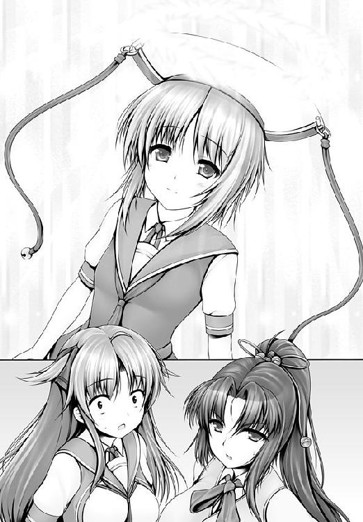
可憐は久美恋や静を守るように移動すると、そっと自分の両手を合わせた。
まばゆいばかりの光が、３人をつつみこむ。
一帯は純白の光に包まれ、あらゆるものが真心の破壊力のもとに踏みにじられ、破壊され、殲滅されていった............。
............はず、だったのだが。
可憐は、無傷だった。
可憐だけではない。
久美恋も静も無傷であった。
「インペリウム感謝が通じないですって!?」
きらめきの中に、可憐は立っていた。
「お姉さまの愛は一方的です」
「なに？」
「わたくしもまた、間違っておりました」
そういって、可憐は己の胸に手をあてる。
「あるものをあるがままに受け止め、受け入れる。それが愛」
ハハッ、と真心は吐き捨てるように笑い。
「聞こえはいいけど、主体性を放棄しただけではなくて？ 相手のなすがまま。そこにあなたの意思はないの？」
「わたくしはシャイニング感謝を捨てました」
「えっ？」
「超！ シャイニング感謝!!」
可憐は新たなる精神の事象、万物慈愛の境地を開いた。
それ、すなわち。
超！ シャイニング感謝である。
凄まじい爆発と爆発と爆発と爆発が、真心に襲いかかった。
「ナマイキね」
真心は感謝力で対抗する。
だが、抵抗できたのはものの数秒ほど。
「きゃあああああああああああああああああああああああああああっ！」
悲鳴と共に、真心は空の彼方へ吹き飛ばされていった。
静は感動した。
「感謝拳が復活した！」
「結局、爆発なのね......」
微妙な顔をする、久美恋。
光の中で可憐がつぶやいた。
「これこそ、真の感謝......」
「......これが、真の感謝？」
素直には同意できない久美恋である。
それでも、可憐は微笑んだ。
「お二人を守れて......、よかった、です......」
安堵のせいか、可憐は糸の切れた人形のように崩れおちた。
久美恋が支えに入る。
「大丈夫っ!?」
「ホッとしすぎたみたいです......、でも、ちょっと休めば......」
消え入りそうな声で言う。
久美恋はまず可憐を介抱することに決めた。
「静さんは、先に脱出して、一路くんたちのもとへ」
「分かりました！」
静は一路のもとへ先行する。
不断刀。刃のない──両方が峰という、意味不明の奇刀を腰に提げて。
五 胸を借りて、勝つ
海の一族【わだつみのいちぞく】
かつて沖縄を統治していた王族のこと。
龍の一族とも言われている。
龍の末裔と言われており、獣人一〇八族の中でも類希なる生命力を誇っていた。
純粋種であったころは不老不死に近い寿命を持ち。脳を破壊されたり、肉体が再生不可能レベルまで損傷する以外に生を終える方法はなかったと言われている。
事実上、この惑星の霊長種であり、人族の上に君臨していてもおかしくない彼らであったが、個体数は減少の一途をたどり、現在は数家族を残すのみとなっている。
それゆえに彼らの存在は無数の伝説を生み出している。
「彼らの生き血をすすれば、万病が治る」
「彼らの肉を食えば、不老長寿が約束される」
それらの問いに対する答えはＹｅｓでもあり、Ｎｏでもある。
一路とマモリは、駆け足で階段を駆け上がっていた。
城であれば、目指す敵はてっぺんにいる。
単純な理屈であったが、外れてはいなかった。
「ふふ、よく来たね」
階段の突き当たりには、Ｓが待ち構えていた。
暇をもてあましていたのだろう、片膝をついて退屈そうな顔をしていたのだが、一路たちが現れた途端、喜色を瞳に浮かべ、立ち上がった。
「アンタとはあたしが闘うよ！」
マモリが前に出た。
一路に目配せをする。
禍神のことは任せた、と。
「うむ」
「行かせないッ！」
Ｓは一路に襲いかかろうとした。
その腕を、マモリがつかむ。
「アンタの相手はあたしだって言ったろ」
その隙に、一路は奥の部屋に飛び込んだ。
禍神がいた。
窓のそばに立って、眼下の光景を眺めやっていた。
「よく生きていたね」
薄い笑みを浮かべて、禍神は振り向く。
「色々と邪魔者が現れたことだし。キミを露払いにしよう」
「みんなを返してもらう！」
「勝てると思っているの？」
「二度と負けるつもりはない！」
一路は言った。
ふふん、と禍神は笑い、人差し指と中指を立てた。
「キミがボクに勝てない理由は２つある」
「勝負だ！」
言うが先か、踏み込むが先か──。
一瞬だった。
床を踏み抜かんばかりの音を立てて、一路が禍神の懐に飛び込んだ。
禍神は逃げない。一路が、禍神が、気を練りこんだ掌底を叩きつける。
ドオオオオオオオオオオオオオオオオン！
音速を突破した衝撃音がし、城が大きく揺れた。
２人は互いに吹き飛んだ。壁にぶつかった。すぐに２人は立ち上がる。
立ち上がって、すぐに飛びかかった。
ドン！ ドン！ ドン！ ドン！
掌底がぶつかり合うたびに、気と気がぶつかり合い、大気を揺るがした。
「その筋、虚心流か？ 玄鉄の筋か？」
禍神が問うた。
「！」
一路の顔が驚きに変わった。
玄鉄とは、自分を育ててくれた師父の名だからである。
（コイツ、なぜ爺っちゃんの名を......！）
一路のわずかな表情の変化だけで、禍神は理解した。
「なるほど、玄鉄の爺さんは、あいかわらず、そんなヌルい拳しか、弟子に教えてないんだね！」
ズンッ......！
強烈な掌打が、一路のみぞおちを打ち抜いた。
「がッ......！」
激痛に、一路は顔をゆがめた。
それでも倒れない。必死で踏ん張る。
（負けるわけにはいかない......！）
よろよろとよろめく一路を見下ろして、禍神はつぶやいた。
「キミが学んだ点穴は子供の遊び。これが力の差だよ」
「爺っちゃんの教えてくれた拳は遊びじゃない！」
「玄鉄は、点穴の神髄から目を背けた男さ」
「点穴の神髄？」
さっきも禍神が口にした台詞だ。
「点穴の神髄は、人体の未知なる可能性を開くこと............つまり、こういうことだ！」
次の瞬間だ。
禍神は突き立てた人差し指を、自分の身体に刺したのだ。
想像もしなかった彼女の行動に、一路もびっくりした。
「自分の身体に、点穴だと!?」
「そうだ......。そうだとも」
ニヤリと禍神が笑った瞬間、一路の目には禍神の身体がぶわっと膨らんだように見えた。
それは錯覚ではなかった。
「これが真の気力というものよ！」
禍神は猛腕をふるった。
目にも留まらぬ速さと、凄まじい破壊力をもった拳だった。
一路は逃げる間もなかった。
かわす間もなく張り飛ばされた一路は、床にたたきつけられた。
「く......くッ」
禍神の掌が触れた場所が、火傷のようになっていた。
殴られた痛みよりも、皮膚が焼けたことに一路は驚愕した。
（な......、なんだ!?）
皮膚が焼けるほどの気の密度など、見たこともなかったからだ。
「これが玄鉄が封印しようとした禁断の点穴術......黒点術だ」
「黒点術......？」
一路は立ち上がる。そんな一路に禍神が告げた。
「すべての経穴は正経十二経絡と奇経八脈を巡って循環していることは知っているはずだ」
禍神は己の手のひらを見つめ、握りしめた。
「その経脈の要所を禁門といい、気の流れを制御する場所。そこを点穴することで人体から未知の力を引き出す......、それが黒点術」
「............それで破門されたのか、虚心流を」
「捨てろと言われたからね。頭の硬い爺さんだよ。技術は進化すべきものだというのに。それに編み出した術を捨てられるはずがないだろ？ だってそうじゃないか、ここでやめたら、殺していった者たちの命がまったくの無駄ってことになるじゃないか。ハハ、ハハハハハハ！」
「..................ッ！」
ゾクッ、と一路は震えた。
（恐怖しているのか......、オレは？）
いや、違う。
一路は拳をグッと握りしめた。
唇をぎゅっと引き締めて、一路は禍神をにらみつけた。
「......なんだ、その目は」
不愉快そうに、禍神はつぶやいた。
絶望するどころか、闘志を燃やしてきた一路の態度が予想外でもあったし、気に入らなかったのだ。
「キミは馬鹿なのか？ 死は怖くないのか？」
「お前は、そのために犠牲を出したのか。何人も、何十人も......！」
「ああ、そうだよ」
さらりと、禍神は言ってのけた。
「実際に黒点術の凄さが分かれば、爺さんも頭を下げるだろうと思ってね。そしたら、人殺しをしたから破門だって。笑っちゃうね」
あはっ、と禍神は肩をすくめて。
「だってそうだろう？ なんのために武道はあるのさ。闘いに勝つためだろう？ 負けたら終わりなのに、なんで強くなるために努力をしちゃいけないのさ。アタマおかしいよ」
「おかしいのはお前だ」
「死んでしまうのは、そいつが弱いからだよ」
「ッ！」
渾身の力を込めて、一路は掌底をぶつけた。
だが、それを禍神は手のひらで受け止めた。
「なんだ、その怠惰な拳は」
失望したように禍神は吐き捨てて。
ドスッ......!!
重い一撃を喰らい、一路は深くうめいた。
くらくらとめまいがして、気絶しそうになった。
がくりと膝をついた。手足が鉛のように重く、力がまるで出なくなった。
（気の流れが......おかしい!?）
胃の中から液体が逆流して、吐いてしまいそうな感覚に陥った。
「黒点術は人体破壊にも使える」
そう言って、禍神は一路を見下ろし。
「禁門が麻痺したら最後、キミは気を練るどころか、生命活動すらおぼつかなくなる」
「ぐ......！」
「禁門を操ることこそ、真の点穴術──玄鉄の点穴など、上っ面をなでているだけの児戯！」
ガツッ......!!
禍神は一路の頭を踏みつけた。
力を込め、ぐりぐりと踏みにじり。
「おかしいのは誰だって？ 文句が言いたいなら、同じステージに上がってからにしてもらいたいね！」
足下から、一路の苦悶する声が聞こえてきた。
「こんなところで終わるなんて、キミの修行はなんだったんだろうね。虚心流とはその程度のものだったんだよ。仕える師父を間違えたことを呪うがいい！」
「後悔なんて......、するものか......！」
一路の声だった。
禍神は足下に異変を感じた。
ぶわっ、と一路の身体が大きくなったように見えたのだ。
錯覚ではなかった。
がしっ、と。
一路が禍神の足をつかんだ。
「なにっ」
しゃらくさい、とばかりに禍神は力任せに一路の手を踏みにじろうとした。
だが、彼女は一路に屈辱を与えることは出来なかった。
逆に禍神の身体がくるりと宙を舞った。転ばされてしまったのだ。
「な......！」
禍神は驚愕した。
一路の体格が変化している。
あきらかに筋肉の量が増大している。
「まさか、黒点術をコピーした？」
「一度打たれれば、だいたい分かる」
「わざと禁門を打たれたのか！」
「伊達に、爺っちゃんの修行は受けてない」
「おのれ......！」
「これで互角だ」
言う。しかし、一路の身体は平気ではなかった。
（もって、30秒といったところか......！）
ただの人体強化術であれば、禁忌とされるわけがない。危険だから封印されたのだ。
しかも打たれた場所と効き目から、技の内容を逆算して突き直しただけの我流である。
見よう見まねである。
それこそ無数の人体実験を経て、効き目や副作用をコントロールできる禍神と、同じ精度の点穴が今の一路に打てるはずもなかった。
だが、勝算はあった。
（打ち負けることがなければ......、点穴は通る！）
一路は禍神に挑みかかった。
しかし、それは禍神を誘う罠だ。
挑みかかるふりをして、左に抜け、逃げる......またふりをして、禍神の打突を誘う......またふりをして、正面から掌底を打ち込む。
「その程度の惰拳で!!」
それもまた罠だった。
まっすぐに伸ばした腕は、禍神が対抗してきたところで、彼女の腕を巻き取るように回転し、彼女の肘関節を極めにかかった。
「な......！」
ほんの一瞬、彼女が動けなくなる。
１秒にも満たない時間。一路には充分だった。
（心臓に一番近い位置に、指突を打ち込む！）
禍神の胸の中心、その谷間に、一路は人差し指と中指を突き込んだ。
決まった。
１ミリのズレもない、精緻にして鋭く深い打突。
練りこんだ気は反発されることなく相手に流れ込んだ。
これで禍神は戦闘不能に──金縛りにあったように動けなくなるはずだった。
しかし、禍神はニヤリと笑った。
「なんだ、これがキミの渾身の一撃か？」
「な......ッ！」禍神が動けることに一路は戦慄した。
「勝てない理由は、２つあるって言ったよね」
禍神の点穴もまた、神速だった。
ズンッ......！
禍神の指突が一路の胸に決まった。
「キミの点穴は効かない。そしてボクの点穴はキミに効く」
「馬鹿な......！」
一路は目を疑った。
点穴に成功して、気を流し込めて、それでいて技が決まらないなんてことは、これまでの人生の中で一度たりともなかった。
経験として存在しないだけではない。点穴の理論としてもあり得なかった。
「簡単なことだよ」
倒れゆく一路に向かって、禍神はつぶやいた。
「人族と獣人族では、ツボのイチが違う」
「一路！」
マモリが飛び込んできた。
闘いに勝利したのだ。激戦を物語るように、マモリの服は至るところが破れていた。しかし彼女は、そんなことを気にする様子もなく一路のそばに駆けより、肩を貸す。
窓ガラスを蹴破って、空に跳ぶ。
「逃げるか！」
禍神は後を追おうとして、自分の身体の異変に気づいた。
吐きだしたのは、血だった。
「............ヤツの点穴か？ いや、ただの副作用だ」
唇をぬぐい、禍神は胸に手を当てた。
一路に突かれた場所が、ズキズキと痛んだ。
マモリは城の外へ逃れるよりも、地下に逃げ込むことを選んだ。
（隠れたほうが、時間稼ぎになる）
適当な空き室を見つけて、扉を閉める。
「大丈夫？ 一路」
マモリは一路を降ろすと、背中をさすり、介抱をした。
「問題ない」
「うわ、血がスゴイ出てるよ！」
「致命傷は避けてある。じきに止まる」
一路の言った通りだった。
傷口がふさがったのか、新たな出血は止まり、服のいたるところを濡らしていた血は明るい赤から、黒く変色していった。
「逃げながら、止血のツボを突いていたんだね」
「不覚だった......」
他ならぬ点穴の勝負で負けたことが、一路にはショックだった。
「しょうがないよ。あんなの反則技みたいなものだもん」
「それは違う」
一路は首を横に振った。
「ツボの位置が分からないのは仕方がない。だが、獣人族のツボが人とは違うことに気づいていれば、やりようはあった。すべて、オレの不覚だ............」
「それは自分を責めすぎだと思うよ」
「いや、オレの中に思い上がりがあったのだ」
「一路って、点穴のことになるとマジメっ子だよね」
マモリは感心するような目で、一路を見た。
「む、そう見えるか？」
「見える見える」
「確かに、オレは怒りを制御できていないのかもしれぬ」
「えっ」
「点穴は人を活かす術だ。それをあのようなカタチで使う禍神が許せなかった」
「............そうだよね」
静かに、マモリはつぶやいた。
「禍神は許しちゃいけないヤツだよね」
「ヤツの経脈が分かれば、ツボを打てるのだが......」
「点穴できるの？」
「身体のつくりはほとんど同じなのだ。ツボの位置が違うといっても、ズレている程度のものだろう。10分......、いや５分でもいいから、ヤツの身体に触れることが出来れば、経脈の全貌を把握することが出来るのだが......」
「ツボの位置が分かればいいんだね」
マモリはつぶやいた。
「ああ、それさえ分かれば、闘える」
「あたしの胸を貸すよ」
ためらいもなく、マモリはさっぱりと胸を露わにした。
まあるくキレイで、ぷるぷると張ったバストであった。
重力に逆らって、誇らしげに上向いている。
「な!?」
「あたしも猫族。あたしに通じる点穴を打つことが出来れば、禍神を倒すことだって出来るハズだろ？」
それはその通りだ。
猫族の経脈を知らない一路は、それ以外に禍神に勝つ方法はないと言っても過言ではない。
だが、一路はいい顔をしなかった。
人間を実験台に使うこと──傷つけるかもしれないことは、点穴術を正しいことに使いたいと思う一路のポリシーに反することだったから。
「未知の人体を突くのは危険が伴う。だが、本気で打たねば、意味がない」
「かまわないよ、本気で」
「本当に危険なのだぞ」
いいよ、とマモリは言い切った。
「一路を信じるよ」
と、両手で抱えるようにして、豊かなふくらみを持ちあげてみせたのだ。
重量感たっぷりの胸だ。下から持ちあげられたぶん、上に大きく盛り上がる。
実に、きっぷのいい少女であった。
一路の点穴が始まった。
彼の指が、マモリのマシュマロのような乳房に触れていった。
（あっ............）
マモリはびっくりした。
最初に感じたのは、かすかな痛みだった。
そのあとから、ぴりぴりっと痺れが伝わってくる。
胸が切なくなるような、甘酸っぱいような不思議な感覚。
（身体のなかがじゅわっと溶けていくみたい......）
それは、気持ちよさだった。
「んっ......」
色っぽい声が唇から漏れて、マモリはまたドキッとなる。
恥ずかしいから引き返したいという思いと、己の中に隠された未知の世界を開きたいという好奇心がぶつかりあう。
ちらり、とマモリは視線を落とした。
一路の手のひらで、乳房が千変万化にカタチを変えている。
自分の胸である。当たり前のように触れている胸である。
なのに、揉みしだいているのが自分ではないというだけで、気持ちよさの高まりが波のように押し寄せてくるのだ。
（誰でも、ってわけじゃない......）
一路のタッチにはあたたかさがあった。
時として乱暴な動きを見せながらも、相手のことを大切に扱おうという真心のようなものが伝わってくるのだ。
思わず、質問をしていた。
「どう？ あたしの胸、変じゃない？」
「うむ、実に素晴らしい」
「そ、そうかなあ？」
「あったかくて、柔らかくて、ふわふわとしている。触っていて幸せになれる。こうしているだけで心が洗われるようだ」
褒められて、また、じゅわっと溶ける。
（言葉だけで、気持ちよくなれるものなんだ......）
触れられて気持ちよくなるのは、簡単に理解できた。
それは感覚だからだ。くすぐられたらくすぐったいのと同じで、感じやすい場所を触れられれば、気持ちはよくなる。
でも、褒められても、同じように〝感じて〟しまうのだ。
（すごい......、こんなの......、初めて......）
マモリはドキドキした。
自分の新たな可能性を発見したような気がした。
（もっと、知りたい）
マモリは素直な少女だった。
自分の感じたことを素直に受け入れる少女だった。
好きなものが、好き。
嫌いなものが、嫌い。
だから、一路に触れられて甘い気持ちを感じた瞬間に、点穴を肯定した。
（これはあたしを素敵な気持ちにさせてくれる）
それだけで、彼を抱きしめたい気持ちになった。
すぐに抱きしめた。
一路の頭を両手で抱きかかえ、胸へと押しつけたのだ。
「のわっ」
一路はマモリの豊かな海におぼれそうになった。
「ぷは、い、息が出来ないではないか」
「気持ちよかった？」
にこっと笑って、マモリが尋ねた。
とにかく、思い立ったらすぐ行動、の女の子だった。
「いきなりだったからびっくりした。もう一度してくれたらその質問に答えられるが」
「くすっ、なにそれ」
「おかしいか？」
「面白いんだよ。一路って、ホントに面白いね」
「む......。何が面白いのか、とんと分からぬが」
「もっと気持ちよくしてくれたら、教えてあげるよ」
「うむ。おぬしがかまわぬのなら、経脈を確かめたい」
「いいよ。胸とはいわず、身体中、好きなとこ、好きなだけ調べなよ」
一路は遠慮をしなかった。
「あっ............」
マモリは、これまで感じたことのない気持ちになっていった。
くすぐったいような。
切ないような。
頭が真っ白になっていくような。
ふわっと身体が浮かび上がるような心地になる。
（これは............）
マモリの脳裏に、忘れかけていた思い出が蘇っていた............。
それは、幼い頃のことだ。
禍神が村を踏みにじり、蹂躙し、焼き払った時のことだ。
死んでいてもおかしくないほどの傷を負いながらも、マモリは医者の治療や看護師の懸命の看護によって、一命を取り留めた。
むろん、生死の境を彷徨うような日々が何昼夜も続いた。
高熱と痛みで苦しくてたまらない時でも、痛み止めを打つことが出来ない時もあった。
そんな夜は、看護師さんがつきっきりでそばにいてくれた。
時には、一晩ずっと手を握り。
ある時は、痛む場所をずっとなでてくれた。
今でも不思議に思うことがある。
（痛くて痛くて仕方のなかった場所が、看護師さんになでてもらっていると、ちょっとだけ、痛くなくなったんだっけ......）
看護師さんに質問したことがあった。
「どうして、手をあててもらってるだけで、すうっとしてくるの？」
「不思議でしょ」
「うん、不思議」
「マモリちゃんに元気になって欲しいって気持ちを込めてるからよ」
「えっ」
「わたしの気持ちがマモリちゃんの身体に伝わって、マモリちゃんの身体が頑張ってくれてるの。だから本当に頑張ってるのはマモリちゃんよ」
「あたし？」
「手を当てるって書いて、手当てっていうの。怪我を治すことも手当てっていうでしょ」
「うんっ」
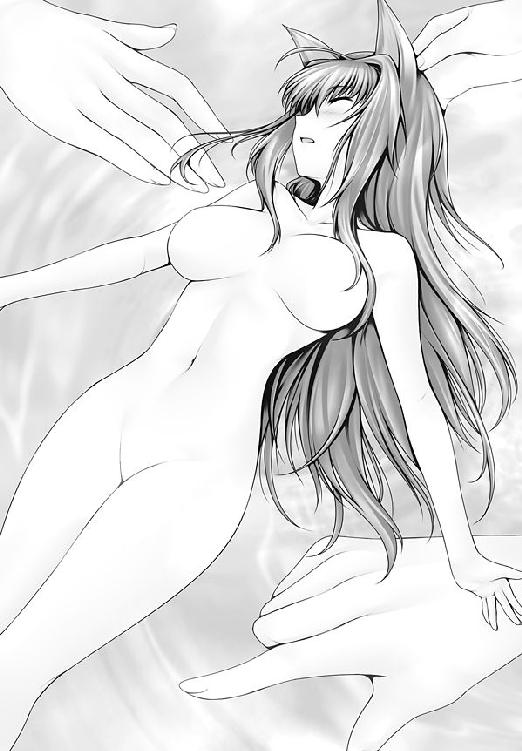
「手には不思議な力があるの。だから、マモリちゃんも自分の力を信じて。必ず治るって」
............そんな、懐かしい記憶を、マモリは思い返していた。
惚けた顔をしていたのだろう、一路が尋ねてきた。
「どうしたのだ？ マモリどの」
「一路」
「なんだ？」
「分かったよ、一路、点穴の意味」
「む？」
「点穴は癒しなんだね」
確信に満ちた目をして、マモリはつぶやいた。
「む......？ まあ、そんなもんだな」
「やっぱりね」
マモリは深くうなずく。
（癒し............？）
あとになって、一路は疑問に思った。
人族とは微妙に違う経脈の探究で頭がいっぱいで、マモリの質問には深く考えずにあいづちを打ってしまったのだった。
『すまん、実はよくわからん』
と、訂正を入れようとも思ったのだが、やめた。
（まあ、よいか。マモリどのも納得してるようだし）
目的以外のことについては、実に適当な一路であった......。
「マモリどののおかげで、ずいぶんと点穴の構図が見えてきた」
「そうかい？ 嬉しいな」
「嬉しいのか？」
「人の役に立てるのは、嬉しいことだよ。生きてるってことでしょ？」
迷路のような城の廊下である。
（早く......！ 師匠のもとへ......！）
がむしゃらに、静は走っていた。
と、曲がり角の先から、女の不穏な声が聞こえてきた。
「一路......、一路め......！」
怒りや憎しみのまじった声音である。
敵だ、と静は判断した。
「師匠に何の用だ！」
静は怒鳴り込むように女の前に出た。
禍神だった。
「一路を、師匠だと......？」
ぎらり、と禍神の目に殺意の光が宿った。
「ちょうどいい。露払いにしてくれる！」
「待てッ！」
一路の声だった。
廊下の奥から、猛ダッシュをかけてくる。
「師匠！」
静の顔に喜びが浮かんだ。
「禍神、お前の相手は、オレだ！」
一路はダッシュの勢いもそのままに、禍神につかみかかった。
そのまま壁にぶちあたる。壁は粉砕され、２人は外へ転がり出た。
そこは広場だった。
「そっちから、来てくれるとはね！」
禍神は蹴りをお見舞いした。
気を充塡させた、掌底ならぬ足底の一撃であった。
「がッ！」
一路は吹き飛び、壁に激突する。
「大丈夫かい？ 一路っ!!」
後を駆けてきたマモリも外へ飛び出した。
「問題ない」
唇を切ったのか、一路は口元をぬぐい、崩れた壁から起き上がった。
「強がりを！」
禍神が飛びかかる。彼女が大きく腕をふるうと、まるで見えないムチがしなるように、腕の先、数十メートルの石畳がぱっくりと両断された。
あやういところで、一路も真っ二つにされそうになる。
「師匠の真空鎌鼬のような技......、いや、それよりも」
禍神の技は強力だ、と静は悔しく思った。
「決着を付けようじゃないか！ 玄鉄の弟子同士の!!」
禍神が腕をふるうたびに、石で敷き詰められた地面に亀裂が走っていく。
「どうしたんだい？ ボクの技を盗んだんだろ？ 早く禁門を開けばいいじゃないか！」
「くッ......」
一路は右へ左へ逃げるばかりである。
そんな一路を、禍神は見透かすような目で見つめた。
「禁門を開けないんだろう？」
図星だった。
「そうさ。禁門はうかつに開けば、肉体に深いダメージを負う。禁門の力を受け入れるには、それに耐えられる肉体を作らなくてはいけない」
「............」
一路は答えなかった。
あえて言い返さないのか、なにも言い返せないのか。
禍神は後者だと受け取った。
「怖くなって当然さ。禁門の恐怖を知り、二度と開けなくなった、そうだろう？」
（違う！）
そう思ったのはマモリだった。
と、隣にいた静も。
「師匠は時間を稼いでいるだけです。気を練っているのです。おそらくは......」
「禁門を開くための身体を作るため、だね」
マモリが言うと、静は我が意を得たようにうなずいた。
静にしてみれば、マモリはまだ、一路を傷つけた敵に過ぎないはずだった。
だが、静は一瞬にしてマモリを理解した。
一路に対する洞察と信頼。
それが自分と同じであれば、マモリを信じてもいいという気持ちになったのだ。
そして、いったん信じると決めたら、どこまでも信じる。
それが古舞静という少女の真骨頂であった。
「静、行くよ！」
マモリと静は、捨て身の攻撃を仕掛けた。
「看護拳！」
メスのカタチをした無数の気弾が、放たれた。
「無駄だよ。ボクにかなうと思ったの？」
禍神にかなわないことぐらい、マモリも分かっていた。
「勝つのはあたしじゃないよ！」
だから、マモリが狙ったのは禍神ではなく、彼女の周囲の地面だった。
地盤が崩され、禍神は地下に落ちた。
「ヤアッ！」
飛び出したのは静だ。
腰に手をやり、スラリと１本の刀を抜いた。
不断刀。刃のない──両方が峰という、意味不明の奇刀である。
代々、不知火流に受け継がれてきた刀の一つであった。一路の弟子となると決めた時に、この一刀にしようと選んで持ち出した刀であった。
（人を斬れぬ刀こそが、今の自分には必要なのだ──！）
禍神はあざ笑った。
「生ぬるい！ 何のための剣だ！ 人を斬れぬ刀など!!」
「斬らぬだけだ！」
静は絞り出した気を刀に流し込んだ。
（極小の一点に濃縮することで、爆発的な力を出すのが点穴の奥義ならば──！）
（それは拳ではなく、剣であっても有効なハズ!!）
振り下ろした刀を、禍神に叩きつけた。
「ガッ......！」
それは、禍神にダメージを与えた。
「おぬしのような悪党、死んで楽にさせるわけにはいかん」
「アハハハハハハ！ 何を言ってるんだい、馬鹿だね!!」
傲然と驕慢で、禍神はひときわ大きな声をあげると。
「点穴でボクを倒せるなんて、ふざけてるよ、キミ」
と、禍神が手をかざした、次の瞬間。
「ッ!?」
静の服が炸裂した。
粉々のばらばらに千切れ飛んだ。
服だけではない、彼女も空中に吹き飛んだ。
（触れてもいないのに、なんて強大な気の量!!）
静は受け身を取ることも出来ずに、地面に叩きつけられた。
すぐに立ち上がろうとするが、身体が言うことを聞かない。
地面に手をつくことすらできず、はいつくばることしか出来ない。
「キミも、仕えるべき師を間違えたみたいだね」
「くっ......」
静は死を覚悟した。
「禍神──ッ！ あたしが相手よ!!」
マモリが飛び込んだ。が。
（このままじゃ間に合わない......ッ！）
静までの絶望的な距離に、マモリは歯がみした。
実は、アリカがいた。
（な、ななな、なんでこんなことになっちゃってるのぉ?!）
実は、さっきからそこにいたりした。
一路を捕まえるために単身、彼のあとを追いかけてきたりしていたのだが、地中から城は出現するわ、ヘンテコな兵士が湧いてでてくるわ、追いかけられるわ、妙ちきりんなバケモノは出てくるわ、それを一撃で破壊する女は現れるわで、一路を捜すどころか、アリカは自分の命を守るので精一杯な状況だった。
（で、やっとのことで一路を見つけたと思ったら......）
シャレにならないマジバトルである。
とっさに隠れて、瓦礫の陰から、闘いの行方を見守っている。
テーザー銃は、しっかりと握っていた。
さっきから一路に狙いをつけては引き金を引けず、狙いをつけては引き金を引けず、どうしたらよいのか困り果てていたのだ。
（どうすればいいの......？）
さっきから一路は、両足をしっかと大地に降ろして、息を深く吸いながら、身じろぎもせずにいる。
（撃てば、必ず当たる）
それが反って、アリカの迷いを深くしていた。
ここで一路を倒すことが、正しい行動のようには思えなかったからだ。
（だけど、一路の手助けをするなんて......）
何のために、ここまでやってきたのか分からない。
（私は一路を捕まえに来たんだから!!）
迷いは迷いを呼び、想いは千々に乱れた。
「まずはオマエから血祭りにあげてやるよ！」
禍神の声にドキリとした。
だが、禍神が狙っていたのは自分ではなかった。
静であった。
ホッとした瞬間、良心がズキリと痛んだ。
（────ッ！）
アリカは引き金を引いた。
禍神に向かって。
銃口から５万ボルトの電流がほとばしり、禍神の身体を直撃した。
「グッ......！」
禍神の動きが止まる。
（やった!?）
アリカはホッとし、すぐに戦慄した。
禍神が何事もなかったかのように動き出したからである。
（私の攻撃なんて、意味がなかったの......？）
銃を撃ったことで居場所がバレてしまった分だけ、状況は悪化していた。
というか、最悪だった。
「く......、こざかしいマネを......！」
「..................ッ！」
逃げなければ生命はなかった。
けれど、アリカは一歩たりとも動けなかった。
禍神の発する殺気の強烈さにあてられ、身体が恐怖で動かなくなってしまったのだ。
「死ねえッ！」
「させない！」
マモリが飛び込んできた。
強烈なマモリの蹴りが、禍神の頰をえぐる。
「がッ......！」
禍神の動きが数瞬、止まったことで、マモリの攻撃が届いたのだ。
アリカの射撃に、意味はあったのだ。
禍神を蹴ったことで、マモリは空中で方角を変え、静のそばに着地する。
立ち上がれずにいる静を脇にかかえて、マモリは跳んだ。
「逃がさないッ！」
直後、禍神の拳が２人のいた場所を打ち砕いた。
「一路ッ！」マモリは叫んだ。
「十分だ！」
一路は練功を完成させていた。
ダンッ！
大地を蹴って、一路は跳んだ。
「にわかじこみの術で！」
禍神はくるりと振り返り、空中から迫る一路を迎撃する。
兵器の勝負であれば、空にいるほうが有利。だが。これは人間と人間の勝負だ。
「落ちてくるオマエを突くなど造作もない！ この勝負、ボクの勝ちだ！」
「おおおおおおおおおおッ！」
一路が、禍神が、人差し指と中指をそろえて、構えを取った。
互いの真芯に向けて、指を突き出す。
激突した。
「きゃあっ！」
アリカが絶望のあまり、両手で顔を覆った。
逆光の中で、禍神の腕が、一路の身体を貫いていたからだ。
「くっ......！」
最初に笑ったのは、禍神のほうだった。
「こ、殺す......！」
逆光の中で、アリカの見た光景は、事実とはわずかに異なっていた。
禍神の拳は、たしかに一路の背中の先に出ていた。
だが、それは禍神の指突が一路の腕にからめとられ、むなしく、彼の脇の間をすり抜けた結果として見えたシルエットに過ぎなかった。
がはっ、と禍神は血を吐いた。
「殺す......、ボクを......！」
つまりは──。
一路の指突が、禍神の胸の中心を突いていたわけであった。
「殺す......、ボクを......、殺す......が、いい......ッ！」
がくりと、禍神は膝を突いた。
「お前の言うことなど、誰が聞くか」
一路はつぶやいた。
つぶやいて、バタリと倒れた。
寄せては返す波の音がする。
ここは城から北東に数キロほど離れた場所にある砂浜である。
真心が立ち上がっていた。
さすがは可憐の姉であった。吹き飛ばされはしたものの、深い怪我は負っていない。
もう一度闘えと言われれば、そのまま闘えてしまえそうな元気を残していた。
「妹を取り戻す気かい？」
生徒会長であった。
「久しぶりだね」
真心は意味深なまなざしを、会長に向けた。
「真心、あいかわらず化け物じみた強さだな」
「ははっ、化け物はアンタのほうだろ。いつまで若いつもりだい」
ふふっ、と会長は笑うだけだ。
「ハニーがお嫁に行くまでかしら」
少女のような瞳に、深い、深い輝きが灯っていた。
「........................」
しばしの間、アリカはテーザー銃を握りしめたまま、動けずにいた。
放心状態だった。
ハッ、と我に返ったのは、ばったりと倒れ込む一路を見たからだ。
（相打ちになったの!?）
いやな胸騒ぎがした。
心配でたまらなくなり、アリカは一路のもとへ近づいた。
「やめろ！」
静の声だった。
アリカは自分が銃を手にしていることを思い出し、静に誤解されていることに気づいた。
「う、撃たないわよっ！ 私だって、状況ぐらいわきまえるわ！」
顔を真っ赤にして、アリカは叫んだ。
「ん......、んん」
一路のうめき声だった。
「師匠！ ご無事ですか」
「うむ。なんとかな」
「なによりです」
静は安堵の声をもらす。
（よかった......）
静の後ろで、アリカもホッと胸をなでおろした。
「ありがとう、２人とも」
一路は礼を言った。
真っ赤になったのはアリカのほうだ。
「べ、別に、あなたを助けたかったわけじゃないのよ！ ただ、私は悪い奴を倒したかっただけで......！」
「おぬしの銃がなければ、禍神を止められなかったかもしれぬ」
「う、運がよかったわね。あなたを撃つための銃だったのよ」
赤面をごまかしたくて、憎まれ口ばかりをアリカは吐き出してしまう。
「師匠を撃つ気なのか？」
そんなわけがない。だがアリカは素直に答えることが出来ず。
「たっ、弾切れになったのが残念だわ。しょうがないわね。勝負はお預けにしておいてあげるわ、じゃあね」
うわずった口調で口走りながら、ぷいっと背を向ける。
「うむ、次の勝負か、楽しみだな」
「わっ、私は全然楽しみじゃないんだからっ！」
アリカは逃げ出すように走り出した。
（な、なに、ドキドキしちゃってるのよ、私は！）
（私は、一路の無事を確かめたかっただけなんだから！）
ただの人助けである。
それ以上の意図も気持ちもない。
静に疑われたりしなければ、一路をかついで病院まで運ぶなりのことをするつもりだった。
（それなのに............）
（撃つつもりで近づいていた、なんて思われていたらどうしよう......）
ハッ、となる。
「別にいいじゃない！ あのバカにどんな風に思われたって!!」
真っ赤に火照った顔をふるふるとふるわせながら、アリカは猛然と走り去るのだった。
去る者がいれば、来る者がいる。
「一路さま！」
可憐であった。
大好きな一路の姿を見つけると、可憐はひときわ大きな笑顔を見せて、一路の元へ駆け寄っていった。
可憐の胸のうちに、愛しさがあふれ出す。
一度は一路への想いを諦めて、姉と共に家に戻ろうと決めただけに、再び、一路の顔を見ることができた喜びは、たとえようもないほどだった。
（もう、絶対に、離れません）
可憐は胸のうちで誓いを立てた。
純条家は純愛の一族。
ひとたび恋をしてしまったら最後、生命のすべては彼と共にある。
彼と離れることは、死するも同じことなのだ。
真心との闘いで、可憐はそれを知った。
一路への想いが高まる。彼への距離を縮めるごとに、大きく、深まっていく。
抑えきれない。
可憐は自分から一路の胸に飛び込むと、その勢いで彼の両頰に手をあて、その唇に口づけをした。
これには、一路がびっくりした。
「か、可憐どの!?」
「お目覚めのキスですわ」
「キス!?」
一路の脳裏に、猫丸に言われた言葉が蘇った。
『女の子とキスしたら、結婚しなくちゃいけないんだぞ』
「可憐どのと結婚しなければ!!」
一路は、そんなことを言い出した。
「ほ、本当ですか!?」
一瞬、可憐は何を言われたのか分からず、きょとんとした顔をしたが、プロポーズをされたのだということが理解できると、みるみるうちに喜びをあふれさせた。
「口づけをしたら、結婚せねばならぬ。そういうしきたりなのだろう？」
それはいったい、いつの時代の話なのか。
「ええ、そうですわっ」
可憐は古風な女の子だった。
やや遅れて、久美恋が駆けてきた。
「みんな、大丈夫？」
一同の無事を見て、久美恋はホッと胸をなでおろす。
「よかった......」
自分が狙われた理由については、最後まで分からないままだったが、みんなが無事であれば、そんなことは小さな問題であった。
すると可憐が無邪気な笑顔を向けてきた。
「一路さまがわたくしに結婚を申し込んでくれました」
「なんですって!?」
びっくりのあまり、久美恋は声を裏返らせた。
「口づけをしたのだ」
一路は理由を説明した。
「わたしにもしたでしょ」
「もちろん、久美恋どのとも結婚する」
「はあっ!?」
わけわかんない。
久美恋は頭を抱えた。
「面白いことになってきてるわねえ」
くすくす、と愉快そうな顔をして鍵子が現れた。
「鍵子、どうしてこんなトコに!?」
久美恋は驚いた。
ここは人里離れた山奥である。散歩の途中で立ち寄れるような場所ではない。
「いいじゃない、そんなことは」
鍵子は追及を散らすように手をひらひらと振ると、一路に視線を送り。
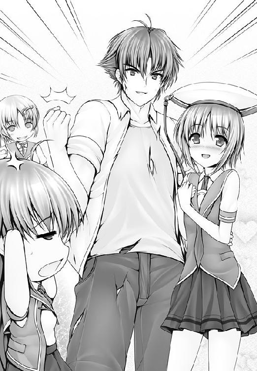
「一路クンは、２人とキスしちゃったから、どっちとも結婚するっていうの？」
「オレは責任を取る男」
なんだそれ。
「ますます一路くん、頭がおかしくなっちゃってる～～～～！」
久美恋の悲鳴が、晴れ渡った空に響き渡るのだった。
終
空がある。
流れる雲のあわいに、ただひっそりと白い光を地上に振りまく月が浮かぶ。
山を背にして、静かにたたずむ建物がある。
一路たちの暮らす学生寮だ。
「くはぁああああ」
たっぷりと張られた湯に身を沈めた瞬間、一路の喉から絞り出すような声がもれた。
へとへとになるまで闘ったあとである。
熱いお湯が染み渡ると、たとえようもない心地よさが身体を包んだ。
「あぁ、天国だ」
その廊下では──。
「あら」
「えっ」
可憐と久美恋がばったりと遭遇していた。
脱衣場への扉を可憐が開けようとしていたので、久美恋は教えてあげた。
「あ、今は一路くんが入っているわよ」
「知っておりますわ」
「なんだ、それならいいのよ......って、知っててなんで入ろうとするのよ!?」
すると、可憐はにっこりと微笑んで。
「わたくしと一路さまは夫婦、すなわち家族。一緒にお風呂に入って何か問題でも？」
「まだ夫婦じゃないでしょっ」
「近い将来の話です。そう数年後の未来です。地球50億年の歴史に比べれば、塵にも満たない誤差ですわ」
「スケールを広げすぎですっ！」
そこへ。
「弟子といえば兄弟も同然。私ならば問題ありません」
がらり、と扉を開けて、静が脱衣場へ入っていった。
「静さんまで!?」
「恋のさや当てに乱入するつもりはありませんが、風呂場で点穴の修行をするとあっては黙ってはいられません。一番弟子は私です」
「そんな」
「よいでしょう」と、可憐。
「いいのっ!?」
「わたくしは寛容ですから」
「いや、それ、寛容の意味をはき違えてるよ！」
と、久美恋が言うものの、可憐はさらりとかわして。
「久美恋さんは、あとで、お１人で入られたらどうでしょうか」
廊下に残るのは久美恋１人となった............。
ううっ、となる久美恋。
これまでのことが色々と思い出された。
ぐっ、と勇気を出す。
「幼なじみだって、一緒にお風呂に入れるもん!!」
と、脱衣場に飛び込んだ。
その時だ。
「な、なんだおぬし!?」
風呂場から声が。
「どうしたの、一路くん！」
可憐や静を追い越して、久美恋は浴室の扉をガラリと開けた。
マモリがいた。
全裸で。
生まれたままの姿で、一路のいる湯船に飛び込んでいた。
「どういうこと!?」
仰天する久美恋に、マモリは平然と。
「転校することにしてさ、一路の学校に」
「病院は!?」
「前から、ちゃんと学校に通えって言われてたんだけどさ、今回の一件で、あたしも修行が必要だって分かったんだ」
「来るのか!?」
今度は一路が仰天した。
「アンタのこと、気に入ったから、面倒見てあげるよ。看護、必要だろ？」
「看護!!」
一路の脳裏で、恐怖の記憶が蘇った。
「全力で遠慮する!!」
一路は逃げ出した。
「待ってってば！」
マモリが追いかける。
廊下に飛び出していく２人を、静は意外そうな顔で見つめ。
「師匠にも苦手とする女子がいたとは......」
「っていうか、２人とも裸でしょ!!」
タオルを持って、久美恋が走り出す。
裸の一路、裸のマモリ、そんな２人の後を追う久美恋。
そんな３人を鍵子も見やる。
「にぎやかねえ」
平和になっても、苦労が絶えることのない久美恋なのであった。
あとがき あるいは、いかにして私は『ふるこんたくと！』を続けるに至ったか。
人生とは、予想もしない方向にしか飛んでいかないロケットみたいなものです。
実業家を目指して上京したはずの私は、大学時代、先輩の手伝いで始めたバイトがきっかけで、エンターテインメント業界に飛び込むことになり、雑誌ライター、構成作家、脚本家などを経て、気づけばライトノベルをせっせと書く毎日を過ごしています。
夢の街、東京でひとり暮らし。３６５日、24時間、どんな風に過ごしても、文句を言われることはありません。
原稿を仕上げては、ふらりと旅行に出て。
原稿が途中でも、ふらりと旅行に出て（Ｅメールは便利だなぁ）。
運悪く、帰りの飛行機が墜落しても、後悔のない自由な人生を生きてきた私にも、来るべきものが来てしまったわけです。
妻が、娘が。
（娘が生まれた日の悲劇については、集英社スーパーダッシュ文庫『初恋マジカルブリッツ 世界でいちばん君が好き！』あとがきをごらんください）
生活は一変。今や打ち合わせのたびに、帰りにおもちゃ屋で幼児玩具を探し求めるパパさんになったわけです。
で、仕事をしていると、娘が赤ペンに興味を持ってきたので、そろそろお絵かきもしたい年頃なのかな、とマグネットペン付きのホワイトボードをプレゼントしたのですね。
娘はきゃっきゃと声をあげながら、ホワイトボードにガンガンとペンを叩きつけます。できあがるのは、インクが出なくなった時にボールペンをこすりつけた時のようなアレですが、見てくれ、と言わんばかりの表情で絵を示されれば『よく描けたねぇ』と褒めたくなるのが親というものです。
そんな娘が、ついに、字を書きました。
『レンタルマギカ』
どういうことだああああああああああああああああああああああああ！
夢でした。
ホワイトボードをプレゼントしたところまでは真実で、あとは幻でした。
いえ、幻とは思えません。
娘は女の子。小説が読めるようになれば、拙作よりも『レンタルマギカ』のファンになるであろうことは想像に難くありません。
『お父さんも、三田先生みたいな、ちゃんとした小説を書いて』
無理だぁぁぁぁぁぁぁぁぁぁぁぁぁぁぁぁぁぁぁぁぁぁぁぁぁぁぁぁ！
お父さんはね、頭のネジが外れた話しか書けないんだよ。
中学生が総理大臣になったり、おっぱいを触ることで争いのない世界を作ろうとするような、そんな話しか書けないんだよ。
ていうか、私がちゃんとした話を書こうとすると、いろんな人から怒られるんだよ。
オトナの世界って、よくわかんないね。
私は考えました。
娘が大きくなるまでには、おっぱいを連呼することが恥ずかしくない世の中になってしまえば、娘からの愛情を失わずに済むのではないかと。
『ふるこんたくと！』は、そんな切なる願いを込めた、祈りのような小説なのです。
な～んて。
あすか正太
ふるこんたくと！
２ だから、ふたりにプロポーズ
あすか正太
角川スニーカー文庫
平成22年5月1日 発行
発行者 井上伸一郎
発行所 株式会社角川書店
〒102-8078 東京都千代田区富士見2-13-3
http://www.kadokawa.co.jp/
(C) Shouta ASUKA 2010